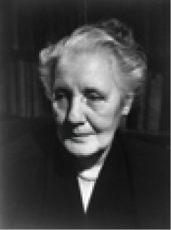

K
kabızlık (constipation) Çocuğun, aşırı titiz, baskıcı olması nedeniyle tam olarak sevemediği annesine karşı sessiz direnişe geçmesi ve dışkısını annesinin istediği zaman, istediği yere bırakmaması sonucu ortaya çıkan rahatsızlık. Çocuklarda görülen süreğen kabızlık olaylarının çoğunun nedeni olarak, tuvalet eğitiminde zorlayıcı yöntemlerin kullanılması gösteriliyor. Kimi zaman da çocuğun okula yetişmesi, derste sıkıştığında izin istemekten çekinmesi; soğuk, karanlık gibi nedenlerle tuvalete gitmemesi de dışkısını tutmayı alışkanlık durumuna getirmesinin nedeni olabiliyor. Sürekli ruhsal gerilim de kimi insanlarda barsak hareketlerini etkileyerek işlevsel kabızlık yaratıyor. Dışkıl dönemde libido hoşlanımı, idrar yapma ve dışkılama organlarına yöneliktir. Annesinin yemek yeme, tuvalet eğitimi ve giyim konusundaki beklentilerine uygun davranmak, çocuğa oldukça güç geliyor. Çocuk, buna ancak, annesini sevmesi durumunda katlanabiliyor. Anne, aşırı titiz, baskıcı (dışkıl kişilikli) ise çocuk, tam olarak sevemeyeceği annesine karşı sessiz direnişe geçiyor; dışkısını annesinin istediği zaman, istediği yere (tuvalete) bırakmıyor. Dışkıyı bırakmamanın yollarından biri de kabızlıktır. Çocuk, tuvalette dışkı çıkarmadan oturunca telaşlanan annenin müshillere, fitillere başvurması, ruhsal nedene bir de organik nedeni eklemiş oluyor. Çocuk, genç ve yetişkinlerde görülen kabızlığın önemli bir nedeni de beslenme biçimidir. Kabızlığı önlemenin etkili çarelerinden biri, sebze ve meyve ağırlıklı beslenmedir. Çocuklardaki kabızlığı gidermek için müshilden, fitilden önce sorunun açıklanarak ailenin yatıştırılması ve çocuğun ruhsal gücünün artırılması etkili oluyor. Bkz. ruhsal kökenli bedensel bozukluklar.
kabiliyet Bkz. yetenek.
kâbus Bkz. karabasan.
kaçınma (avoidance) Organizmanın yaptığı davranımla uyarıcının uyarımı başlatmasını engelleme ya da geciktirme. Kaçınmanın olması için organizmanın söz konusu uyarıcıyı daha önce öğrenmiş olmalıdır. Bkz. kaçınma alıştırması; kaçınma aşamaları; kaçınmacı kişilik bozukluğu; kaçınmacılık; kaçınma düzeni; kaçınma-kaçınma çatışması; kaçınma kuramı; kaçınma öğrenimi; kaçınma tedavisi; kaçınma tepkisi.
kaçınma alıştırması (escape training) Denek hayvanının her denemede tedirgin edici bir uyaranla karşılaştırılmasına dayanan deneysel bir süreç. Bkz. kaçınma; kaçınma aşamaları.
kaçınma aşamaları (avodiance gradient) Belirli durumlar içinde kaçınma tepkisinin öğrenilmesi sırasında, çekince işaretinin görünmesiyle kaçınma tepkisi arasındaki sürenin giderek azalması evreleri. Bkz. kaçınma; kaçınma alıştırması.
kaçınmacı kişilik bozukluğu (avoidant personality disorder) Yaygın bir toplumsal ketlenme, yetersizlik duyguları, eleştiriye ya da reddedilmeye karşı aşırı duyarlık nedeniyle kabul edilmediği, destek görmediği sürece toplumsal ortamlardan kaçınma ve etkileşimlerde belirli bir utanma korkusu duyma belirtileriyle tanımlanan kişilik bozukluğu. Bkz. kaçınma.
kaçınmacılık (escapism) Gerçekçi tepkiler yapılması gereken tedirgin edici durumlardan kaçınma eğilimi. Örneğin, nevrozlarla ilgili görüntülerin çoğu, kaçınma aracı sayılıyor. Bkz. kaçınma.
kaçınma düzeni (escape mechanism) Tedirgin edici çatışma ve durumlardan kurtulmak amacıyla sürekli olarak düş kurma ya da nevroz ve psikozlara sığınma. Bkz. kaçınma.
kaçınma-kaçınma çatışması Bkz. kaçınma; çatışma.
kaçınma kuramı (theory of escape) Sullivan’ın oluşturduğu ve benliğin, yürürlükte olan etkinlik örüntüsüne aykırı düşen yaşantıların etkilerinden kaçınma eğiliminde olduğunu savunan kuram.
kaçınma öğrenimi (escape learning) Bir ceza uygulandığında, kaçarak kurtulmayı öğrenme. Cezanın verdiği acıdan kaçınma, bir tür ödül etkisi yapıyor.
kaçınma tedavisi (aversion therapy) Alkol, uyuşturucu kullanma, zorlanımlı tepkiler, alışkanlıklar gibi istenmeyen davranışların elektroşok, tiksindirici maddeler ve benzeri acı verici ya da hoş olmayan uyarımlarla eşleştirilerek bastırıldığı bir davranış tedavi türü; kaçınma terapisi, kaçınma sağaltımı. Bkz. kaçınma.
kaçınma tepkisi (avoidance reaction) 1. Belli bir uyarıcı ya da yaşantıdan kaçınma biçimindeki davranış. 2. Belli bir durumdan uzaklaşma ya da o durumu yaratan uyarıcıyı yok ederek o durumdan kurtulma.
kaçınma sağaltımı Bkz. kaçınma tedavisi.
kaçınma terapisi Bkz. kaçınma tedavisi.
kaçış (fugue) Kimi psikozlarda kişinin gerçek kimliği dışında bir kimliğe bürünerek, yaşadığı çevreden uzaklaşması; firar. Kişi, kaçış süresi içindeki yaşantılarını, kendine geldikten sonra anımsamıyor. Bkz. çoğul kişilik.
kaçış düzenekleri Bkz. benliğin savunma mekanizmaları (özgürlükten kaçış yaklaşımı: Yetkecilik; Kendiliğinden Uyum; Yıkıcılık).
kaçma (escape) 1. Kaçış, firar etme. 2. Kurtulma, paçayı kurtarma. 3. Gözünden kaçma, aklından çıkma.
kaçma-kaçma çatışması Bkz. kaçınma-kaçınma çatışması.
kadın cinsellik hormonu Bkz. estrojen.
kadında cinsel heyecan bozukluğu (female sexual arousal disorder) Kadında uygun koşullar ve yeterli uyarım olmasına karşın döl yolunda (vajinada) ıslanma ya da şişmenin gerçekleşmemesi ya da sürmemesi ile ortaya çıkan cinsel heyecan bozukluğu. Bkz. cinsel birleşme; cinsel heyecan bozuklukları.
kadında cinsel soğukluk Bkz. cinsel soğukluk.
kadın düşmanı (misogynist) Kadından, doğumdan, çocuk bakımı gibi konulardan iğrenen, uzak duran kişi.
kadın eşcinsel Bkz. kadın eşcinselliği.
kadın eşcinselliği (lesbianism) Adını İ.Ö. 600’lerde şair Shappo’nun Ege’de, üzerinde yaşayan kadınlar arasındaki erotik etkinlikleri anlattığı Lesbos adasından almış olan terim; lezbiyenlik. Buna Shappism de deniyor. Bkz. eşcinsellik.
kadın hakları (women rights) Kadınların cinsiyet farklılığı nedeniyle haksızlığa uğramalarını önleyici, eşit işe eşit ücret; hukuk önünde, eğitimde, mirasta ve öbür alanlarda erkeklerle eşitlik ya da doğum, çocuk bakımı ve emzirme gibi yalnızca kadınlara özgü durumlarda da onlara ayrıcalık sağlayan haklar. Bkz. insan hakları.
kadın hastalıkları bilimi (gynécologie) Kadın cinsel organlarını, bunların fizyolojisini ve hastalıklarını inceleyen tıp dalı; jinekoloji.
kadın rolünden kaçma Bkz. erkeksi protesto.
kadınsı (effeminate) Bedensel ve ruhsal özelliklerinin bir ya da birkaçı yönünden erkekten çok kadına benzeyen (kişi); efemine.
kadınsılık (androgyny, androginism) 1. Bir kültürde geleneksel cinsellik rollerinin dışına çıkan ve tipik erkeksi olduğu düşünülen olumlu özellikleri, tipik kadınsı olduğu düşünülen olumlu özelliklerle bütünleştiren bir kişilik tipi; cinsellik rolleri konusunda esneklik; androcini. Bu terim genel olarak kadınsı kişilik özellikleri bulunan erkekler için kullanılıyor. Psikolojide feminist baskılar sonucu üzerinde çok durulan bu özelliğin bir “ideal” olduğu; uzunca bir süre, erkekleri “geleneksel maço katılığı”ndan kurtararak özgürleştirdiği savunulmuştur. Ancak yapılan birçok araştırma sonucunda, bu özelliğe sahip olan erkeklerin, savunulduğu gibi hiç de mutlu ve özgür olmadıkları; cinsel kimlikleri konusunda kafalarının karışık olduğu anlaşılmıştır. Bunun sonucunda terim, yeni anlamlar kazanmıştır. 2. Bedensel nedenlerle ya da yönelim sonucu biyolojik cinselliğin açıkça belli olmaması. Kadınsıların davranışlarında; giyim kuşam, kendini sunuş biçimlerinde, üstlendikleri rollerde bir belirsizlik vardır. Bu kişiler genel olarak cerrahi müdahale istemeseler de zaman zaman hormon tedavisine ve ikincil cinsel özellikleri bastırıcı cerrahi müdahalelere başvuruyorlar. 3. Cinsellik rollerini tümüyle reddetme. 4. Cinsel kimliği olmama; bu bakımdan nötr olma.
kadınsı Oedipus karmaşası Bkz ruhsal-cinsel gelişim kuramı (Oedipus Karmaşası).
kafa emekçisi Bkz. entelektüel.
kafa-kuyruk sokumu sistemi Bkz. özerk sinir sistemi.
kafa sinirleri (cranial nerves) Omurilik yoluyla değil; doğrudan kafaya giren, kafadan çıkan ve yüzle, boyunla ilgili duyusal, devimsel ya da parasempatik sinir liflerini taşıyan 12 sinir. Bu sinirleri sırasıyla şunlar oluşturuyor: Koku, görme, göz devinimi ve göz bebeğinin büyüyüp küçülmesi, yüzden, ağızdan gelen tat dışındaki duyular ile çiğneme kaslarına giden devinim sinyalleri, gözyaşı bezleri, tat duyusu, işitme ve denge, dilin arkasından tat duyuları, kulak ve ortakulaktan gelen duyular ile yutkunma, kan basıncı, konuşma ve yutma edimlerindeki devinim sinyalleri, boğaz kasları ve dil hareketleri sinirleri.
kafatası bilimi (phrenology) Yetilerin gücünü, bağlı bulundukları beyin alanının gelişimine dayandıran ve bu gelişimlerin de kafatasının biçim, çöküntü ve çıkıntılarında yansıdığını savunan, geçerliğini yitirmiş bir yaklaşım; frenoloji.
kafatası çatlaması Bkz. organsal beyin bozuklukları.
kafa travması Bkz. organsal beyin bozuklukları.
kafe duvarı (cafe wall) Zöllner yanılsamasının başka bir türü. Şekildeki yamalar, kusursuz birer dikdörtgen olmasına karşın, gerçekte birbirine koşut olan yatay çizgileri koşut değilmiş gibi algılıyoruz. Bkz. yanılsama.
Kafe Duvarı
kafein (caffeine) Çay, kahve, kola, kakao gibi maddelerde bulunan acı tatta, kristal bir alkaloid. kalabalık davranışı Bkz. sürü psikolojisi.
kalabalık korkusu (demophobia, ochlophobia) Kalabalık içinde ya da karşısında duyulan hastalık derecesindeki korku; kalabalık fobisi, kalabalık yılgısı.
kalıtım (heredity) Eşey hücrelerdeki DNA zincirleriyle anne babanın kromozomundaki kalıtsal (genetik) özelliklerin oğul döllere aktarılması; veraset, irsiyet, soyaçekim. Annenin yumurtası ve babanın sperminin birleşimiyle yeni döllere aktarılan bu özellikler, anne ve babadaki saç, göz, ten rengi, organsal yapı, belli hastalıklara yatkınlık gibi bedensel özellikler, huy, zihinsel yeti ve yetenekler, duygusal yatkınlıklar olabiliyor. Eşey hücrelerdeki kromozom sayısı, organizma türlerine göre değişiyor. İnsanda 23 çift kromozom bulunuyor. Anne ve babadan alınan 23’er kromozom, anormal oğul döller oluşturacağı için, mayoz bölünme gerçekleşerek, bu durum önleniyor. Kromozomlardaki küçük bir aykırılık, oğul döllerde anormal özelliklerin belirmesine yol açabiliyor. Gen çiftlerinin çoğunlukla biri öbürüne baskın (dominant); öbürü çekinik (recessive) olmakla birlikte, bunlar özdeş de olabiliyor. Bu durumda baskın özellik, oğul döllere aktarılmış oluyor. İki çekinik özellik de baskın özellik gibi oğul döllere aktarılıyor. Kalıtım; gelişim ve öğrenme psikolojisinde, beden ve ruh sağlığında, ruhsal bozukluklarda temel rol oynuyor. Belli bir davranış biçiminin; örneğin şizofreni gibi bir hastalığa yatkınlığın, kişilik özelliklerinin, yeteneklerin ne ölçüde kalıtımdan, ne ölçüde çevreden kaynaklandığının bilinmesi, psikoloji ve eğitimde büyük önem taşıyor. Bununla, hangi konuda nelerin yapılamayacağı ve nelerin, nasıl yapılabileceği belirlenebiliyor. Kalıtsal nitelikleri kromozomların taşıdığı, 1903’te drosophila adlı meyve sineğinin 8 iri kromozomu incelenerek ortaya konuldu. Genetiğin bu başlangıç yıllarında insan kromozomlarının sayılması olanaksızdı. Bu yüzden kitaplar yıllar boyu insan kromozom sayısını 48 olarak yazdı. Gelişen teknoloji yardımıyla bu sayının 46 olduğu, 1956’da belirlenebildi. Bkz. adanmışlık; kalıtım bilimi; kalıtım iplikçikleri; mongolluk; RNA.
kalıtım bilimi (genetics) Biyolojik soyaçekimin yasalarını düzenli olarak inceleyen bilim dalı; soyaçekim bilimi, genetik.
kalıtım iplikçikleri Bkz. kromozom.
kalıtsal (genetic) 1. Genlerle ilgili, genlerce üretilen ya da etkilenen. 2. Belli bir organizmanın ya da türün kökeni ya da gelişimiyle ilgili. 3. Kalıtım bilimiyle ilgili. Bkz. kalıtsal bilinçdışı; kalıtsal psikoloji; kalıtsal yatkınlık kuramı; kalıtsal zekâ geriliği.
kalıtsal bilinçdışı Bkz. analitik psikoloji (ortak bilinçdışı).
kalıtsal psikoloji (genetic psychology) Davranışı kalıtsal yöntemle inceleyen psikoloji dalı; genetik psikoloji; kalıtsal ruhbilim. Kalıtsal psikoloji, ruhsal olayları, birey açısından da tür açısından da kökeni ve gelişimi yönünden inceliyor. Kuramsal olarak, insan türü dışındaki türlere de eğiliyor. Bu psikoloji dalı, gelişim psikolojisinin bir parçasıdır. Bkz. evrim psikolojisi.
kalıtsal ruhbilim Bkz. kalıtsal psikoloji.
kalıtsal yatkınlık kuramı (heredity-predisposition theory) Kimi bireylerin, belirli hastalıklara kalıtsal yatkınlık gösterdikleri görüşü. Bu tür hastalıklar, elverişli koşulların oluştuğu ortamlarda ortaya çıkıyor.
kalıtsal zekâ geriliği (endogenous feeble-mindedness) Zekâ geriliğinin, dış etkenlerin etkisi olmadan, bir kuşaktan, sonraki kuşağa kalıtımla geçen biçimi.
kalkan alıklığı Bkz. kretenizm.
kalkan bezi Bkz. tiroit bezi.
Kallikak ailesi (Kallikak family) Aynı baba ve iki değişik anneden üreyen kuşakların bir dalında uyumlu, normal ve başarılı; ötekinde ise geri zekâlı, uyumsuz ve başarısız kişilerin oluştuğu görülen bir aile incelemesinin takma ad.
kamışçık Bkz. klitoris.
kamış özentisi (penis envy) Psikanalize göre, kadınların, bilinçdışında kamış (penis) sahibi olmayı istemeleri. Bu isteğin, iğdişlik karmaşasının bir parçası olduğu ileri sürülüyor.
kamuoyu (public opinion) 1. Bir sorun karşısında çoğunluğun ortak kanısı. 2. Halkın görüşü; halk katında oluşan düşünce; efkârı umumiye.
kan fobisi Bkz. kan korkusu.
kanı Bkz. duyuşsal yapı; inanç, kanı, değer.
kanıt (evidence) Bir olayın, durumun ya da önermenin doğruluğuna ya da yanlışlığına karar vermede kabul gören bilgi, belge ya da akıl yürütme.
kan korkusu (hemophobia) Kan görünce duyulan aşırıkorku; kan fobisi, kan yılgısı.
KANT, Emanuel (1724-1804) Bilginin deney ve deney öncesi olarak iki kaynaktan geldiğini; deney bilgisinin de önsel kurallarının bulunduğu görüşünü içeren bir öğreti geliştirmiş olan düşünür. Kant, Könisgberg’de doğdu. Çocukluk yıllarında geleneklere, inançlara aşırı bağlı olan ailesinden etkilendi. 1732’de verildiği Collegium Friedericianum’da dinsel ilkelere dayalı bir öğrenim gördü. 1740’ta Könisberg Üniversitesi’ne girdi; felsefe ve doğa bilimleri okudu. Orada Wolff’un izleyicilerinden Knutzen’in öğrencisi oldu. Canlı Güçlerin Doğru Değerlendirilmesi Üstüne Düşünceler konulu çalışmasıyla üniversiteyi tamamladı. Bir süre özel öğretmen olarak çalıştıktan sonra 1755’te Könisgberg Üniversitesi’nde aylığı öğrencilerce ödenen öğretim üyeliğine başladı. O yıl Genel Doğa Tarihi ve Gök Kuramı adlı çalışmalarını yayımladı. Çalışmalarının ilkinde Descartes ve Leibniz’in görüşlerini inceleyerek fizik güçlerin matemetik ilkelerine göre anlatımı konusundaki kendi görüşlerini ortaya koydu. İkincisinde ise evrenin oluşumunu mekanik kurallara bağlayarak Laplace’ın geliştireceği kuramın temelini atmış oldu. 1770’te Duyu Dünyası ile Düşünce Dünyasının Formu ve İlkeleri Üzerine adlı yapıtı ile çalıştığı üniversitede matematik ve mantık ordinaryüs profesörlüğüne yükseldi. 1781’de Salt Aklın Eleştirisi’ni; 1788’de Pratik Aklın Eleştirisi’ni; 1790’da da Yargı Gücünün Eleştirisi’ni yayımladı. Kant’ın düşünce yaşamı, bu çalışmalarına dayanılarak eleştiri öncesi ve eleştiri dönemi olarak ikiye ayrılıyor. Fizik, matemetik, gökbilim ve coğrafyaya eğilen; bunları tarihsel insan düşüncesinin gelişimi açısından açıklayan Kant’ın felsefesinde odak sorun; ahlak, estetik, varlıkbilim, psikoloji, insan, evren, özgürlük, ödev, mantık, metafizik gibi konulara ilişkin düşüncelerinin kaynağının bilgi; ölçüsünün ise akıl oluşudur. Kant bu konuda, İngiliz düşünürü D. Hume’dan esinlendiğini söylüyor. Onun yanı sıra Hutchesen, Shaftesbury ve J. J. Rousseau’dan da etkilenmiştir. Bilgi sorununa yöntem sorunuyla yaklaşmıştır. Onun eleştiri öncesi ile eleştiri dönemini birbirine bağlayan Duyu Dünyası ile Düşünce Dünyasının Formu ve İlkeleri Üzerine adlı yapıtında, duyulur bilgi ile düşüncede var olan bilgi arasındaki temel bağlantı üzerinde durmuştur. Bu bağlantı, duyularla ilgisiz “salt öğeler” sorununa dayanıyor. Kant’ın felsefeye getirdiği yenilik, bu öğelerin önsel olduğunu göstermiş olmasıdır. Kant’a göre duyu bilgisinin de uzay ve zaman denen önsel öğeleri vardır. Bunlar olmadan bir duyu bilgisi ortaya çıkmıyor. Ne ki uzay ve zaman, birer kavram değil; birer görüdür (anschaung’dur).Uzayla matematik; zamanla kuramsal mekanik ilgilidir. Deney, uzay ve zaman gibi iki önsel ilkeye dayandığından, bu iki bilim kesindir. Kant’a göre “bütün bilgiler deneyle başlar; ancak bu, bütün bilgilerin kaynağının deney olduğu anlamına gelmez. Deney verileri, uzay ve zaman denen iki koşulla biçimlenmelidir. Bilginin kavramlar, yargılar ve usavurmalar denilen üç ana öğesi ve duyarlık, anlık ve us denilen üç yetisi vardır. Yargılar, önsel ve deney sonrası olarak ikiye ayrılır. Önsel olanlar analitik; deney sonrası olanlarsa hem analitik hem de sentetiktir. Analitik yargılar, kavramları açıklamaya; onların tanımında saklı niteliği aydınlığa çıkarmaya yarıyor. Ancak, bu yargılar yeni bilgi vermiyor. Sentetik yargılar ise kavramın dışına çıkarak ona yeni bir nesne eklediği için yeni bilgi veriyor. Örneğin, “Nesneler yer kaplar.”yargısında “yer kaplama”, nesnenin tanımı içinde olduğundan, yer kaplamayan bir nesne olmadığı için analitiktir. Oysa “Nesne ağırdır.” yargısı, nesne kavramının dışına çıkıp onu ağırlıkla bağlantılandırdığı için yeni bilgi veriyor; bu nedenle sentetiktir. Kant, bilgi sorununun çözümünde yargıları inceleyerek kesin sunuca ulaşmak istiyor. Bunun için de matematik, fizik ve metafizik üzerinde duruyor. Ona göre matematikteki tüm yargılar, yalnızca tanımlardan çıkarılamadığından sentetiktir. “Doğru, iki nokta arasındaki en kısa yoldur.” yargısı, yalnızca doğru kavramına dayanmıyor; onun dışında nokta ve yol kavramlarını da gerektiriyor. Tümel olan bu yargı, deneyle karşıtı saptanabilecek durumda değildir. Bu özelliklerinden ötürü de önsel sentetiktir. Bilginin gerçekleşmesinde yalnızca görüler, kavramlar, yargılar yeterli değildir; bunların aşılıp nesnelerle ilgi kurulması gerekir. Düşünce ve duyu verilerinin ötesinde bir öğe taşıdıkları için kimi sentetik yargılar önseldir. Deneyden gelmeyen bu bilgi öğesi, bütün deney bilgilerinin temelini kuruyor. Bilginin oluşmasında birlikte çalışması, aralarında uyum sağlası gereken iki yetiden biri, etkin olan zihin: öbürü ise edilgin olan duyarlıktır. Kavramın içeriğini, duyulur olanın oluşturması, doldurması gerekiyor. Duyu verileriyle dolmayan kavramlar, içi boş birer kabuk olmaktan öteye geçemiyor. Salt zihin, olayları kendi yasalarına uygun olarak biçimlendiriyor. Bunu yaparken, uzay ve zamandan başka, kimi önsel kurallara da dayanıyor. Bu kategoriler, deney verilerini dağınıklıktan kurtarıp birliğe kavuşturuyor ve düzenliyor; insanın anlayış yetisinde, düşünmenin özünde yer alıyor. On iki tane olan bu kategoriler, nicelik, nitelik, bağlantı ve kiplik olarak dört bölümde toplanıyor. Nicelikte birlik, çokluk, bütünlük; nitelikte gerçeklik, yadsıma, sınırlama; bağlantıda töz-ilinek, neden-etki, karşılıklı bağlılık; kiplikte ise olabilirlik, gerçeklik, gereklilik gibi kategoriler bulunuyor. Kant’a göre, metafizik sorunlarında kesin sonuca varma olanağı yoktur. İnsan aklı, birtakım sorunlarla sürekli uğraşma gereğini duyar. Çözüme ulaştıramadığı sorunları bırakamaz. Akıl, aklın belli yöntemlere göre yaptığı çıkarsamalar ve metafizik üçlüsü arasında içten bir bağlantı vardır. Sağlıklı bilgi, deney verileriyle önsel öğelerin uzlaşmasından oluştuğu için, bunu metafizik alanda da aramak gerekiyor. Oysa metafiziğin tin, evren ve Tanrı gibi üç ana konusunu oluşturan bu idelere kesin bir açıklık getirilemiyor. İde, duyulur evrende karşılığı bulunmayan bir varlık olduğundan, bilginin kapsamına alınsa da çözümsüz kalıyor. Salt akıl kavramı olan ideyi anlamaya girişen her çaba, onunla sağlanacak bilgi, “boş görünüş” olmaktan öteye geçemiyor. Bu konuyu işleyen düşünme yetisi, deney alanının dışına çıkınca, birtakım çelişkilerle karşılaşıyor. Evreni açıklama girişimi, antinomi sorununun kaynağını oluşturuyor. Kant, bu girişimin insanı ister istemez kimi çıkmazlarla karşı karşıya getireceğini ileri sürüyor. Ona göre insan aklı, çözemeyeceği birtakım sorularla yüklüdür. Böyle de olsa bunlardan kurtulamıyor. Çünkü bunlar, “aklın yapısının gereği”dir. Evren idesinden kaynaklanan bu antinomiler, bağlantı ve kiplik başlıkları altında toplanıyor. Bunlardan ilki evrenin başlangıcı, sonu, uzayda bir sınırı olup olmadığını içeriyor. Maddeyi oluşturan atomların sonsuzca bölünebileceği de bölünemeyeceği de düşünüldüğü için kesin sonuca varılamıyor. Üçüncü antinomi, özgürlüktür. Bu konuda birbirini izleyen nedenler dizisi düşünüldüğü zaman, nedenden bağımsız bir varlık bulunur mu, bulunmaz mı? Bu sorunun da kesin karşılığı bulunmuyor. Dördüncü antinomi ise nedensellik ya da Tanrı sorununu içeriyor. Evrenin nedeni olabilecek bir nesnenin varlığı ya da yokluğu, kesin bir sonuca ulaştırılamıyor; karşıt nitelikte kanıtlar ileri sürülebiliyor. Bu çelişmelerin ortaya çıkış nedeni, düşüncenin deneyi aşmaya kalkması, deneyin; görünmeyen varlık alanı ise bilinemeyen, yalnızca var olduğu üstüne çıkmasıdır (yükselmesidir). Kant’a göre, biri görünen; öbürü görünmeyen iki varlık alanı vardır. Görünen varlık alanı bilinebilen; görünmeyen varlık alanı bilinemeyen; var olduğu düşünülebilendir. İnsan da bir yanıyla görünen varlık; öbür yanıyla da görünmeyen varlık alanına bağlıdır. Ancak, insan, öbür dirilere oranla “eksik bir varlık”tır. Doğa, ona öteki dirilere verdiği yaşam olanaklarını vermemiştir. İnsan, bu eksiğini yalnızca aklıyla giderebiliyor. Görünmeyen varlık alanı, kendi kendinde olandır; yalnızca tasarlanabildiğinden, bilginin sınırı durumundadır. İnsanın istenç özgürlüğü, bu alanda beliriyor. Bu özgürlük, duyarlığın egemenliğinden çıkmış olan insan özüne dayalı bir gereklilikten kaynaklanıyor. Bunun karşıtı da evrenin yapısıyla ilgili olan, evrendeki nedenler dizisini kendi kendine başlatan güçtür. Kişinin istenç özgürlüğü, ahlakla bağlantılıdır. Bu özgürlük, insanın ahlak yükümlülüğünün temelini oluşturuyor. Kant felsefesini oluşturan iki varlık alanı vardır. Bu varlık alanlarından biri, insanı kuşatan, her alanda bütünlüğü ile var olan doğadır. İkincisi de var olması geren alan, özgür davranışların oluşturduğu alandır. Ahlak, bu ikinci alanın bütününü içeriyor. Ahlak alanında iki yöntem kullanılıyor. Bunlardan biri deney verilerinden yola çıkıp çözümlemeyle genel yargılara varma; öbürü, akıl kavramlarına dayanarak deney alanına, görünen varlıklara ulaşmadır. Ahlak sorunlarını açıklamada da yanılan ilke, önsel olandır. Ahlakta da bilgide olduğu gibi önsel öğeleri bulmak gerekir. Ahlak, bu öğelerle geçerlik taşıyan bir bilimdir. Ahlakın içgüdülerle, doğal eğilimlerle ilgisi yoktur. Ahlak, akılda bulunan bir yasaya, kesin buyruğa bağlıdır. Bu buyruklar da önseldir. Bu buyruğun özünü, tek salt değer olan iyi istenç oluşturuyor. Bu istenç, “başkalarında bir amaç olarak görecek gibi davran.”dır. Bu tümel yasa dışında ahlakın özerklik ve özgürlük gibi iki ilkesi daha vardır. Ahlak ilkeleri hukuk, tarih ve devlet için de geçerlidir. Yargı Gücünün Eleştirisi’nde estetikle ilgili görüşlerini ortaya koyan Kant’a göre doğa ile bilgi arasındaki uyumu kavramak önemlidir. Estetiğin kapsadığı sorunların kaynağını bu uyum oluşturuyor. Doğadaki genel uyumun kaynağını, nedenlerini bilme olanağı yoksa da doğada sağlam bir düzenin, genel uyumu yaratan bir yasanın bulunduğu sezilebiliyor. Bu sezgi, kişide doğayı yüce bir aklın, yüce bir zihnin düzenlediği, uyumlu kıldığı kanısını uyandırıyor. Özü bilinemeyen bu yasa ve uyumun sağladığı düzen karşısında kişide bir haz, bir beğeni oluşuyor. Doğadaki diri varlıklarla ilgili algılar da böyle bir düzenin ve uyumun bulunduğu görüşünü doğuruyor. Estetiğin ve dirileri konu edinen doğa biliminin kaynağı ise doğa ile bilgi iletisi arasındaki uyumdan doğan ve diri varlıkları düzenleyen üstün yasayı sezmedir. Estetiğin temelini güzel ve yüce kavramları kurmuştur. Güzelin tanımı, beğeni temeline dayanıyor. Beğeni ise “bir nesne üzerine, bir karşılık beklemeden hoşlanma ve hoşlanmama ile yargıya varma yetisi’dir. Bu nitelikteki hoşlanmanın içeriğine güzel deniyor. Güzelden yararlı olma beklenmiyor. Yararlı olanda, bir nesneyi isteme, onu elde etme eğilimi bulunurken, güzel için böyle bir şey söz konusu değildir. Güzellik, “nesnenin amaca uygun gelmesinin biçimi” olarak da tanımlanıyor. Ancak, bu uygun gelme ile nesnenin bir amacı içerdiği tasarımı ileri sürülmüyor. Güzeli tanımlamak için yaygın olarak kullanılan “Beğeni tartışılmaz.” yargısı, güzeli oluşturan öğelerin tümelliği ve önselliği nedeniyle Kant için geçerli değildir. Duyuların sınırlarını aşan, bütün ölçülerin üstüne çıkan ve “biyolojik olan nesne” diye nitelenen yüce, estetiğin ikinci temel kavramıdır. Bu nesneye uzaktan bakılıyor; onun görkemi karşısında bir eziklik duyuluyor. Böylece geçilen ahlakla ilgili varlık alanında estetik duygu ile ahlak bilinci kaynaşıyor. Bu kaynaşma ile de kavranır idelerin duyulur varlık alanının ışığında, doğa ile sanattaki güzellik oluşuyor. Ahlaksal ödevlerin tanrısal bir buyruk niteliğinde anlaşılması demek olan din, başlıca sorun olarak, insan doğasındaki kötünün nereden kaynaklandığını ele alıyor. İnsanda bulunan kötüye karşı köklü eğilim ortadan kalkmıyor; ancak, akılla önlenebiliyor. Çünkü kötü, insanı yönlendiren itici güçlerin yer değiştirmesi, tersine dönmesidir. Oysa insan, yaşamına anlam kazandıran iyiyi gerçekleştirmek için vardır. Kant, tarihe doğa ile özgürlük; kılgısal aklın amaçlarıyla deneysel gerçekliğin nedenselliği arasındaki bağlantı nedeniyle yakınlık duyuyor. Kant’ın kuramı, uzay ve zaman sorunu geniş yorumlara neden olmuş; yeni Kantçılık denilen akımın doğmasına yol açmıştır.
Emanuel KANT
kan yılgısı Bkz. kan korkusu.
kaos (chaos) Uyum, düzen ya da istikrarın olmaması durumu.
kapalı uçlu soru (closed ended question) Verilen seçenekler arasından bir ya da birkaçının seçilmesi istenen; doğru-yanlış ya da çoktan seçmeli biçiminde düzenlenmiş soru. Bkz. ucu açık soru.
kapalı yer fobisi Bkz. kapalı yer korkusu.
kapalı yer korkusu (cleithrophobia) Herhangi bir dış neden olmamasına karşın, kapalı yerlere girdiğinde kişinin bilinçdışı mekanizmaların etkisiyle duyduğu yoğun kaygı ya da bunaltı; kapalı yer fobisi, kapalı yer yılgısı.
kapalı yer yılgısı Bkz. kapalı yer korkusu.
kapasite Bkz. alabilirlik.
kapatma (closure) Zihnin, algılanan bir imgedeki eksik parçaları bütünlediğini; gerçeklik ile istenen tablo arasındaki boşlukları kapattığını belirten bir biçim yasası. Bkz. kapatma yasası.
kapatma yasası (law of closure) Bir biçim düzenleme yasası. Bir figür taslağında eksik olan öğeleri, görsel sistem dolduruyor. Bkz. biçim; Gestalt düzenleme yasaları.
kapsam geçerliği Bkz. geçerlik.
karabasan (nightmare) Bir hızlı göz hareketli uyku döneminde (REM’de) uykunun son üç saatinde görülen uzun ve duygusal yoğunluğu fazla, aşırı korkutucu, çok canlı rüya; kâbus. Bkz.korku.
karaduygulu Bkz. Galen’in huy sınıflaması.
karakter Bkz. kişilik; özyapı.
karakter analizi Bkz. kişilik çözümlemesi.
karakter farkları psikolojisi Bkz. bireysel ayrılıklar psikolojisi.
karakterlerin ayrılığı yasası Bkz. MENDEL, Johan. Gregor.
kara kutu Bkz. öğrenilmiş çaresizlik; SKINNER, Burrhus Frederik.
karamsarlık Bkz. kötümserlik.
karanlık fobisi Bkz. karanlık korkusu.
karanlık korkusu (nyctophobia) Karanlıktan aşırı ölçüde korkma hastalığı; niktofob, karanlık fobisi, karanlık yılgısı.
karanlık kutu (black box) Davranışçıların, uyaranla tepki arasına giren değişkene verdikleri simgesel ad. Bkz. davranışçı psikoloji.
karanlık yılgısı Bkz. karanlık korkusu.
karar (resolution) Belirli bir tutum ve davranışı benimseme.
kararlı davranış (determined behavior) Bir davranışı ya da iki, üç davranıştan birini seçip gerçekleştirmek için zamanında karar verme tutumu ve o tutuma dayalı davranış. Bkz. anlayış; bilinçlilik; dengelilik; tutarlılık.
kararlılık Bkz. dengelilik.
kararsızlık (indecision, instability) Karar vermekte güçlük çekme, kolayca karar verememe ya da ikide bir karar değiştirme. Bkz. tutarsız davranış.
karasevda (melancholia) Belirli bir neden olmadan çöküntüye girip çevreden gelen uyaranlarla bağını koparma; güçlü suç ve günah duyguları içine düşme durumu; melankoli.
kardeş kıskançlığı Bkz. kıskançlık.
kardeş yarışması (sibling rivalry) Genellikle kardeşler arasında herhangi bir konuda, kıskançlığa dayanan yarışma.
karıştırıcı değişken (confounding variable) Deneyde olmamasına karşın deneyin sonucunu etkileyen değişken. Bkz. içgeçerlik.
karizma (charisma) Çok sayıda ve farklı insanlarca beğenilme, onların güvenini ve hayranlığını kazanma yetisine ve bu niteliği ile siyasal, dinsel, sanatsal, bilimsel konularda kitleleri etkileme gücüne sahip olma. Bkz. saygınlık.
karmaşa (complex) Davranış üzerinde etkisi olan örgütlü, düzenli bir dizi bilinçsiz ya da yarı bilinçsiz düşünce, duygu, anı ve eğilimler; kompleks. Karmaşaları, çocukluktaki bireyler arası ilişkiler oluşturuyor ve ruhsal yapının duygu, tutum, uyum davranışları gibi her düzleminin oluşumunu etkileyebiliyor. Karmaşalar, ilgili oldukları kuramın bakış açısına bağlı olarak türlere ayrılıyor Örneğin, klasik psikanaliz, Oedipus karmaşası ile iğdişlik karmaşasını; Adler, aşağılık karmaşasını ve üstünlük karmaşasını; Jung, anne karmaşasını tanımlamıştır. Karmaşalar, sıklıkla hastalıklı anlamda kullanılsalar da Jung’un yaklaşımında olduğu gibi, kesinlikle hastalık yaratıcı olmaları gerekmiyor. Örneğin, Jung’un anne karmaşası, başlangıçta kişinin kendi annesiyle ilgili düşünce, duygu ve anılarından oluşuyor. Giderek, çevresinde gördüğü öbür anneler ile onlardan edindiği izlenimler de anne karmaşasına katılıyor. Kişinin anne kavramına ilişkin düşünce, duygu ve tutumlarını bu karmaşa belirliyor. Görüldüğü gibi karmaşa, değişmez ve hastalık yaratıcı olabileceği gibi, dinamik ve normal de olabiliyor. Bkz. karmaşa psikolojisi.
karmaşa psikolojisi (complex psychology) Psikanalistlerin baskıya alınmış, duygusal yanı ağır basan düşünce sistemini, hastalıklı davranışları kendisine çalışma alanı olarak seçtikleri psikoloji dalı; kompleks psikolojisi, karmaşa ruhbilimi. Bkz. karmaşa.
karmaşa ruhbilimi Bkz. karmaşa psikolojisi.
karşı aktarım (counter transference) Psikanalizle tedavi sürecinde psikanalistin hastaya duyduğu düşmanlık ya da sevgi duygularından oluşan geçişim. Bkz. psikanalitik tedavi yöntem ve teknikleri
karşıcinsel (heterosexual) 1. Karşı cinsten kişiler arasındaki cinsel ya da romantik ilişkiler. 2. Cinsel nesne olarak karşı cinsten birini seçen, seçme eğilimi gösteren ya da cinsel yönden ağırlıklı olarak karşı cinse ilgi duyan kişi; heteroseksüel.
karşıcinsellik (heterosexuality) Karşı cinsten kişilere cinsel ilgi duyma.
karşı gelme-karşıt olma bozukluğu (resistance) Çocuk ve ergenlerde görülen sıklıkla öfkelenme; büyükleriyle tartışmaya girme, onların isteklerine uymama; başkalarını kızdıran davranışlar yapma; kendi yaramazlıklarının suçunu başkalarına yükleme; alınganlık gösterme, kin gütme biçimindeki uyum ve davranış bozukluğu. Bu bozukluğu olan çocuk ve ergenlerin, başkalarının haklarına önemli boyutta saldırdıkları görülüyor. Bunlar, erişkinlerle tartışma sırasında özdenetimlerini yitiriyor, terliyor, aşırı sinirleniyorlar. En çok, ev ortamında sorun yaşıyorlar. Bunların, okulda öğretmenleri ve yaşıtlarıyla da ilişki zorlukları olabiliyor. Başka bir ruhsal bozuklukları yoksa bunların duygudurum, düşünce süreçleri, yönelim ve konuşmalarında bir hastalık göze çarpmıyor. Ağır giden bozukluklarda sözel beceri ve içgörü kısıtlılığı görülebiliyor. Kızlarda daha çok, edilgin-saldırgan bir tutum gözleniyor. Belirtilerin değerlendirilişinde gözden kaçırılmaması gereken nokta, bu belirtilerin bir bölümünün, okul öncesi ve ergenlik çağındaki çocukların normal davranışları olduğudur. O nedenle tanı sırasında belirtilerin şiddetine, sıklığına ve çocuk ya da ergenin yaşantısını ne oranda engellediğine dikkat etmek gerekiyor. Bu bozukluğa sıklıkla özgüven eksikliği, duygudurum oynaklığı; uyuşturucu madde, alkol, sigara kullanımı eşlik ediyor. Oranı, yüzde 1-16 olarak belirlenen bu bozukluk, çoklukla 8. yaştan önce ortaya çıkıyor. Başlangıçta yavaş başlayan bozukluk, aylar ve yıllar içinde gelişim gösteriyor. Psikodinamik görüşe göre bu sorunların nedeni, gelişim dönemlerindeki bağlanma, ayrışma ve ruhsal bağımsızlıkla ilgili zorluklardır. Bu çocukların anne babalarının en az birinde antisosyal kişilik bozukluğu, özellikle annede depresyon olmak üzere, duygudurum bozukluğu, aşırı etkinlik ve dikkat eksikliği görülüyor. Karşı gelme-karşıt olma bozukluğu olanların tedavisi için de davranım bozukluğu (saldırganlık ve şiddete yönelme) görülen çocuklara uygulanan eğitim programları öneriliyor. Bu program, ergenlik öncesinde daha etkili oluyor. Söz konusu programın uygulanışı sırasında anne babadan, bu çocukların olumlu ve istenilen davranışlarını ödüllendirmesi; istenmeyenleri de görmezlikten gelmesi ya da olumsuz davranışı gördüğünde çocuğu, içinde bulunduğu ortamdan uzaklaştırması isteniyor. Anne babaya, hedeflenen davranışları geliştirerek, bunların süreç içindeki sıklığını ve şiddetini derecelendirme yöntemi öğretiliyor; sonra klinik görüşmelerde bu derecelendirmeler inceleniyor. Bu bozukluğa başka bir ruhsal bozukluk eşlik etmedikçe ilaç tedavisine başvurulmuyor. Bkz. çocuk ve ergende görülen uyumsuzluklar.
karşı koşullama (counter conditioning) Belli bir uyarıcıya yönelik koşullu tepkinin yerine başka bir koşullu tepki koyma. Watson, küçük beyaz tavşandan, koşullanma nedeniyle korkan Albert’i bu korkusundan kurtarmk için gerçekleştirdiği şey, bu tür bir koşullamadır. Davranış tedavilerinde kullanılan düzenli duyarsızlaştırma gibi yöntemlerde, bu temel ilke geçerlidir. Bkz. koşullama; yerinde duyarsızlaştırma.
karşılaşım grubu (encounter group) Hümanistik kuramları temel alıp duygu ve deneyimleri paylaşma, bireysel gelişimi destekleme gibi değerleri vurgulayan bir hümanistik grup tedavisi. Bu tedavinin amacı, grup üyelerinin hem kendilerinin hem de başkalarının duygularına karşı duyarlı olmalarını sağlamak; yüz yüze etkileşimle kendilerini açma, anlatma ve karşıdakini dinleme yetilerini geliştirmek; olumsuz savunma mekanizmalarını kullanmalarını önlemek; “burada, şu anı yaşayabilir” duruma gelmelerini sağlamaktır. Karşılaşım grubu, tedavi özelliğinden başka kişisel yetileri daha etkili, daha doyurucu kullanmayı sağlayacak koşulları yaratmada da etken oluyor. Bkz. T grubu.
karşılaştırma Bkz. büyük, ortanca, küçük ve tek çocukta kişilik gelişimi.
karşılaştırma düzeyi Bkz. değiş tokuş kuramları.
karşılaştırmalı psikoloji (comparative psichology) Hayvan türlerinin, değişik ırkların ya da bireylerin ayrı gelişim aşamalarında zihin ve davranış açılarından gösterdikleri farklılıkları karşılaştıran psikoloji dalı; mukayeseli ruhiyat; karşılaştırmalı ruhbilim. Bkz. psikoloji.
karşılaştırmalı ruhbilim Bkz. karşılaştırmalı psikoloji.
karşılayıcı davranış (substitute behavior) Baskı altında tutulan ya da önlenen tepkilerin yerine geçerek onların doyurulmasına yarayan ödünleyici davranışlar.
karşılıklı asimilasyon (reciprocal assimilation) Piaget’nin asimilasyon kuramında, iki ya da daha çok şemanın karşılıklı olarak birbirini asimile etmesi için kullandığı terim. Bkz. Piaget kuramı.
karşılıklı ateş kes Bkz. uyum (II)
karşılıklı belirlenimcilik (reciprocal determinism) Bandura’nın, davranışları, çevrenin ve algı, bilişsel yetenekler gibi kişisel değişkenlerin birbirini karşılıklı olarak etkilemesinin oluşturduğunu ve kişiliği, bu etkileşimin biçimlendirdiğini belirten görüşü; karşılıklı determinizm. Bu görüş, davranışı çevrenin belirlediği görüşünü reddediyor; birey, çevreden etkilenirken çevreyi de etkiliyor. Bkz. toplumsal öğrenme kuramı.
karşılıklı ceza (reciprocal punishment) Piaget’ye göre 8 yaş ve üstü çocukların suça uygun cezayı savundukları bir ceza türü. Örneğin bu yaştaki çocuklar, kedisini beslemeyi sürekli ihmal eden çocuğun yemekten yoksun bırakılması gerektiğini savunuyorlar. Böylece davranışlarının sonuçları konusunda içgörü kazanmış olacaklarını düşünüyorlar. Bkz. ahlak gelişimi (Piaget’ye Göre Ahlak gelişimi); kefaretli ceza; kısıtlama ahlakı.
karşılıklı determinizm Bkz. karşılıklı belirlenimcilik.
karşılıklı ileti Bkz. iletişim.
karşılıklı ketleme (reciprocal inhibition) 1. Birbiriyle ilişkili iki sözcüğün, adın ya da imgenin, birbirinin anımsanmasını engellemesi. Bkz. duyarsızlaştırma; engel; ketleme. 2. Bir sinir yolu etkinliğinin, başka bir sinir yolu etkinliğince engellenmesi. 3. Davranış tedavisinde, kaygı yaratan uyarıcılarla karşılaşıldığında kaygıyı engelleyen tepkilerin verilmesi durumunda, bu uyarıcılarla kaygı arasındaki bağın zayıflayacağı varsayımı. 4. Bir refleksin başka bir refleksle engellenmesi ya da karşıt kasların aynı anda kasılmasını önleyen bir düzen.
karşılıklılık anlayışı Bkz. grup psikoterapisi.
karşılık ödeme adaleti (retributive justice) Piaget’nin açıkladığı haklılık anlayışının gelişimi. Piaget, haklılık anlayışının gelişimini, karşılık ödeme adaleti ve bölüşüm adaleti kavramlarıyla açıklıyor. Karşılık ödeme adaleti, hatalı davranışlar için uygulanan cezaların haklılığı ile ilgilidir. Piaget, bu amaçla çocuk deneklere, suç işleyen bir çocukla ilgili öyküler anlatmış ve bu çocuk için farklı cezalar önermiştir. Çocuklara bunların hangisinin uygun ceza olduğunu sormuştur. Sonuçta, şu iki ceza türünün, farklı yaşlarda farklı değerlendirildiğini saptamıştır: ceza çektirici ceza ve ödünleyici ceza. Bkz. bilişsel gelişim kuramı; PİAGET, Jean.
karşıta dönüşme (reversal into opposite) Freud’a göre, içgüdülerin dolaysız amaçlarına götüren yol kapalı olduğunda içgüdüsel amacı, karşıtına dönüştürerek doyuma ulaştırmaya yarayan savunma mekanizması. Bkz. benliğin savunma mekanizmaları.
karşıt cinsellik (transsexualism) Kişinin kendini yanlış cinsin bedenine hapsolmuş duyumsadığı; karşıt cinse özgü bedensel özelliklere ve toplumsal rollere sahip olmak için zorlayıcı bir istek duyduğu ruhsal-cinsel bir bozukluk. Gerçek karşıt cinselliği şizofreniden, ağır ruh hastalıklarından, bedensel ya da kalıtsal anormallik kaynaklı bozukluklardan ayırt etmeye yarayan çeşitli ölçütler bulunuyor. Kişinin kendi cinsel anatomisinden rahatsız olması (benlik uyumsuz); karşıt cinsten birisi olmaya ilişkin derin, kalıcı bir istek; buna bağlı olarak da cinsiyet değiştirmeyi istemek, bu ölçütlerdendir. Kimi karşıt cinseller, ameliyatla cinsiyet değiştirmeye yönelirken, kimisi de karşıt cins gibi giyinmekle yetiniyorlar. Cinsel kimlik bozukluğu olarak değerlendirilen karşıt cinselliğin, eşcinsellik ve karşıt giysicilikle karıştırılmaması gerekiyor. Bkz. cinsellik hoşnutsuzluğu.
karşıt duyarlığı (contrast sensitivity) Bir nesne ile o nesnenin arka yönü arasındaki farklılıkları algılama yetisi; tezat hassasiyeti.
karşıt duygu ve eylemler Bkz. ruhsal-cinsel gelişim kuramı (Dışkıl Dönem).
karşıt enerji boşalımı Bkz. topografik kuram (Bilinçaltı).
karşıt etkisi (contrast effect) Beklenilenden farklı olan uyarıları, olduklarından daha farklı algılama eğilimi; tezat tesiri.
karşıt giyinme Bkz. kılık özentisi.
karşıt iletiler Bkz. ruhsal kökenli bedensel bozukluklar.
karşıt istek Bkz. bozma.
karşıt koşullama (counter-conditioning) Klasik koşullamada, önceden koşullandırılan bir uyarıcının, koşullu refleksle çatışan ve ondan daha güçlü olan bir tepkiye yol açan koşulsuz bir uyarıcıyla eşlenerek, söz konusu koşullu refleksin ortadan kaldırılması; duyarsızlaştırma. Daha yalın bir dille; belli bir uyarıcıya yönelik koşullu tepkinin yerine, başka bir koşullu tepkinin konulması. Watson’un klasik örneğinde küçük beyaz tavşandan korkan küçük Albert’i bu korkusundan kurtarmak için yapılan koşullama, buna örnek oluşturuyor. Davranış tedavilerinde kullanılan yöntemlerin çoğunun; örneğin, sistemli duyarsızlaştırmanın dayandığı temel ilke budur. Bkz. girişkenlik eğitimi.
karşıtlar birliği (ambivalence) Analitik psikolojide, ruhsal işleyişin üç ilkesinden biri olan ve her istek ve eğilimin ya da güdünün, tersini de yaratacağını dile getiren ilke. Buna göre, nesne ya da kişiye karşı örneğin, sevgi, tiksinti; saldırganlık, çekingenlik, aynı zamanda duyuluyor. Öteki iki ilke için bkz. entropi; eşdeğerlilik.
karşıtları bulma testi (antonym) Deneklerden, verilen bir dizi sözcüğün ya da resmin karşıtını bulmaları istenen test.
karşıt süreç kuramı (opponent process theory) 1. Algı psikolojisinde belli bir rengin algısının, birbirine karşıt üç alıcı çiftinden ya da kanalından; örneğin, kırmızı-yeşil, sarı-mavi ve siyah-beyazdan gelen sinyallerin birleşimine bağlı olduğu görüşünü ileri süren kuram. Hering’in ortaya attığı bu kurama göre, her öğe, bileşendeki yalnızca bir rengi; örneğin, kırmızı ya da yeşili sinyalliyor; hiçbir zaman, ikisini birden sinyallemiyor. Bkz. üç renk kuramı. 2. Richard Solomon’un, her duygusal tepkinin, özgün duygu ortadan kalktıktan sonra bile süren karşıt bir duygu tepkisi yarattığını savunan kuramı. Bu kurama göre, sağlıklı bir organizma, normal bir güdülenme düzeyini korumaya çalışıyor. Şu ya da bu yöndeki bir artış, sistemi yeniden dengeye kavuşturacak karşıt bir süreci yaratıyor. Bu da örneğin, bir akrobatın, işinden neden zevk aldığını açıklıyor. Akrobat, hareketinden önce yoğun bir kaygı duymasına karşılık, hareketini tamamladıktan sonra, büyük bir rahatlama duyumsuyor. Uyuşturucu kullanımında da haz, kaygıya yol açıyor. Her alışkanlık, tersini yaratıyor. Bu kurama göre ayrıca, yeniden yeniden uyarıcıyla karşılaşma, ilk tepkinin giderek daha çok zayıflamasına ve daha güçlü bir karşıt tepkinin ortaya çıkmasına yol açıyor. Örneğin, uzun süre madde kullanımı, giderek daha az haz veriyor; buna karşılık, maddenin kesilmesi, daha şiddetli ve hoş olmayan tepkilere neden oluyor.
karşıtlık ilkesi (principle of contrariety) Mantıkta, “iki karşıt önermenin ikisi birden doğru olamaz; ama ikisi birden yanlış olabilir.” ilkesi; karşıtlık kuralı, karşıtlık yasası. “Tüm bilim adamları nesneldir.” önermesi doğru ise, “Hiçbir bilim adamı nesnel değildir.” önermesi yanlıştır. Öte yandan, “Tüm bilim adamları nesneldir.” önermesi, hem doğru hem de yanlış olabilir.
karşıtlık kuralı Bkz. karşıtlık ilkesi.
karşıtlık yasası Bkz. karşıtlık ilkesi.
karşıt tepki oluşturma (reaction–formation) Bireyin, kendini rahatsız eden bilinçdışı istek ya da dürtülerini gizleyerek, bunun tam karşıtı davranışlar sergilemesi biçiminde ortaya çıkan bir savunma mekanizması. Komşusunu “orospu” diye suçlayarak ahlakçılık taslayan biri, gerçekte kendi cinsel istek ya da dürtülerini gizlemenin peşindedir. Obsessif kompulsif tepkiler de karşıt tepki oluşturma mekanizmasının işlemekte olduğunu ortaya koyan örneklerdir.
kas duyumu (muscle sensation) Duyu organları uyarıldığında kaslarda algılanan belirli bir basınç duyumu.
kas gerginliği (tonus) Etkin olmadıkları zaman kaslarda görülen hafif ve sürekli gerginlik durumu.
katabolizma (catabolism) Karmaşık maddelerin parçalanarak basit maddele dönüştürülmesi de içinde olmak üzere, karmaşık protein moleküllerinin parçalanarak aminoasitlere dönüştürülmesinde olduğu gibi, metabolizmanın parçalama, indirgeme bölümü.Bkz. anabolizma; metabolizma.
katalepsi (catalepsy) Kol ve bacaklardaki mumsu katılık, uyarımlara karşı tepkisizlik, dilsizlik ve hareketsizlik belirtileriyle ortaya çıkan hastalık. Kişi, saatlerce, günlerce bu durumda kalabiliyor. Mumsu nitelemesi ile, hastanın kol ve bacak duruşuna birisinin bir muma biçim verir gibi biçim verebildiği; kişinin de uzun süre o durumda kalabildiği dile getiriliyor. Bu belirti genellikle donuk
şizofrenide görülüyor.
katarsis Bkz. arınma.
katarsis terapisi Bkz. arınma tedavisi.
katatoni Bkz. donukluk durumu.
katatonik stupor (catatonik stupor) Çevreye yönelik hareketlerde ve kendiliğinden, normal hareketlerde belirgin ölçüde azalma durumu. Bu etkinlik azalımı, kimi zaman hastanın, çevresinde olup bitenlerin farkında değilmiş gibi görünmesine neden olabiliyor. Ancak, tepkisiz, suskun, hareketsiz görünmesine karşın, hastanın bilinci yerindedir.
katatonik şizofreni Bkz. şizofreni.
kategori (category) 1. Nicelik, nitelik ya da düzeyleri benzerlik gösteren nesne, kişi, anlatım ya da sözcüklerin oluşturduğu bütünlük; bağdaşık, türdeş yapı; sınıf, grup, ulam. 2. Bir anlatımda yer alan öğelerden herhangi birinin yerine konulabilecek öbür sözcük ya da sözcük grupları arasında var olan ortaklık. Bkz. kategorik tutum; kategorileme.
kategorik tutum Bkz. soyut tutum.
kategorileme Bkz. gruplama; sınıflandırma.
katı, dayatmacı eğitim yöntemleri Bkz. geleneksel eğitim.
katılık (rigidity) Nesnel durumların gerektirmesine karşın, kişinin tutum ve davranışlarını değiştirme yeterliğini gösterememesi.
katılım (participation) 1. Bir etkinlikte, deneyde, grupta ve benzerlerinde etkin rol alma. 2. Piaget’ye göre, çocukların, kendi isteklerini, düşlemlerini, rüyalarını gerçeklikle karıştırma eğilimi. 3. Benzer şeyleri aynıymış gibi algılama eğilimi.
katılımcı gözlem (participant observation) Gözlemcinin, bilgi edinmek istediği bir toplumsal gruba, onun bir üyesi gibi katılarak yaptığı grup içi gözlem. Bkz. katılımcı gözlemci.
katılımcı gözlemci Bkz. gözlem; SULLİVAN, Harri Stack.
KÂTİP ÇELEBİ (1609-1657) Tarih, coğrafya ve bibliyografya alanında önemli yapıtlar vermiş, medrese düşüncesini eleştirmiş Osmanlı, düşünür. Kâtip Çelebi, İstanbul’da doğdu; aynı yerde öldü. Doğu’da Hacı Halife; Batı’da ise Hacı Kalfa adıyla anılan Kâtip Çelebi’nin asıl adı Mustafa’dır. Babası Abdullah, Enderun’da yetişmiş, silahdarlık göreviyle saraydan ayrılmıştı. Kâtip Çelebi 14 yaşına dek özel eğitim gördü. 1623’te Anadolu Muhasebesi Kalemi’ne girdi. IV. Murat döneminde kâtip olarak Doğu seferlerine katıldı. İstanbul’a döndüğünde kendini tümüyle okuma ve yazmaya verdi. Dönemin ünlü bilginlerinin derslerine katıldı; medrese öğrenimindeki eksiklikleri giderdi. Çok geniş bir ilgi alanı olan Kâtip Çelebi’nin zengin bir kitaplığı vardı. 1645’te sırası geldiği halde yükseltilmediği için kalemdeki görevinden ayrıldı. 1648’de Takvimü’t-Tevarih adlı yapıtı dolayısıyla şeyhülislam Abdürrahim Efendi, onu kalemde ikinci halifeliğe getirdi. Ondan sonra art arda yapıtlar verdi. En önemlileri tarih, coğrafya ve bibliyografya alanında olmak üzere, telif, çeviri 20’yi aşkın kitap yayımladı. Bu arada dönemin medreselerinin din bilimleri ve pozitif bilimler alanındaki durumunu ortaya koyduğu ve eleştirdiği yapıtlarıyla da adını duyurdu. Coğrafya ile ilgili yapıtlarının en önemlisi olan Cihannüma, Osmanlı coğrafyacılığında yeni bir çığır açtı. Bu yapıt, o güne dek hemen hemen hiç yararlanılmamış olan Batı kaynaklarını Osmanlı coğrafyacılığına tanıtımı bakımından büyük önem taşıyor. Kâtip Çelebi’nin Batı’da tanınan en ünlü yapıtı Keşfü’z-Zünun an Esamii’l-Kütübi ve’l Fünun’dur. Bu Arapça bibliyografya sözlüğünde 14.500 kitap ve risalenin adı ve yazarı verilmiştir. Son yapıtı olan Mizanü’l-Hakk fi İhtiyari’l Ahakk’ta da dönemin din bilginlerinin tartıştıkları konulara ilişkin düşüncelerini açıklamıştır. Burada pozitif bilimlerin gerekliliğini, bunların ortaya koyduğu verilerin dinsel bilgilerle çatıştığını açıklamış; düşünce ve görüş farklılıklarının insanlık tarihi kadar eski olduğunu vurgulamıştır. Bunun doğal olduğunu ve hoşgörüyle karşılanması gerektiğini belirtmiştir. Ayrıca din bilginlerinin kendi aralarındaki tartışmalarının temelsizliğini vurgulamıştır. Kâtip Çelebi, yapıtlarının yanı sıra medresenin egemenliğindeki düşünce dünyasının dışında görüşler ortaya koymuş olmakla da önem kazanan bir bilgindir. Batı kaynaklarının önemine dikkat çekmesi, bu dilden yapıtlar çevirmesi ve doğu kaynaklarına eleştirel bir gözle bakması, Kâtip Çelebi’nin, o dönem açısından büyük önem taşıyan atılımlarıdır. Başlıca yapıtları: Tuhfetü’l-Kibar fi Esfari’l-Bihar, (ö.s.), 1729, (yeni harflerle 1973); Cihannüma (ö.s.), 1732; Takvimü’t-Tevarih, (ö.s.), 1733; Düsturü’l-Amel li-İslahi’l-Halel, (ö.s.), 1863, (yeni harflerle 1982); Nizamü’l-Hakk fi İhtiyari’l-Ahakk, (ö.s.), 1864, (yeni harflerle 1972); Türkçe Fezleke, (ö.s.), 2 cilt, 1869-1870; Keşfü’z-Zünun an Esamii’l-Kütübi ve’l-fünun, (ö.s.) Ş. Yaltkaya ve R. Bilge (yay.), 2 cilt, 1941-1943; İlhamü’l-Mukaddes fi Feyzi’l-Akdes, (ö.S.), . Hamidullah (yay.), İslam Tetkikleri Enstitüsü Dergisi, IV, (3-4), 1971.
kavga etme Bkz. eğitim güçlükleri.
kavram (concept) Nesne, varlık, olay ya da olguların somut özelliklerinin soyutlanıp sınıflandırılması ve genellenmesi; konsept, mefhum. Düşünme, kavramlar aracılığı ile gerçekleştiriliyor. Kavram öğrenmek için bir nesne, varlık, olay ya da olgunun tüm özelliklerini ve o nesne, varlık, olay ya da olgunun öbür nesne, varlık, olay ya da olgularla ilişkilerini ve farklılıklarını bilmek gerekiyor. Bundan anlaşılan, ayırt etmeyi öğrenmeden kavramın öğrenilemeyeceğidir. Ayırt edilen özellik, öbür benzer nesne, varlık, olay ya da olgulara genellenerek kavram edinilmiş oluyor. Bir kavram, başka sözcüklerle tanımlanabildiğinde ya da bir sözcük değişik bağlamlarda kullanılabildiğinde öğrenilmiş oluyor. Örneğin, “kitap” kavramı, belli bir “kitap” değil; gördüğümüz değişik kitaplara ilişkin algılarımızdan yararlanarak beynimizde oluşturduğumuz bir “kitap”tır. Daha açık deyişle “kitap” diye bir kavramın oluşabilmesi için “kitap” sözcüğünün anlamını bilmemiz; gösterilen “kitap”ı tanımamız ya da onun bulunmaması durumunda onu düşünebilmemiz (ona ilişkin bir imgemizin ya da düşüncemizin varlığı); “kitabın doğası”nı bilmemiz, özelliklerini anlamış olmamız gerekiyor. Bilinçte bir nesneye göndermede bulunan bütün sunumlar (bütün bilişler), ya birer sezgi ya da birer kavramdır. Sezgi, bir tekil sunum; kavram ise bir genel sunum ya da çeşitli nesne, varlık, olay ya da olgularda ortak olan özellikler örüntüsünün sunumudur. Görgül olaylara, kavramlarla anlam kazandırarak iletişim sağlıyoruz. Sınıflandırma ve genellemeleri kavramlarla gerçekleştiriyoruz. Tüm kuramların kavramlara dayandığı anımsanırsa kavramların açık seçik bir tanımını yapmanın bilimsel araştırmalarda ne denli önemli olduğu daha iyi anlaşılır. Kimi kavramlar, örneğin hacim, kütle gibi gözlemlenebilir nesnelerle ya da nesnelerin özellikleriyle ilintili iken; duygu, akıl gibi kavramlar, doğrudan gözlemlenemiyor; ancak, gözlemlenebilir değişkenlerle bağlantıları kurulabiliyor. O nedenle kavramları kavramlarla açıklayabildiğimiz gibi, bunu birincil terimlerle (anlamlarının ne olduğunda birleştiğimiz sözcüklerle) de yapabiliyoruz. Küçük çocukların izlediği yol, daha çok budur. Psikoloji için en önemli noktalardan biri de kavramlarının, işevuruk tanımlarla açıklanmasıdır. Buna bağlı olarak iyi bir kavram tanımı, tanımlamanın ayırt edici özelliklerini kapsayıp öbürlerini dışarıda bırakan; olabildiğince o şeyin ne olmadığını değil, ne olduğunu anlatan; açık ve anlaşılır olan; farklı kişilerce farklı anlamlar yüklenemeyecek anlatımlardan oluşan tanımdır. Bütün bunlardan da anlaşıldığı gibi, bir nesne, varlık, olay ya da olguya ilişkin ne denli çok algı, yaşantı edinilirse o nesne, varlık, olay ya da olguya ilişkin o denli yeterli bir kavram oluşturuluyor. Bkz. bilişsel öğrenme; kavrama; kavrama (buluş) yoluyla öğrenme; kavramlaştırma; kavram oluşturma; kavram öğrenme; kavramsal öğrenme; kavrayış; sözcük öğrenme.
kavrama (comprehension ) Her yönüyle ve iyice, kesin olarak anlama. Bkz. bilişsel öğrenme; kavram.
kavrama (buluş) yoluyla öğrenme Bkz. bilişsel öğrenme.
kavramlaştırma (conceptualization) Nesne, varlık, olay ya da olguların algılanan temel öğelerini yapılandırarak kavram durumuna getirme. Bkz. kavram.
kavram oluşturma (con copt formation) Kavramları (bir nesne, varlık, olay, olgu ve durumları ya da nitelikler kümesinin ortak özelliklerini zihinde birleştirip soyutlama ve genelleme ile belli düşünceleri öğrenme ya da geliştirme. İster taş, toprak, su, bitki, buğday, hayvan, kuş gibi somut; isterse iyilik, doğruluk, kötülük, adalet gibi soyut olsun; bütün kavramlar, soyutlama ve genelleme sonucunda oluşturuluyor. Bkz. kavram.
kavram öğrenme (concept learning) Algılama ve sözcük öğrenmeden sonra gelen süreç. Bebekler sözcükleri nesne, varlık adı olarak öğreniyorlar. Kavram, birçok yönden birbirinden farklı olabilen nesne, varlık, olay ya da olguların ortak özellikleri zihinde soyutlanıp genellenerek yapılandırılıyor. Bitki, soğuk, taş, mavi gibi. Kavram öğrenmenin temelinde ayırt etmeyi öğrenme vardır. Bkz. algı; kavram.
kavramsal gelişim Bkz. kavram.
kavramsal öğrenme (conceptual learning) Bir konuyu, ilişkili kavramlara dayanarak öğrenme, öğrendiği kavramların anlamını, kapsamını değiştirerek geliştirme. Bkz. devimsel öğrenme.
kavrayış (comprehension) Bir nesne, varlık, olay, olgu, durum ya da sözlü bir anlatımın öğrenilip anlaşılması. Bkz. kavram.
kaygı (anxiety) 1. Bilinçdışından kaynaklandığı için nedeni bilinmeyen tehlike, talihsizlik korku ya da bekleyişinin yarattığı tedirginlik, akıldışı korku; anksiyete, endişe, bunaltı. Kaygı, güvensizlikten doğan tedirgin edici duyguyu dile getiriyor. Belli bir ölçüde tasa ve kuşku sözcükleriyle de anlamdaştır. Kaygı, genel anlamıyla böyle tanımlansa da kullanıldığı yere, yer aldığı kurama bağlı olarak değişik anlamlarda kullanılıyor. Örneğin, “akıl dışı bir korku” tanımı, yalnızca gerçek tehlikeyle karşılaştırıldığında orantısız olan fobik kaygılar için geçerlidir. Bkz. fobi. 2. Nesnesi olmayan korku. Korku, tehlike yaratacağı düşünülen bir insan, hayvan ya da olay karşısında duyuluyor. 3. Öğrenme kuramlarında “kaçınma”yı güdüleyen ikincil bir dürtü. Kaçınma tepkisinin kaygıyı azalttığı düşünülüyor. 4. Klasik psikanalize göre, kişinin benliğinde bulunan ya da çevrenin engellemesi yüzünden bastırılan bilinçsiz güçlerin etkisiyle ortaya çıkan, henüz algılanmamış bir etkene yönelik duygusal tepki. Freud, kuramını geliştirdiği süreç içinde üç ayrı kaygı kuramı ortaya koydu. Bunların ilkine göre kaygı, bastırılan libidonun bir dışavurumudur. İkincisine göre, doğum yaşantısının yinelenen bir simgesidir. Üçüncüsüne göre ise kaygı, bir uyarıdır (sinyaldır). Bu sonuncu kuram da benliğin içgüdüsel ya da coşkusal gerilimdeki artışa gösterdiği bir tepki olmak üzere, birincil kaygı ve uyarı kaygısı olarak ikiye ayrılıyor. Birincil kaygı, benliğin çözülmesine eşlik eden bir duygu; uyarı kaygısı ise benliği, dengesini bozma tehditlerine karşı uyaran bir etkendir. Uyarı kaygısının işlevi, savunma mekanizmaları oluşturarak, birincil kaygının duyumsanmasını önlemektir. Birincil kaygı, savunma mekanizmasındaki bir başarısızlığı gösteriyor ve karabasanlarda ortaya çıkıyor. Bkz. bastırma; bütüncü kuram (Temel Kaygı); içgüdü kuramı (Engellenme, Çatışma, Kaygı); kaygı nevrozu; yapısal kuram. 5. Varoluşçu psikolojiye göre kaygı, yaşanılan dünyanın açık anlamsızlığının ve kaotik yapısının ayrımsanmasına eşlik eden bir duygudur. Bkz. içgüdü kuramı (Engellenme, Çatışma, Kaygı); kaygı boşalımı; kaygı bozukluğu; kaygı denkleşimi; kaygı dindirme tepkisi; kaygı giderici ilaçlar; kaygı histerisi; kaygılı ve güvensiz çocuk: kaygı nevrozu; varoluşçu psikoloji (Varoluş ve Hiçlik, Varoluşsal Suç, Varoluşsal Kaygı).
kaygı boşalımı (discharge of anxiety) Ruhsal çözümlemede, bilinçdışı gerginlikleri, günlük yaşantılar yoluyla dışarı atma.
kaygı bozukluğu (anxiety disorder) Belirli bir olay, nesne ve benzerleri ile orantılı olmayan tedirginlik, kaygı, korku gibi olumsuz duygu belirtileriyle ortaya çıkan ve bu duygulardan dolayı genel işleyişte kötüleşmelere götüren çeşitli uyumsuzluklar (DSM-IV sınıflaması). Alan korkusu, basit fobiler, toplumsal fobi, panik, akut stres bozukluğu, genelleştirilmiş kaygı bozukluğu, ruhsal travma sonrası stres bozukluğu bunlardandır. Bkz. kaygı; kaygı nevrozu.
kaygı denkleşimi (anxiety equivalence) Psikanalizde, bilinçli korku ve bunalımların, çarpıntı, soluk darlığı gibi organik belirtilere dönüşümü.
kaygı dindirme tepkisi (anxety relief response) Davranışçı tedavide kaygıyı azaltabilecek öğrenilmiş bir işlemsel davranış tepkisi. Bu tekniği öğrenen kişi, tepkiyi “Sakin ol.”, “Rahatla.” gibi bir sözü yüksek sesle söyleyip ya da içinden geçirip, söylediklerinin anlamını, acı verici uyarımın; örneğin elektrik şokunun ortadan kalkmasıyla birleştirerek gerçekleştiriyor. Bu biçimde bir rahatlama duygusuyla birleştirilen tepki, en azından, kural olarak, başka kaygı verici durum ya da ortamlarda kullanılabiliyor.
kaygı dönüşümcesi Bkz. kaygı histerisi.
kaygı giderici ilaçlar (antianxiety drugs) Hafif trankilizan olarak bilinen ve kaygı, panik gibi bozukluk belirtilerinin ortadan kaldırılmasında kullanılan psikoaktif ilaçlar.
kaygı histerisi (anxiety hysteria) Belirgin görüntüsü kaygı olan histeri; kaygı dönüşümcesi. Bkz. histeri.
kaygılı ve güvensiz çocuk Bkz. bütüncü kuram.
kaygı nevrozu (anxiety neurosis) Ortada belli bir tehlike yokken kişinin bir sıkıntı duymasına, dehşete kapılmasına, boğulur gibi olmasına; kötü, tehlikeli bir şey olacak kuşkusuna kapılmasına yol açan, korkudan ayrı, gerçek dışı bir duygu olarak ortaya çıkan nevroz türü; anksiyete nevrozu, kaygı bozukluğu, genelleştrilmiş kaygı bozukluğu. Aslandan korkup kaçmak doğaldır; ama, fındık faresinden korkmak nasıl açıklanabilir? Durmadan ev temizleyenler, bir yere dokunur dokunmaz ellerini yıkamadan edemeyenler, eli kirlenecek diye başkasının elini sıkamayanlar, uçağa binemeyenler, bu davranışlarını bilinçdışındaki asıl kaçmak istedikleri bir gerçek olay ya da nesnenin yerine geçirmişlerdir. Annesinin yerine bir yabancıyı görme, annesinden ayrılma tehlikesi, acı veren bir olay ya da olguyu öğrenme, bebekte kimi korkular ve kaygılar yaratıyor. Annesinin kızdığında, onun kendisini cezalandıracağını öğreniyor ve buna koşullanıyor. Duyduğu sıkıntının verdiği acıdan kurtulmak amacıyla, aşırı el, kol, bacak hareketleri yapıyor; beslenme ve uyku bozuklukları gösteriyor. Bunlarla sıkıntısını gideremeyince de çaresizlik içinde kaygı yaşıyor. İçgüdüsel, dürtüsel isteklerinin engellenmesi, ardından da bastırılması sonucu oluşan kaygıyı küçük çocuk, basit tepkilerle; büyük çocuk da savunma mekanizmalarıyla ortadan kaldırmayı deniyor. Küçük çocuğa kaygıyı, onun ilkelbenlik isteklerine annesinin koyduğu engeller, yasaklar yaşatıyor. 6 yaşından sonra ise, bu yasaklama işlevini, oluşan kendi üstbenliği (süperegosu) yükleniyor. Benlik (ego), gerçeğe uygun görülmeyen ilkelbenlik (id) isteklerini engelliyor. Çünkü bunlara üstbenlik yasak koymuş ve bu konuda benliği uyarmıştır. Bu engellenme, ilkelbenlikle benlik arasında çatışma yaratıyor; bu çatışma da kaygının oluşmasına yol açıyor. Benlik, ilkelbenlik isteklerinin yol açtığı bu dayanılması zor acıdan kurtulmak için, bilince çıkmak isteyen içgüdüsel dürtüleri bilinçdışına bastırıp yok bilme yolunu seçiyor. Bastırılan; ancak, her an bilince çıkmak isteyen o dürtülerin bu etkinliğini her sezişinde kaygı duyuyor. Bu durumda, ya temel görevlerinden biri olan ilkelbenlik isteklerini baskı altında tutmayı başaramamaktan korkuyor ya da kaçamadığı acı verici nesnenin yerine, onunla ilgisiz, kendisinden kaçabileceği bir nesneyi koyuyor. Örneğin, genç kız, çocukluğunda kendisini rahatsız eden erkeğin yerine, bilinçdışı oluşturulan mekanizmayla köpeği koyarak köpek fobisi geliştiriyor.
Kaygının şiddeti, kişinin üstbenliğinin oluşum biçimine, güçlü bir benlik geliştirip geliştirmemesine göre değişiyor. Benlik, ilkelbenliğin uyumsuzluk yaratan isteklerini üstbenliğin kırıcı cezalarla karşılaması sonucu oluşan kaygıyı gerçekçi tepkilerle önleyip ruhsal bütünlüğü koruyamadığında, onlara karşı birtakım savunmalar geliştiriyor. Psikanalize göre nevrozlar, üstbenliğin, ilkelbenlik dürtülerini bastırmasından sonra ortaya çıkıyor. Nevrozların silik biçimleri de olsa, bunları tanımak, erken önlem almak açısından önemlidir. Sınav, duruşma gibi tehdit edici bir durumun tetiklediği bir anlık korku ve tedirginlik duygusuna akut kaygı deniyor. Bu kaygı genellikle kendini yaratan durum ortadan kalkınca hafifliyor. Bkz. bastırma; fobi; içgüdü kuramı (Engellenme, Çatışma, Kaygı); kaygı; kaygı bozukluğu; nevroz; yapısal kuram.
kayıtsızlık (unconcern) Aldırmazlık, ilgisizlik, umursamazlık.
kaynakça (bibliography) 1. Bir inceleme ve araştırmada yararlanılan kaynak kitaplarıi yapıtları gösteren liste. 2. Bir konuyla ya da dönemle ilgili kitapların, yapıtlarin tümünü içeren ya da en iyilerini seçerek sıralayan kılavuz; bibliyografya.
kaynak kişilik özellikleri (source traits) R. B. Cattell’in, faktör analiziyle belirlenip yüzeysel kişilik özelliklerinin temellerini oluşturduğunu, onları belirlediğini savunduğu 12 kişilik özelliğini dile getirdiği terim. Bkz. kişilik alanı.
kaynaşma (fusion) 1. Klasik psikanalize göre, farklı içgüdülerin; örneğin, cinsel içgüdüyle (yaşam içgüdüsüyle) saldırganlık (ölüm) içgüdüsünün birleşerek elezerliğe yol açması. Olağan koşullarda bu iki içgüdü arasındaki kaynaşma, sağlıklı ve gereklidir; tersi durum, ağır nevrozlara yol açıyor. 2. Kimlik çözülmesi bozukluklarında alter kişiliklerin ya da kişilik pragmanlarının birleşerek tek bir bütünlük oluşturması; bütünleşme. Çözülme engelleri, kendiliğinden gerçekleşebileceği gibi, belli bir tedavi işlemiyle de gerçekleştirilebiliyor.
KAZANOVA Bkz. DON JUAN.
kaza yatkınlığı (accident proneness) Bilinçdışı suçluluk ve günah işleme karmaşalarının etkisiyle kişinin sıklıkla kazaya uğrayarak kendini cezalandırma eğilimi.
kazıbilim Bkz. arkeoloji
kedi fobisi Bkz. kedi korkusu.
kedi korkusu (ailurophobia) Kediye karşı duyulan aşırı korku; kedi fobisi, kedi yılgısı. Bkz. fobi.
kedi yılgısı Bkz. kedi korkusu.
kefaretli ceza (expiatory punishment) Piag,et’ye göre 7-8 yaşına kadarki çocukların tercih ettikleri ceza biçimi. Bu yaşları geçmemiş olan cocuklar, Piaget’ye göre, suçluların işlediği suçla orantılı olarak cezalandırılması gerektiğine inanıyorlar. Ancak, söz konusu cezanın suçla aynı içeriğe sahip olması gerekmiyor. Bkz. ahlak gelişimi (Piaget’ye Göre Ahlak Gelişimi); karşılıklı ceza; kısıtlama ahlakı.
kekemelik (stamerring, stuttering) 3 -5 yaşlarında ortaya çıkan; önce belli sözcüklerde; sonra her sözde takılma biçiminde kendini gösteren konuşma aksaklığı; pepelik. Kekemelik, ses, hece, sözcük ya da tümce biçimindeki konuşma parçalarının kimisini, özellikle b, d, g, k, p, t gibi damak seslerini çıkarmada görülen bir söyleyiş aksaklığıdır. Bu aksaklık, ya bu harflerden biri ile başlayan hece ya da sözcükleri dosdoğru söyleyemeyip bunların baş harflerini zorunlu olarak ve güçlükle yineleme ya da bu harfler karşısında duraklayıp kalma biçiminde beliriyor. Ailesel yatkınlık, ateşli hastalıklar da kekemeliğin nedenleri arasında yer almakla birlikte bu bozukluk, daha çok ruhsal nedenlerle ortaya çıkıyor. Sarsıcı, örseleyici yaşantılar, kekemeliğin önde gelen nedenlerindendir. Yetişkinlerin, “Seni sokağa atarım.” gibi yaşamsal gözdağı içeren sözlerinden, sünnetçiden, anne baba kavgasından, evde yalnız bırakılmaktan, babanın şiddetinden, dayak yemekten, ağzına biber sürüleceğinden, polisten, dilenciden, sokaktaki ayıdan... korkmak, kekemeliğe neden olabiliyor. Bunların yanı sıra, kendisinden korkutulan köpeğin, çocuğun üzerine gelmesi; aşırı titiz, kuralcı, beklentileri yüksek; yanlışı, kusuru, eksiği bağışlamayan, aşırı eleştirici anne baba da kekemeliğe yol açabiliyor. Bu gibi davranışların yarattığı duraksama ve iç çatışmaları, dile yansıyor. Kekemeler, konuşmaktan çekiniyor; her an kekeleme korkusu yaşıyorlar. Çekingenlik, utangaçlık, güvensizlik, ruhsal ve toplumsal uyumsuzluk, bu çocukların belirgin davranışlarıdır. Kekemeliği önlemenin biricik yolu, aile bireylerinin yukarıda belirtilen nedenleri yaratmamaya özen göstermesi; bu nedenleri yaratmışlarsa onları ortadan kaldırmalarıdır. Kekeme olan çocuğun konuşmasına sürekli karışılmamalı; konuşmayı düzeltme gibi kekemeliği pekiştirici davranışlardan kaçınılmalıdır. Anne baba ve öbür büyükler, çocuk konuşurken üzüldüklerini ona duyumsatmaktan; sabırsızlık gösterme, çocuğun üzerine titreme davranışlarından uzak durmalıdırlar. Doğru davranış, kekeme çocukla sabırlı, doğal ilişkiler kurup onları sürdürmektir. Tedavi için, kekemelik ortaya çıkar çıkmaz, çocuk psikiyatristine başvurulmalıdır. Kekemelikte ilaç tedavisinden de olumlu sonuçlar alınıyor. Bkz. çocuk ve ergende görülen uyumsuzluklar.
KELLY, George (1905-1967) Amerikalı psikolog. Kelly, Rahip bir baba ile öğretmen bir annenin tek çocuğu olarak Kansas, Perth’te doğdu. Önce fizik ve matematik okudu; sonra, Kansas Üniversitesi’nde sosyoloji masteri yaptı. Daha sonra, Edinburg Üniversitesi’nde psikoloji alanında doktora yaptı. Başlangıçta Freudcu çizgide iken, sonraları görüngübilimcilerden; özellikle C. Rogers’tan etkilendi ve bir kuram geliştirdi. Bu kurama göre, bilim insanları gibi sokaktaki sıradan insanlar da kendilerini, dünyayı, olayları anlamaya çalışıyor ve bu çabanın verimi olarak kafalarında, dünyayı yorumluyor, kullandıkları türlü şemalar oluşturuyorlar. Bilim insanlarının kuramları gibi, onların da gerçeklik kurguları, beklentileri (varsayımları) vardır. Kelly, kuramını “Kişinin süreçleri ruhsal olarak, olaylarla ilgili beklenti yollarıyla yönlendiriliyor.” biçimindeki temel bir önerme ile bu önermeye bağlı 11 alt önerme olarak ortaya koydu. Kelly, kuramındaki süreçle kişinin yaşantılarını, duygularını, düşüncelerini ve davranışlarını dile getirmeye çalıştı. Ona göre anormal davranış ya da hastalık, yaşantılarla yanlışlığı yeniden yeniden kanıtlanan kurguların sürmesi demektir. Bunun sonucu olarak, tedavide de yanlışlığı kanıtlanmış olan kurguların düzeltilmesi amaçlanmalıdır. Kelly’nin kuramı bugün daha çok sosyal psikolojide ve sosyolojide belli bir yere sahiptir. Çok sayıdaki makalelerinden başka bir de kuramının ayrıntılarını anlattığı The Psichology of Personal Contructs (1955) adlı yapıtı yayımlanmıştır. Bkz. kişisel kurgu; Rep testi.
kemik yaşı Bkz. anatomik yaş.
kemiyet Bkz. nicelik.
kendi içinde örgütlü düşünce alışkanlıkları Bkz. bilişsel şema.
kendi kendine psikanaliz (self analysis) Kişinin kendi dürtü, istek ve davranışlarını psikanaliz yöntemlerini uygulayarak anlamaya çalışması. Freud, başlangıçta kişinin kendi kendini ruhsal çözümlemeden geçirmesinin olanaklılığını düşünmüşse de daha sonra, aktarım yapacak kimsenin bulunmaması ve direnmeler nedeniyle bunun olanaksızlığını belirtmiştir. Buna karşılık Horney, bunun olabileceğini savunarak, sıradan insanların, kendilerini çözümlemelerine yönelik yöntemler geliştirmiştir. Bkz. amatör analiz; HORNEY, Karen; kendini çözümleme.
kendi kendine telkin (autosug gestion) Kişinin özgüvenini yükseltmek, kendini rahatlamak ya da hastalıktan kurtarmak için kendine, başaracağı, rahatlayacağı, hastalıktan kurtulacağı duygu ve düşüncesini aşılaması.
kendi kendini eğitme ve yönlendirme Bkz. MONTESSORİ, Maria.
kendi kendini denetleme ve yönetme Bkz. kişilik bağımsızlığı.
kendi kendini tatmin BKz. mastürbasyon.
kendiliğinden canlanma (spontaneous recovery) Körelme yüzünden ortadan kalkan koşullu bir tepkinin birkaç günlük dinlenme sonunda pekiştirme olmadan yeniden ortaya çıkması.
kendiliğinden davranış (spontaneous behavior) Belirli bir uyaran olmadan ortaya çıkan davranış.
kendiliğinden dikkat Bkz. dikkat; ilgi, amaç.
kendiliğinden düşük (spontaneous abortion) Gebeliğin tıpsal ya da başka bir müdahale olmadan kendiliğinden sonlanması.
kendiliğinden geri gelme (spontaneous recovery) Pekiştirilen bir davranımın sönmeye bırakılıp, organizma dinlendirildikten sonra başlayan oturumlarda davranım sıklığının, bir önceki oturumun sonundaki sıklıktan daha yüksek olması. Ayrıca, söndürme oturumları arasındaki süre ne kadar çoksa, bir önceki oturumun sonundaki sıklıkla bir önceki oturumun başındaki sıklık arasında o kadar çok fark oluyor. Kendiliğinden geri gelmede davranım, davranımı denetleyen ikinci ayırt edici uyarıcıların denetiminde gibi görünüyor.
kendiliğindenlik testi (spontaneity test) J. L. Moreno’nun, bireyler arası ilişkilerin yalnızca çekme-itme (hoşlanma-hoşlanmama) boyutunu konu edinen standart sosyometrik testlerle belirlenemeyen ilişkilerde içgörü sağlamak amacıyla geliştirdiği bir tür sosyometrik test. Bu testte kişi, olumlu ya da olumsuz duygusal ilişkileri bulunan grup üyeleriyle tipik yaşam durumlarındaki etkileşimlerini sahnede doğaçlama canlandırmaya özendiriliyor. Bkz. kendiliğindenlik tiyatrosu; MORENO, Jacop Levy.
kendiliğindenlik tiyatrosu (Theater of Spontaneity) J. L. Moreno’nun 1921 yılında Viyana’da kurduğu deneysel tiyatro. Bu tiyatroda provasız, doğaçlama oyunlar sergileniyordu. Bu yolla hem oyuncuların eğitiminde hem de bireyler arası ilişkilerde etkili olan bir ortam yaratılıyordu. Bugünkü psikodramanın (ruhsal oyunun) temeli, bu tiyatrodur. Bkz. kendiliğindenlik testi.
Kendiliğinden Uyma (spontaneous adaptation) E. Fromm’a göre çağdaş toplum koşullarının ortalama insanda güçsüzlük ve güvensizlik duyguları oluşturması sonucu, insanın kendine güven verecek, kendisini kuşkularından arındıracak yeni yetkelere (otoritelere) boyun eğmeye hazır duruma gelmesi biçimindeki kaçış mekanizması. Bu insanın kendisinin verdiğine kendini inandırdığı kararlarının çoğu, çağdaş toplumlarda ona dışarıdan telkin edilmiştir. Bu insan, yalnızlık korkusu ve özgürlüğüne yönelik tehlikeler yüzünden başkalarının beklentilerine göre davranmak zorunda kalıyor. Çocuk, kendisinin olmayan duyguları, düşünceleri öğrenerek büyüyor. Toplumların çoğunda duyguların yaşanması engelleniyor. Eğitimde özgün düşünceye geçit verilmiyor; bireylerin kafasına hazır düşünceler sokuluyor. Sonuçta insan beyni, olguları kaydeden bir aygıt durumuna getiriliyor ve birey, otomat gibi kendiliğinden uyma mekanizmasına göre yaşamayı sürdürüyor. Bkz. özgürlükten kaçış yaklaşımı (Özgürlükten Kaçış Mekanizmaları).
kendiliğinden üreme kuramı Bkz. LAMARCK, Jean Batiste De Monetde.
kendilik Bkz. gerçek kendilik; ideal kendilik.
kendinden geçme (trance) Uyaranlara karşı duyarlığın olmadığı, çevrede olup bitenlerin algılanamadığı bir tür uyku durumu; vecit.
kendine güven Bkz. özgüven.
kendine hizmet eden önyargı (self serving bias) Yüklem kuramına göre, kişinin kendi başarılarını yeteneklerine, kişilik özelliklerine ve benzerlerine; başarısızlıklarının suçunu ise kendi dışındaki koşullara ve etkenlere bağlaması.
kendine yetme (self-sufficient) 1. Başkalarının desteği olmadan kendi gereksinimlerini kendisi karşılayabilme, kendi başına ayakta durabilme. 2. Başkalarının hizmetine bağlı olmama.
kendine yöneltme Bkz. yer değiştirme.
kendine zarar verme davranışları Bkz. zekâ geriliğinin yol açtığı ruhsal bozukluklar.
kendini algılama (self-perception) Kendi benliğini oluşturan eşsiz duygu, dürtü, özlem, kişilik özellikleri ve benzerlerinin farkında olma; özkavram. Bkz. algı, kavram.
kendini algılama kuramı (self perception theory) Kişinin kendi duygu, dürtü, inanç ve tutumlarını, yine kendi davranışlarını ve bu davranışların gerçekleştiği koşulları inceleyerek anladığını savunan kuram. Örneğin, bu yaklaşımda kişi, kendi tutum ya da uygulamalarından emin olmadığında; bu konuda belirsizlik duyumsadığında, söz konusu duygu, dürtü, tutum ya da davranışlarını ya da bağlamı inceleyerek çıkarsamaya başvuruyor.
kendini anlatma (self expression) Kişinin dürtü, duygu, düşünce, tutum ve yeteneklerini şiir, düz yazı, resim, müzik, yontu, oyun, dans gibi sanatsal etkinliklerle; bilimsel, teknik çalışmalarla özgürce dışa vurması; kendini ifade etme, kendini ortaya koyma.
kendini aşırı beğenme Bkz. kendini aşırı önemseme.
kendini aşırı önemseme (self idealization) Kendini olduğundan daha değerli, önemli görme; kendini aşırı beğenme. Bkz. bireysel psikoloji.
kendini aşırı sevme Bkz. özseverlik.
kendini benzetme (identification) çocuğun yetişkinlere benzemek için gösterdiği ve üstbenliğin özünü oluşturan çaba. Bkz. birincil kendini benzetme.
kendini cezalandırma (self-punishment) Davranış değiştirme tekniklerinden biri. Bkz. kendini değiştirme.
kendini çözümleme (auto-analysis) 1. Kendi olumlu, olumsuz davranışlarını anlamaya çalışma; özçözümleme. 2. Kendini analiz etme. Freud ve K. Horney kimi durumlarda bunu önermişlerdir. Bkz. FREUD, Sigmund; HORNEY, Karen; kendi kendine psikanaliz.
kendini değiştirme (self-modification) Davranışçı tedavi tekniklerinden biri. Bireyce uygulanan değişim ve denetim teknikleriyle kendi kendini değiştirme ya da sorun oluşturan davranışını ortadan kaldırma. Kendini değiştirme programında önce, değiştirilmek istenen sorun davranış saptanıyor ve bu davranışın açık seçik tanımı yapılıyor. Ardından, sorun davranışla ilgili veri toplamak amacıyla kolay kayıt yapılabilecek bir araç geliştiriliyor. Bir iki hafta veri toplandıktan sonra, bunların bir grafiği yapılarak bu grafik, kolay görülebilecek bir yere asılıyor. Kimi zaman, veri toplamanın kendisi, davranış değişikliğini sağlayabiliyor. Veri toplandıktan sonra bunlar çözümlenerek nasıl bir düzenleme yapılacağı kararlaştırılıyor. Davranış değiştirme sürecine davranışın işlevsel çözümlemesi deniyor. Bkz. davranış değiştirme teknikleri.
kendini denetleme Bkz. kendini değiştirme.
kendini gerçekleştiren kehanet (self-fulfiling prophecy) “Korkan göze çöp düşer.”, “Ben sana demiştim.”, “Kırk gün deli dersen deli olur.” gibi sözlerle dile getirilen şey; kendini gerçekleştirme beklentisi ya da inancı. Bir kişi ya da gruba ilişkin beklentilerin gerçek olmasına yol açma süreci; gerçek olduğuna inanılan şeyin gerçekleşmesi. Bu süreçte kişi, başka bir kişinin nasıl davranacağına ilişkin bir beklentiye giriyor; o kişiye karşı bu beklentiye uygun bir tutum gösteriyor; söz konusu kişi, onun bu beklentisine denk düşen davranışlar geliştiriyor. Sonuçta, başta gerçekliği olmayan şey, gerçekleşmiş oluyor. Bu terim, özellikle sosyal psikolojide ağırlıklı bir önem taşıyor. Bireyler arası her türlü etkileşimde kendini gösteriyor. Örneğin, kimi kişilerin suç işleyebileceği önyargısı ve onlara suçluymuşlar gibi davranılması, onların da kendilerini suçlu olarak görmelerine ve her türlü suç davranışına girme eğilimi göstermelerine yol açıyor. Bkz. boşinanç; etiketleme kuramı.
kendini gerçekleştirme (self-actualization) Rogers’a göre, insan yaşamının amacını oluşturan tek güdü; Maslow’a göre, gereksinimler aşama sırasının en üst basamağı; özgerçekleştirim, özsaygısı geliştirme. Tüm davranışları açıklamaya yeten bu güdü, kişiyi kendi organizmasının belirlediği yönde farklılaşmaya ve daha bağımsız, daha toplumsallaşmış duruma gelmeye yöneltiyor. Kişi, geliştirici ve geriletici davranış yollarının ayırdına varabildiği ölçüde kendini gerçekleştirmiş oluyor. İyi seçim, iyi ve kötüye ilişkin edinilen bilgiye dayanıyor. Tam verimlilik demek olan kendini gerçekleştirme, toplumsal evrimin son aşaması olduğu gibi, ruhsal tedavinin (psikolojik danışmanın) de son amacıdır. Bu basamağa ulaşmış olan kişi, yaşamının her anında büyük bir doyum içindedir. Tam verimli olarak sürdürdüğü yaşamın anlam ve enginliğinin bilincindedir. Kendini gerçekleştirmekte olan kişinin gösterdiği başarıları şunlardır: (1) Gerçeği olduğu gibi algılıyor ve gerçekle rahat bir ilişkiye giriyor. (2) Kendini, öbür kişileri ve doğayı olduğu gibi kabul ediyor. (3) Kendiliğinden, doğal davranıyor. (4) Kendinden çok, bir soruna dönük bulunuyor. (5) Ayrılık ve yalnızlık gereksinimi duyuyor. (6) Çevreden bağımsız davranıyor. (7) Her zaman yeniden beğenebiliyor. (8) Sıklıkla gizemsel ve doruk yaşantılara giriyor. (9) Tüm insanlarla birlikte olma duygusunu taşıyor. (10) Kişilerle derin ve ayrıntılı ilişkilere girebiliyor. (11) Demokratik bir kişiliğe sahip bulunuyor. (12) Araçla amacı; iyiyle kötüyü tutarlı bir biçimde ayırt edebiliyor. (13) Düşmanlık duyguları taşımayan bir gülmece anlayışına sahip bulunuyor. (14) Yaratıcı etkinlik gösteriyor. (15) Toplumsal kalıplaşmaya karşı direnç gösteriyor ve herhangi bir kültürü aşabiliyor. (16) Zamanı iyi kullanıyor. (17) Desteği dıştan değil, içten alıyor. Duygusal bakımdan açık davranıyor. (18) İnsanın temelde iyi bir yaratık olduğuna inanıyor. (19) Saldırganlık eğilimlerini gerçekçi bir tutumla kabulleniyor. (20) Yakın ilişki kurabilme yeteneğine sahip bulunuyor. Bkz. gereksinimler aşama sırası; kendini gerçekleştirme kuramı; MASLOW, Abraham ; ROGERS, Carl Ramson.
kendini gerçekleştirme gereksinimi Bkz. kendini gerçekleştirme güdüsü.
kendini gerçekleştirme güdüsü Bkz. gereksinimler aşama sırası; kendini gerçekleştirme; hümanist psikoloji.
kendini gerçekleştirmekte olan kişinin gösterdiği başarılar Bkz. kendini gerçekleştirme.
kendini gerçekleştirme kuramı Bkz. gereksinimler aşama sırası; MASLOW, Abraham.
kendini ifade etme Bkz. kendini anlatma; kendini ortaya koyma.
kendini kabul etme (accepting oneself) Rogers’a göre, danışanı odak alan danışma ortamında danışan, kendisine gösterilen koşulsuz saygı, eşduyum ve saydamlık ilkelerinin sağladığı güvenle kendini kabul etme olanağına kavuşuyor. Kendini kabul etmesi için kişiye yapılan yardım, onun başkalarını kabul etmesini de sağlıyor; danışan, bu tutumu daha sonra diğer kişilere de genelliyor. Kendini kabul etme; özgüven ve özsaygısı gibi olumlu benlik tutumlarını içeren geniş ve örgütlenmiş bir benlik tutumudur. Kendini kabul etmek için şunlar gerekiyor: (1) Kimi konularda kendini yeterli bulma ve bunlarla yaşam sorunlarını kendine özgü yöntemlerle çözeceğine inanma. (2) Kendi davranışlarının sorumluluğunu taşıma. (3) Sıklıkla aşırı suçluluk ve pişmanlık duygularına kapılmama. (4) Aşırı utangaç olmama. (5) Kendi inanç ve değerlerine uygun yaşama. (6) Kendi beden yapısını benimseme. (7) Kendi cinselliğini benimseme. (8) Kimi değerli kişilik özelliklerine sahip olduğuna inanma. (9) Kendini başkalarının da kabul ettiğine inanma. (10) Olumlu ve tutarlı yönleri gibi olumsuz ve tutarsız yönlerini de kişiliğinin birer parçası sayma. Kişinin kendi benliğini algılayış biçimini, kendisiyle ilgili inanç ve kanıları ile örgütlü benlik tutumu belirliyor. Kişi, inanç ve kanılarını ancak, bunları kazandırmayı amaçlayan bir eğitimle ediniyor. Kendini gerçekçi bir gözle görmeyi, kendi yaşantılarını kendini kabul eden bir ortamda değerlendirdiğinde başarabiliyor. Riskli öğrencilerin olumlu benlik tutumu geliştirebilmesi için öğretmenin onlara özel bir dikkat ve ilgi göstermesi; sınıf yaşantıları yetmediğinde de rehberlik ve psikolojik danışma görevlilerinden ve başka ilgili kurumlardan yardım alması gerekiyor. Kişinin kendini kabul etmesi; başkalarının onu kabul ettiğine, beğendiğine, önemsediğine inanması ile gerçekleşiyor. Sınıfta çok beğenilen öğrencilerin yanında gruptan dışlanmış olanların da bulunması doğaldır. Sınıfta grubun dışında kalmış olan öğrencilerin gruba katılması için öğretmen, mutlaka bir çare bulmalıdır. Sınıfın önderi görünümündeki öğrencileri de arkadaşlarıyla demokratik bir tutum içinde ilişki kurmaya yöneltmelidir. Bkz. duygusal alan; duyuşsal yapı; eğitimin amacı; öğrenme koşulları; özgüven; özsaygısı.
kendini kandırma (self deception) Kendi yanlışlarını, eksiklerini, tutarsızlıklarını, sınırlarını görmekten kaçınma ya da görememe. Bkz. yadsıma.
kendini kendi kararıyla denetim altında tutabilmek Bkz. MONTESSORİ, Maria.
kendini ortaya koyma (self assertion) Kendi duygu, düşünce ve haklarını kullanma, onlara sahip çıkma; başkalarını rahatsız etmeden, onların özgürlüklerini kısıtlamadan duygu ve düşüncelerini dışa vurabilme; kendini ifade etme, kendini anlatma. Kişide bu yetinin bulunmaması, özellikle depresyon için önemli bir etken olarak görülüyor. Bkz. atılganlık; depresyon; girişkenlik eğitimi; hümanist öğretmenlik (İnsana Saygı).
kendini öldürme Bkz. intihar.
kendini pekiştirme Bkz. kendini değiştirme.
kendini somut bağlılık ve eşleşmelere bırakabilme Bkz. insanın sekiz çağı ((6) Yalnız Kalmaya Karşı Yakınlaşma Duygusunun Gelişimi).
kendini tutamama (incontinence) Temel bedensel işlevleri, özellikle işeme ve dışkılama işlevlerini denetleyememe. Bu terim, cinsel dürtülerini denetleyememe anlamında da kullanılıyor.
kendini yitirebilme yeteneği Bkz. insanın sekiz çağı (7. Durağanlığa Karşı Üretkenliğin Gelişimi).
kendini yönetme Bkz. bağımsız kişilik; gelişimsel gecikme; ruhsal bağımsızlık; uyumlayıcı davranış.
kent sosyolojisi (urban sociology) Köyden kente göçün nedenlerini, kentleşme sürecinde kentlere yığılan insanların sorunlarını, bunlarda oluşan toplumsal ve siyasal değişimleri, gecekondularda yaşayan insanların geleneksel ilişki ve değerlerini, bir bütün olarak kentleşme sürecini inceleyen sosyoloji dalı. Bkz. kır sosyolojisi.
kesinlik yasası (law of precision) Gestalt psikolojisine göre, yaşantı ya da davranışların örgütlenmesiyle ilgili genel bir yasa.
kesinti kuramı (interruption theory) E. Berscheid’in geliştirdiği kuram. Bu kurama göre, kişiler arası yakın duygusal ilişkilerde bireyler, kişisel amaç ya da isteklerine ulaşmalarında kesintilere, aksamalara yol açan nedenlerle karşılaştıklarında genellikle şiddetli duygulara kapılıyorlar. Kesinti kuramı, ilişkilerin nasıl kurulduğunu değil de süren ilişkilerdeki aksamalar sonucu oluşan duygusal iniş çıkışları; özellikle bunları, öbür birey açısından ele almasıyla ilginç bir yaklaşım olarak görülüyor Örneğin, ilişki içindeki eşlerden biri olan A, zaman içinde eşi B dışında birisiyle (C ile) ilişki kuruyor. Asıl eş B, bu durumda engellenmiş oluyor ve onun ilişkiden aldığı ödül azalıyor. Bu nedenle A’nın, C ile ilişkisini bilen B’de birdenbire duygusal bir yükselme oluyor ve A’ya, ilişkilerinin sıfıra indiği durumdan daha fazla ilgi ve sevgi göstermeye başlıyor. Kesinti kuramı, ilişkinin neden kopma noktasına geldiğine (sıfıra indiğine), şöyle bir açıklama getiriyor: Eşler arasındaki ilişkiyi kopma noktasına getiren, belirsizliktir. Eşler, ilişkinin başlangıcında birbirini tam olarak tanımadıklarından, aralarındaki belirsizlik yüksek oluyor. İlişkideki ödül ve bedelin ne olduğu bilinmiyor. Ancak, bireyler, süreç içinde birbirini tanıdıkça aralarındaki belirsizlik azalıyor ve doyuma ulaşmaya başlıyorlar. Bu durumda ise ilişki sıradanlaşıyor ve kopma noktasına geliyor. İşte böyle bir anda eşlerden biri (A), başka bir kişiyle (C ile) ilişkiye girdiğinde, öteki eşte (B’de) duygusal bir yükselme oluyor. Bu kurama göre aşk; romantik aşk ve arkadaşça aşk olarak ikiye ayrılır. Romantik aşk, yoğun duyguların yaşanmasına bağlı olduğu ve ilişki sürdükçe belirsizlikler azaldığı için uzun sürmez; kesintilere uğrar. Sürekli olanı arkadaşça aşktır.
kesitsel yöntem (cross-sectional method) Özellikle gelişim psikolojisinde kullanılan bir araştırma yöntemi; kesitsel araştırma. Bu yöntemle araştırma, farklı yaş gruplarından seçilen bireylerle sürdürülüyor ve sonuçta, elde edilen veriler karşılaştırılıyor. Örneğin, 1-6 yaş arasındaki çocukların sözcük dağarcığını incelemek isteyen araştırmacı, yaş bakımından 6 ay arayla çocukları saptadıktan sonra, çocukların günlük yaşantılarında kullandıkları sözcükleri sayarak araştırmasını yapıyor. Yaşa göre sözcük dağarcığı yüzdesinde ortaya çıkan değişiklikler, araştırmacıya betimleyici bir veri sağlamış oluyor. Bu yöntemin üstünlüğü, araştırmacıya kısa sürede, farklı yaş grubundaki bireylerin davranışlarına ilişkin bilgi elde etme olanağı vermesidir. Zayıf yanı ise, kişinin gelişimi içinde davranışın durağanlığını inceleyememesi; farkın yaştan mı, çevresel koşullardan mı ileri geldiğine ilişkin bilgi verememesidir. Bkz. dikey inceleme.
kestirim (prediction) 1. Bir olayı, gerçekleşmeden önce görme; tahmin. Bu anlamda her bilimsel çabanın en son hedefi kestirimdir. Bilimsel kestirimler, bir olasılık biçiminde dile getiriliyor. Doğal bilimlerde bu olasılık yüzde 100’lere tırmanırken, psikoloji gibi davranış bilimlerinde, ilkiyle karşılartırılamayacak kadar düşük olduğu görülüyor. Örneğin, kişilik yapısı yaklaşık olarak bilinen bir hastanın genel davranışlarını; zekâ derecesi puanı bilinen bir öğrencinin, bir sınavda göstereceği başarıyı kestirmek olasıdır. Ancak, hastanın kesin olarak ne yapacağı; öğrencinin, girdiği sınavdan kaç puan alacağı kesin olarak kestirilemiyor. 2. Bir değişkenin değerinin (Y’nin), bir ya da daha fazla kestirimci değişkene (Xi’ye) dayalı olarak kestirilmesi. 3. Geleceği görme.
kestirim değişkeni (predictor variable) Kestirimde kullanılan değişken; tahmin değişkeni.
kestirim etkililiği (predictive efficiency) Bir test, ilke, kuram ve benzerlerinin hatasız kestirilme gücü ya da ölçüsü; tahmin etkililiği.
kestirime yönelik araştırma (predictive research) Bir testin, değişkenin ve benzerlerinin başka bir değişkeni, davranışı ne ölçüde kestirebileceğini; örneğin zekâ testinin sonuçlarının öğrencinin üniversite sınavlarındaki başarısını ne ölçüde gösterdiğini) belirleyen araştırmalar; tahmine dayalı araştırma.
kestirim geçerliği (predictive validity) Bir testten alınan puanların, testin ölçmeyi amaçladığı (daha sonraki) gerçek performansı (asıl davranışı) kestirme davranışı; tahmin geçerliği. Bu, genellikle bir korelasyon katsayısı ile anlatılıyor.
ketleme (inhibition) 1. Bir dürtünün, tepkinin ya da işlevin kısıtlanması; bu tür bir kısıtlama, engelleme yaratan süreç; inhibisyon. 2. Klasik psikanalize göre, içgüdüsel dürtüler dışa vurarak benliği tehdit ettiğinde, üstbenliğin içgüdüsel dürtülere ya da ilkelbenliğe benlik aracılığı ile baskı uyguladığı bilinçdışı bir savunma mekanizması. Örneğin, ketlenmiş bir cinsel istek; anne babaya yönelik cinsel saplantı ya da anne babanın aşıladığı bilinçsiz suçluluk duyguları gibi durumlardan kaynaklanabiliyor. 3. Sosyal psikolojiye göre, başkalarınca gözlenme ya da değerlendirilme kaygısının etkisiyle başkalarının varlığının, belli bir iş yapan kişiler üzerindeki kısıtlayıcı etkisi. 4. Biliş psikolojisine göre, başka öğrenmelerin (bilgilerin) araya girmesi ile anımsama gibi öğrenmeye dayalı bir performansın düşmesi. Bkz. engel; geriye ketleme; ileriye ketleme; unutma. 5. Alıcı sinir hücresinin uyarılmasını (eylem gizilgücü oluşumunu) önleyen bir sinir uyarımı. 6. Koşullama kuramında bir tepkinin etkin olarak engellenmesi, geciktirilmesi ya da pekiştirmenin kesilmesi ile tepki sıklığının azaltılması. Bkz. bozucu etki; karşılıklı ketleme; ketlenme; ketleyici gizilgüç; sönümleme; tepkisel ketleme.
ketlenme (entrainment) 1. Doğada gözlemlenen bir eşleme olgusu. Dönemsel davranış gösteren sistemler ya da organizmalar, eşzamanlılık geliştirme, aynı frekansta ve fazda sakınma eğilimi gösteriyor. Birbirine yakın iki ya da daha fazla sarkaçlı saati eşleme, bunun en çok bilinen örneğidir. Farklı salınımlı biyolojik sistemler, insanlarda kalp ritimlerinin temel frekansına, olumlu duygusal durumlarda sıklıkla kenetleniyorlar. Ayrıca, örneğin, dans ederken, insanlar arasında hareket eşlemesi gerçekleşiyor. 2. Biyogenetik yapısalcılıkta, sinirsel-bilişsel işleyişe ilişkin bir model. Bu modele göre, sinir ağları, vagonların birbirine bağlanarak bir katar oluşturması gibi birleşerek bir işlev gerçekleştiriyor. Bilinçlilik ve onun bütün özellikleri, sinir ağlarının sürüp giden kenetlenmesinin bir işlevidir. Bilinçliliğin belli bir anında hücre ağları kenetlenirken (kendi aralarında belli bir düzen içinde etkileşirken), başka bir anında iletişimi kesiyor (hücre ağları birbirinden çözülüyor); bir başka anda, tümüyle yeni bir düzende, yeniden kenetleniyor (birbiriyle ilişki kuruyor). Bkz. ketlenmiş heyecan; ketlenmiş cinsel istek; ketleyici gizilgüç; ket vurma.
ketlenmiş heyecan (inhibited arousal) Cinsel istek duyulmasına karşın cinsel heyecan duyma ve haz alma yetisinden yoksunluk. Bkz. cinsel ketlenme.
ketlenmiş cinsel istek (inhibited sexual) Cinsel isteğin çok az olması ya da hiç olmaması. Bkz. cinsel ketlenme.
ketleyici gizilgüç (inhibitory potential) Canlının yaptığı bir tepkinin yeniden ortaya çıkması olanağını azaltan etki.
ket vurma Bkz. ketleme.
keyfiyet Bkz. nitelik.
keyfi yordama Bkz. bilişsel şema.
kılavuz kurgular (guiding fictions) Bireysel psikolojiye göre, kişinin kendi yaşantılarını anlayıp yorumlamakta ve kendi yaşam biçimini belirlemekte kendine kılavuz yaptığı kalıcı, önemli ölçüde bilinçsiz düşünce ya da ilkeler; kılavuz şema. Normal bir kişide bu kılavuz kurgular esnek, gerçeğe uygun, uyum sağlayıcı; buna karşılık, örneğin, nevrotik kişilerde katı, uyumsuz, “gerçek”ten bir ölçüde uzak oluyor.
kılavuzluk Bkz. rehberlik ve psikolojik danışma.
kılık özentisi (transvestism) Erkeğin kadın giysileri giymekten ya da kadınlar gibi makyaj yapmaktan haz duyması, cinsel doyum elde etmesi; transvestizm, karşıt giyinme. Karşıt giyinişin kaynağı bilinçdışı olabiliyor. Karşıt giyinme, farklı biçimlerde görülüyor. Fetişçi (tapıncakçı) karşıt giyinme, karşıt cinsle cinsel ilişkiyi yeğleyen erkeklerde görülüyor. Bu erkekler karşıt giyinmedikleri zaman kadınsıdan çok erkeksi görünüyorlar ve kadın donu giyerek mastürbasyona yöneliyor ve orgazmla sonuçlanan cinsel bir heyecan duyuyorlar. Cinsel bir heyecan duymadan yalnızca kendi erkekliğini yadsıma ve karşıt giyinmeyi, kendini karşıt cinse aktarma yolu olarak kullananlar, şehvet duygularını yaşama aleti olarak penisle ilgilenmiyorlar; penisi korumak yerine, erken yıllardan başlayan anatomik olarak kadın olma isteğini taşıyorlar. Kimisinde bu istek o kadar güçlü oluyor ki bunlar iğdiş olmak istiyorlar ya da bir erkek olarak yaşamayı sürdürmek istemeyerek canlarına kıyıyorlar. Açık eşcinseller ise kadın giysilerini giyerek hem kadınla özdeşleşiyor hem de ona öykünerek ve onu karikatürleştirerek onunla alay ediyorlar. Kadın eşyası giymek, bunları cinsel olarak heyecanlandırmıyor. Bu eğilim, erotik olmaktan başka, inat, başkaldırı gibi etkenler yüzünden de ortaya çıkabiliyor.
kın kasılması Bkz. vajinismus.
KIRAY, Mübeccel Belik (1923-2007) Kır ve kent sosyolojisiyle ilgili çalışmalarıyla tanınan Türk, sosyolog. Kıray, İzmir’de doğdu; İstanbul’da öldü. Ankara Üniversitesi Dil Tarih ve Coğrafya Fakültesi Sosyoloji Bölümü’nü bitirdi; aynı fakültede sosyoloji dalında yüksel lisans derecesini aldı. 1950’de gittiği ABD Northwestern Üniversitesi’nde kültürel antropoloji dalında doktora yaptı. 1952’de İstanbul Üniversitesi İktisat Fakültesi’nde fahri asistan oldu. 1954-1957 arasında Abort ilaç firmasında çalıştı. 1960’ta Ortadoğu Üniversitesi’ne geçti. 1966-1973 arasında orada profesör olarak çalıştı. 1965-1972 yıllarında Sosyal Bilimler Bölümü Başkanlığı yaptı. 1966-1969 ve 1973-1974 yılları arasında London Scool of Economics’te konuk profesör olarak görev yaptı. 1974’te İstanbul Teknik Üniversitesi’nde kentleşmeyle ilgili dersler vermeye başladı. 1978’de İstanbul İktisadi ve Ticari Bilimler Akademisi (Marmara Üniversitesi) Sosyoloji Bölümü Başkanlığı’na getirildi. 1964’te yayımlanan Ereğli: Ağır Sanayiden Önce Bir Sahil Kasabası adlı kitabında Ereğli Demir Çelik Fabrikası’nın yapımına başlandıktan sonra Ereğli kasabasının 1962’deki toplumsal yapısını ve değişim sorunlarını inceleyerek tampon kurum ve tampon mekanizma kavramlarını ortaya koydu; bunları toplumsal değişimin bunalımsız olmasını sağlayan; ne tümüyle eski ne de yeni oluşmaya başlayan toplumsal yapılara ait olup belirli işlevler gören yeni kurumlar olarak tanımladı. Genelde işlevci görüşün denge kuramı yaklaşımını benimseyen Kıray, toplumsal değişim nedeniyle eski dengeler bozulduğunda oluşan tampon kurum ve tampon mekanizmalarla yeni bir toplumsal dengeye ulaşıldığını savundu. Kalkınmanın Engeli olarak Toplumsal Tabakalaşma adlı çalışmasında, Çukurova bölgesinde farklı teknolojik gelişim düzeyindeki dört köyü inceledi. Bu çalışmasının sonunda teknolojik gelişimin toplumsal tabakalaşmayı, topraksızlaşmayı artırdığını, yaşam düzeyini düşürdüğünü, muhtarlık gibi kurumların toplumsal kutuplaşmaya yol açtığını ve bu koşallarda ailenin yardımlaşma bakımından özel bir önem kazandığını saptadı. Örgütleşmeyen Kent adlı metropoliten kentine dönüşümünü çözümledi. Kıray’ın, kırsal ve kentsel toplumsal değişim çalışmalarının, çağdaş Türk sosyolojisine önemli katkısı olmuştur. Başlıca yapıtları: Ereğli: Ağır Sanayiden Önce Bir Sahil Kasabası, 1964; Yedi Yerleşme Noktasında Turizmle İlgili Sosyal Yapı Analiizi, 1964; Social Stratification as an Obstacle to Development (J. Hinderink ile), 1970 (Kalkınmanın Engeli Olarak Toplumsal Tabakalaşma); Örgütleşemeyen Kent, 1972; Toplumbilim Yazıları. 1982.
kırıcılık ve yıkıcılık Bkz. eğitim güçlükleri.
kırmızı-yeşil körlüğü (red-green blindness) Kırmızı ve yeşil renklerin sarı, mavi ya da boz olarak algılandığı bir renk körlüğü türü.
kır sosyolojisi (rural sociology) Kırsal alanda yaşanan toplumsal ilişkileri, inançları, oradaki kurumları inceleyen sosyoloji dalı. Bkz. kent sosyolojisi.
kısa süreli anne yoksunluğu Bkz. anne yoksunluğu sendromu.
kısa süreli bellek (short-term memory) Anımsanması istenen şeyi o anda anımsamayı sağlayan bellek; kümeleme. Bu belleğin iki tipik özelliğinden biri, 5-9 adet bilgi istifi ile sınırlı oluşudur. İkincisi de bu bilginin kısa süreli bellekte 20 saniye kadar saklanabilmesidir. Bu bilgiler, bilgi prova yoluyla, kısa süreli bellekte daha uzun süre tutulabiliyor. Bkz. bellek; uzun süreli bellek.
kısa süreli psikoterapi (brief psycho-therapy) Bitiş koşulları, ya yaklaşık 15 seansla ya da kesin hedeflerle belirlenen tedavi; kısa süreli ruhsal sağaltım. Kısa süreli psikoterapiler, çoğunlukla hedefe odaklı ve etkin oluyor; belli bir sorun ya da belirti üzerinde yoğunlaşıyor; belirlenen sorun’un çözümü ya da belirtinin giderilmesi ile sınırlı bulunuyor. Basit fobilerde, kişilikten kaynaklanmayan güncel çatışmalarda etkili oluyor.
kısa süreli ruhsal sağaltım Bkz. kısa süreli psikoterapi.
kısıtlama ahlakı (morality of constraint) Piaget’nin iki evreli ahlak gelişim kuramının ilk evresi. Yaklaşık 10 yaşlarına dek süren bu evrede çocuğun ahlaksal davranışı, anne babanın koyduğu kurallara sorgulamadan, kayıtsız koşulsuz uymaktır. Bu davranış, korkuya, kuralların değişmez olduğu inancına dayanıyor. Piaget, ikinci evreye de işbirliği ahlakı adını vermiştir. Bkz. ahlak; ahlaksal gerçekçilik; kefaretli ceza.
kısıtlayıcı Bkz. iştah yitimi bozukluğu.
kıskançlık (jealousy) Sevilen kişilerin, başka birine ilgi göstermesinin ya da ilgi gösteriyor sanılmasının yol açtığı gücenme ve çekememe duygusu. Bu duygu, genelde korku ve öfke içeriyor. Kıskanan kişi, kıskandığı kişinin, sevdiğini elinden alacağını düşündüğü için bir yandan korkuyor; bir yandan da sevdiği ile kendisi arasında engel olarak gördüğü kişiye öfke duyuyor. Kıskançlık, bir yere dek doğal ve evrensel bir duygudur. Ancak, eksiklik duygusunun ötesinde eksiklik karmaşasından kaynaklanan ve çevreyi sürekli rahatsız, tedirgin eden duygu ve tepkilerin ortaya konulması biçimindeki kıskançlık, bir davranış bozukluğunun varlığını bildirir. Kardeş Kıskançlığı: Bebekte duygular henüz farklılaşmamıştır. Bebek için yalnızca haz ve acı vardır. Farklılaşma, 6. aydan sonra başlıyor ve giderek artıyor. Sevinç, korku ve kaygı duygularından sonra, bir yaş dolayında beliren kıskançlık, 4-5 yaşına dek gelişimini sürdürüyor. Kıskançlığın doğal sınırları içinde kalmasını da şiddetlenmesini de içinde yaşanılan çevre belirliyor. Örneğin, yeni bir kardeşin dünyaya gelişi, çocuğun rahatını kaçırıyor. Kendi hakkı olduğunu düşündüğü annesinin, babasının sevgisini, bu kardeşin, elinden alacağını düşünerek, ondan hem korkmaya başladığı hem de anne babasının kendisine yönelik sevgisine engel oluşturduğunu düşündüğü için, ona kızmaya başlıyor. Bunu önlemek için anne babanın, daha kardeş doğmadan önlem almaya başlayarak çocuğu kardeşin varlığını kabul etmeye hazırlaması; çocukta kardeşin dünyaya gelişiyle pabucunun asla dama atılmayacağı duygusu yaratılması gerekiyor. Bebek doğmadan, onun özel bir yerinin hep olacağı, sevileceği, uygun zamanlarda ve uygun bir dille kendisine anlatılmalıdır. Doğacak bebek için yapılan hazırlıklar konuşulurken onun da düşüncesi alınmalıdır. Çocuk, bebekle ilgili sorular sormaya başladığında onu hazırlamaya girişmek, en doğru davranış olarak görülüyor. Ancak, hiçbir şey sormazsa, doğuma yakın günlerde konunun açılması, kendisine gerekli açıklamalar yapılması öneriliyor. Çocuğun odası değişecekse ya da çocuk, kardeşiyle aynı odada kalacaksa, bütün bunların, onu yeterince yüceltici, önemseyici bir dille kendisine anlatılması gerekiyor. Çocuk, bir yuvaya, anaokuluna verilecekse, bu, doğumdan çok önce yapılarak, onda evden uzaklaştırıldığı gibi yanlış bir izlenim oluşmasına yol açılmamalıdır. Çocuğa, “Sana oyuncak geliyor; arkadaş geliyor.” gibi gerçek dışı şeyler söylenmemelidir. Böyle bir yaklaşım, yalnızca sorunun çözümünü güçleştirmiş oluyor. Çünkü daha sonra onunla oynayamayacak, arkadaşlık edemeyecek ve düş kırıklığına uğrayacaktır. Bütün bu hazırlıklara karşın çocuk, yine de kıskançlık belirtileri gösterebiliyor. Bu durumda yapılacak en doğru şey, ona yönelik sevgi ve ilgiyi azaltmamak, bu davranışından ötürü onu ikide bir sorgulamamaktır. Dikkat edilmesi gereken bir nokta da çocukların birbiriyle karşılaştırılmamasıdır. Bu yanlışlıktan sakınılmaması durumunda kıskançlığa bir de eksiklik duygusu ekleniyor ve kıskançlık, bir karmaşaya dönüşerek yerleşmiş oluyor. Bunun sonucunda çocuk, içine kapanabiliyor; arkadaş ilişkilerini bozabiliyor; bencil, tedirgin, alıngan, geçimsiz bir kişilik sergiliyor. Çocuk, kıskançlığını türlü yollarla ortaya koyuyor. Kimi zaman, kardeşini sevmediğini açıkça söylüyor. Kimi zaman ise, kıskançlığını davranış bozukluğu biçiminde ortaya koyuyor. Yeni doğan kardeşinin kimi davranışlarını benimseyip, onları yapıyor. Altını ıslatmamayı ve kirletmemeyi; konuşmayı, yürümeyi öğrenmişken, kardeş dünyaya geldikten sonra, o da kardeşi gibi altını ıslatmaya ve kirletmeye, bebekçe konuşmaya, emeklemeye, tırnak yemeye, parmak emmeye başlıyor. Çocuğun ruh sağlığını büyük ölçüde etkileyen bu davranışların altındaki amaç, anne babanın bunları yapan kardeşine yönelik sevgi ve ilgisini kendi üzerine çekmektir. Çocukta kıskançlık; yemek yemede, giyinmede ve başka işlerde sorun çıkarma, inatlaşma biçiminde de ortaya çıkabiliyor. Yemekleri beğenmemeye, yememeye, biberonla süt içmek istemeye, annesinin yedirmesini istemeye başlıyor. Kardeşin gelişinden sonra daha az sevildiğini düşünen çocukta bir de anne babasına güvensizlik ortaya çıkıyor. Çocuk, bu güvensizliğini parmak emme, tırnak yeme, saçlarıyla oynama, istenç dışı hareketler yapma, sivilce çıkarma, konuşma bozuklukları, kekeleme, uyku düzensizlikleri, rüyasında korkunç yaratıklarca kovalanma, uykuda konuşma ve bağırma, birdenbire uyanma, annesinin yanında yatmak isteme gibi tepkilerle ortaya koyuyor. Kıskançlığın, kardeşine ya da onun eşyalarına zarar verme biçiminde kendini gösterdiği de oluyor. Bu davranışlarından dolayı çocuğun azarlanması, suçlanması ya da cezalandırılması, kıskançlık davranışlarının pekişip süreklilik kazanmasına, işin büsbütün çıkmaza girmesine yol açıyor. Azarlama, suçlama ve cezalandırma, kıskançlığı şiddete, saldırganlığa, ikiyüzlü davranışlara dönüştürüyor. Anne babasının uygulayacağı cezadan korunmak için çocuk, kardeşine yalancı sevgi gösterileri yapmaya; ama, fırsat buldukça da onu gizlice ağlatmaya yöneliyor. Her fırsatta çevreye zarar veriyor. Gücünün yettiği çocukları itip düşürüyor, dövüyor; kedileri, köpekleri taşlıyor; çiçekleri eziyor, ağaçların dallarını kırıyor, eşyaları parçalıyor. Çocuk, kıskançlığı uyum güçlükleri, tembellik ve başarısızlık gibi davranışlarla okula da taşıyabiliyor. Bu duygu içindeki çocuk, akla gelmedik davranışlar gösteriyor. Korku ve kızgınlığın türevleri olarak gelişen kin, nefret ve düşmanlık duygularının etkisiyle yalan söyleyebiliyor, hırsızlık yapabiliyor; arkadaşlarına, onların eşyalarına zarar verebiliyor; arkadaşlarının kitaplarını, defterlerini yırtabiliyor, kalemlerini kırabiliyor, giysilerini parçalayabiliyor. Kıskançlığın ortaya çıkardığı davranışlar tanınarak, bunlara yol açan nedenleri ortadan kaldıracak önlemler alınmadığında, çocuk büyüdükçe onun saldırganlığı da büyüyor. Saldırganlığını, arkadaşlarına, anne babasına, öğretmenlerine, yöneticilere, her türlü yetkeye (otoriteye) ve tüm çevreye yöneltebiliyor. İşin bu noktalara varmaması için, kıskançlık tepkileri, zamanında tanınıp değerlendirilmeli; çocuğa, hakkı olan sevgi ve ilgi gösterilmeli; azarlama, suçlama, cezalandırma ve karşılaştırma gibi yanlışlıklardan uzak durulmalıdır. Yetişkinlikte görülen kıskançlıklar da benzer bir mekanizma çerçevesinde, yetişkin duyguları ve mantığıyla yaşanıyor. Onların olağan düzeydeki kıskançlıkları eksiklik duygusundan; yoğun olarak yaşadıkları da eksiklik karmaşasından kaynaklanıyor.. Bkz. çocuk ve ergende görülen uyumsuzluklar; insanın sekiz çağı ((1) Temel Güvensizliğe Karşı Temel Güven Duygusunun Gelişimi); kardeş kıskançlığı.
kısmi nesne (partial object) Psikanalize göre, kadın memesi gibi vücudun belli bir yerinin sevgi nesnesi olarak bir libido dışavurumu
kısmi pekiştirme düzeni (partial reinforcement schedule) İşlemsel koşullamada pekiştirecin, belli bir tepkiden ancak belli bir süre sonra uygulandığı ya da her tepkinin değil, yalnızca kimi tepkilerin pekiştirildiği bir düzen; aralıklı pekiştirme düzeni. Bkz. değişken aralıklı pekiştirme düzeni; değişken oranlı pekiştirme düzeni; sabit aralıklı pekiştirme düzeni; sabit oranlı pekiştirme düzeni.
kısmi uyumlar (partial adjustments) H. S. Sullivan’ın, şizofrenlerin, akut bir psikotik nöbetten önceki dönemde çevresel stresi azaltmak için kullandıkları tekniklere verdiği ad. Olumsuzculuk, düşünselleştirme gibi mekanizmalar; dengeleyici ya da yüceltici etkinlikler, kısmi uyumları örneklendiriyor.
kış depresyonu Bkz. depresyon; mevsime bağlı duygusal bozukluk.
kışkırtma Bkz. çalkalanma.
kıyıcılık (cruelty) Başkalarına haksızlık etmekten, acı vermekten çekinmeme ve bundan hoşlanma eylemi ya da eğilimi; acımasızlık, taşyüreklilik.
kıymet Bkz. değer.
kızgın (choleric) Alıngan; kolaylıkla duygusallaşıp öfkelenen (kişi).
kızgınlık I (ragel) Ortaya çıkışını yüz ve vücut anlatımı ile gösteren güçlü öfke; hiddet. Kızgınlık tepkisi genel olarak saldırı hareketleri ve kendini korumaya önem vermeme biçiminde beliriyor. Bkz. büyük, ortanca, küçük ve tek çocukta kişilik gelişimi.
kızgınlık II (heat) Biyolojide, içsalgıların (hormonların) etkisi ile birçok hayvan türlerinde; özellikle memelilerde görülen ve organik belirtileri de olan bir cinsel isteklilik ya da eş arama dönemi; kızışma.
kızlık zarı (hymen, maidenhead) Cinsel ilişkide bulunmamış kızların dölyolunun ağzını daraltan ve ilk cinsel ilişkiyle yırtılarak kanayan, yarımay biçimindeki zar. Her kızda bu zar, yırtılacak kadar dar olmayabiliyor. Bkz. bekâret.
kibritle, ateşle oynama, yangın çıkarma (playing with matches orfire, starting fire) En çok, küçük çocuklarda ve biraz büyük okul çocuklarında rastlanan bir uyumsuzluk. Daha küçük çocuklarla ergenlerde ateşle oynamakla yangın çıkarmak, kundaklamak arasındaki sınır, oldukça zor belirleniyor. Yangın, her zaman bilinçli bir davranış olarak gerçekleştirilmiyor; bir duygusal gerilimin sonucunda çıkarıldığı da görülebiliyor. Çocukların, özdenetim yetersizliği nedeniyle yangın çıkardıkları da oluyor. Davranım bozukluğu geliştirmiş ya da suça yönelmiş ergenler, düşmanlık, öç alma ve saldırganlık duygusu ile de yangın çıkarıyorlar. Görüldüğü gibi bu konuda nedenler çeşitlidir. Onun için alınacak önlemler de bunlara bağlı olarak değişik olmalıdır. Bkz. çocuk ve ergende görülen uyumsuzluklar.
“Kimdir bu?” tekniği (“Who this?” technique) Öğrencilerden kendilerinin ve arkadaşlarının toplumsal-ruhsal gelişimlerine ilişkin bilgi veren bir teknik. Bu teknikle öğrencilerin kendilerini ve birbirlerini nasıl gördükleri ortaya çıkıyor. Hazırlanışı, uygulanışı ve değerlendirilmesi kolay olan bu teknikte, öğrencilere olumlu ve olumsuz davranış özelliklerini içeren bir liste veriliyor. Öğrencilerden, listede betimlenen ya da tanımlanan özelliği taşıdığını düşündüğü arkadaşlarının adlarını, o tümcenin önüne yazmaları isteniyor. Kendine uygun gördüğü tümcenin önüne de “Kendim” diye yazıyor. Doldurulan listeler toplanıp yanıtlar, soldaki dikey sütunda sınıftaki öğrencilerin ad ve soyadları; üstteki yatay aralıkta da tanımlanan kişilik özelliklerinin sıra numaraları yazılıyor. Kimin, kime hangi özelliği yakıştırdığı, bu listede gösteriliyor. Bir özelliğe öğrencinin temel kişilik özelliği diyebilmek için o özelliği, grubun çoğunun o kişiye yakıştırmış olması gerekiyor.
kimi hayvanlardan korkma Bkz. eğitim güçlükleri.
kimlik (identity) 1. Kişinin dün, daha önceki yıllarda kim ise, hangi benlik sahibi ise yine o olduğunu belirleyen öznel bütünlük, tutarlılık ve süreklilik duygusu; “Ben kimim?” sorusuna verdiği ve eşsizliğini, biricikliğini dile getiren yanıtı; hüviyet. Kimlik duygusunun biçimlenişinde kişinin bedensel algıları, beden imgesi, amaçları, değer yargıları ve yaşadıkları kadar, cinselliği, etnik özelliği, yaşı, statüsü gibi toplumsal konumu ve başkalarının ona hangi gözle baktığına ilişkin inançları da etkili oluyor. Kimlik arayışı, gelişimin temel özelliklerinden biridir. Şizofreni, sınırda kişilik bozukluğu, kimlik bozukluğu gibi rahatsızlıklar, kimlik duygusunda önemli kusurların varlığını ortaya koyuyor. Bkz. çocuk ve ergenin gelişim dönemleri ( 4) Ergenlik ve Delikanlılık Dönemi); insanın sekiz çağı (5. Kimlik Karmaşasına Karşı Kimlik Duygusunun Gelişimi); kimlik bozukluğu; kimlik bunalımı; kimlik çözülmesi bozukluğu; kimlik duygusu; kimlik duygusunun gelişimi; kimlik karmaşası; kimlik kazanımı. 2. Piaget’nin bilişsel gelişim kuramına göre, çocuğun; bir nesnenin birçok değişikliğe uğrasa da aynı kaldığının; örneğin, bir parça kili çeşitli biçimlere soksa da kilin yine kil olarak kaldığının bilincine varması. Bkz. korunum.
kimlik arayışı Bkz. insanın sekiz çağı ((5) Kimlik Karmaşasına Karşı Kimlik Duygusunun Gelişimi).
kimlik bozukluğu (identity disorder) İlk gençlik dönemini yaşayan kişide uzak hedefler, kariyer seçimi, cinsel yönelim ve cinsel davranışlar, gruba bağlılık, ahlaksal değerler ve benzeri konularda bütünsel bir benlik duygusu geliştirememesinin yol açtığı kaygı ve bunalım. Bkz. kimlik bunalımı.
kimlik bunalımı Bkz. insanın sekiz çağı ((5) Kimlik Karmaşasına Karşı Kimlik Duygusunun Gelişimi).
kimlik çözülmesi bozukluğu (discociative identity disorder) Kişilik bütünlüğünün, benlik işlevlerinin ve buna bağlı algısal, bilişsel süreçlerin iki; kimi de daha fazla sayıda farklı, birbirinden bağımsız ve çoğu kez alt kişiliklerin ortaya çıkması, kişiliğin bölünüp parçalanması; çok kişiliklilik, çoklu kişilik. Çok az görülen bu bozukluğun, özellikle çocuklukta yaşanan ağır, sarsıcı sömürülmeler (istismarlar) sonucu ortaya çıktığı düşünülüyor. Bu yaklaşıma göre bunlar, birbirini bütünleyen kişiliklerdir ve her birinin farklı bir konuşma, giyinme, yürüme ve benzeri biçimleri vardır. Örneğin, biri ketum, sönük, kendi halinde iken öbürü dürtüsel, girişken, konuşkandır. DSM-IV’teki ölçütlere göre, bir kişiye bu tanının konulması için, iki ya da daha çok farklı kimlik ya da kişilik durumu bulunmalı. Bunlardan en az ikisi, zaman zaman kişinin davranışlarını denetlemeli. Bu dönemlerde yaşanan olaylarda normal unutkanlıkla ya da olağan rahatsızlıklarla açıklanamayan kapsamlı unutmalar gözlemlenmeli. Görülen rahatsızlık, bir maddenin ya da genel tıpsal bir rahatsızlığın dolaysız sonucu olarak ortaya çıkmamış olmamış olmalı. Eğer çocuk ise, öteki kişilikler, düş ya da düşlem ürünü olmamalı. DSM-IV’te çoklu kişilik yerine ilk kez bu terim, söz konusu rahatsızlığın, birden çok kişilik yaratma yerine, çekirdek kişiliğin oluşamamasından kaynaklandığı görüşünün ağır basması nedeniyle kullanılmıştır. Bu bozukluk, ABD’de her yıl bine yakın kişide görülüyor. ABD dışında rastlanmaması ise bu bozukluğun ABD’ye özgü olduğunu gösteriyor. Bkz. çözülme.
kimlik duygusu Bkz. çocuk ve ergenin gelişim dönemleri (4) Ergenlik ve Delikanlılık Dönemi); insanın sekiz çağı ((5) Kimlik Karmaşasına Karşı Kimlik Duygusunun Gelişimi).
kimlik duygusunun gelişimi Bkz insanın sekiz çağı ((5) Kimlik Karmaşasına Karşı Kimlik Duygusunun Gelişimi).
kimlik karmaşası (identity complex) Gencin kendi içinde, kendisiyle olan savaşa bağlı olarak ortaya çıkan “kendi kendini bulamama”, “kendi olamama” biçimindeki ağır kimlik sorunu. Bkz. insanın sekiz çağı ((5) Kimlik Karmaşasına Karşı Kimlik Duygusunun Gelişimi).
kimlik kazanımı (identity achievement) Marcia’ya göre, seçeneklerin araştırılmasıyla geçen bir bunalım döneminden sonra yapılan seçimlerle edinilen bir kimlik statüsü.
kim olduğunu kestir yöntemi (guess who techniques) Bireyin, açık ve kesin kişilik özelliklerini yansıtan sözcüklerin altına, ilişkisi olan kendi yakınlarından birinin adını yazmasıyla uygulanan kişilik değerlendirme yöntemi.
kimyasal alıcı (chemoreceptor) 1. Bir hücrenin yüzeyinde bulunan ve kimyasal değişikliklere tepki vererek sinir sinyali yaratan moleküler yapılar. 2. Kimyasal etkinliğe duyarlı olan ve koku, tat gibi duyuları olanaklı kılan organlar.
kin (rancour) Birine karşı duyulan ve öç alma amacını güden gizli düşmanlık.
kinestetik alıcılar (kinesthetic receptors) Eklemlerde, kaslarda ve deride bulunup hareket, duruş, yönelim bilgisi sağlayan alıcılar.
kinestezi Bkz. devinduyum.
kiriş refleksi (tendon reflex) Bir kas kirişinin, örneğin, kirişe vurulduğunda birden gerilmesi sonucu ortaya çıkan refleks; kiriş tepkesi. Diz refleksi, bir kiriş refleksidir.
kirlenme fobisi Bkz. kirlenme korkusu.
kirlenme korkusu (mysophobia) Çok kez aşırı el yıkama ile ortaya çıkan, kirlenmeye ya da bulaşıcı hastalıklara karşı duyulan aşırı korku; kirlenme fobisi, kirlenme yılgısı.Bkz. temizlik fobisi.
kirlenme yılgısı Bkz. kirlenme korkusu.
kirletici değişken (confounding variable) Bir deney yapılırken bağımlı değişkeni bağımsız değişkenle birlikte ya da bağımsız değişkenin yerini alarak etkileyen; denetlenemediği, etkisi bilinemediği için araştırma sonuçlarının doğru çıkmamasına neden olan; başka deyişle araştırmacının, deney sonucunu genelleştirmesini zorlaştıran değişkenler. Gözden kaçan rastgele değişkenler, plasebo etkisi, deney yapanın önyargısı sayılabiliyor. Örneğin, çok kahve içenlerin kalp krizine daha yatkın olduğunu varsayalım. Ancak, kahve içenler, sigara içmeye de yatkın oldukları için asıl ilişki, sigara ile kalp krizi arasında olabiliyor. Bu örnekte sigara içme, kahve ile kalp krizi arasındaki ilişki açısından kirletici değişken durumundadır. Bkz. ara değişken.
kişiler arası çekicilik (interpersonal attractiveness) Kişlilerarası ilişkilerden doğan bir çekicilik; bir bireyin başka bir bireye karşı olumlu tutumlara sahip olması. Bireyin, ikili ilişkilerde seçme özgürlüğüne sahip olduğu durumlarda, çekiciliğe dayalı ilişkilerin belirmesindeki etkenler; yer yakınlığı, bedensel çekicilik, benzerlik ve karşılıklılıktır. Çekicilik Bağlamında Oluşan İlişkiler: Levinger ve Snoek’e göre bu ilişkiler dört aşamaya ayrılıyor: (1) İlişkisizlik Aşaması: Bu aşamada, çekiciliğin ortaya çıkıp çıkmamasını yer yakınlığı belirliyor. Festinger, Schachter ve Back da araştırmalarıyla, yer yakınlığının çekiciliğin belirleyici etkeni olduğunu saptamışlardır. (2) Farkında Olma Aşaması: Bu aşamada, kişiler arasında henüz ilişki kurulmamış bulunuyor. Ancak, kişiler, iletişim bağlamında farkındalık oluşturuyorlar. Bedensel çekicilik, temel etken işlevi görüyor. Karşıdakinin giyim biçimi, bedensel özellikleri, çevresine karşı nasıl davrandığı algılanıyor. Araştırmalar, birbirine denk kişilerin, birbirini çekici bulduğunu gösteriyor (denklik ilkesi). Toplum içinde çekici bulunanlar, yine çekici bulunanlarla; olağan kişiler de kendileri gibi olağan kişilerle ilgileniyorlar. (3) Yüzeysel İlişki Aşaması: Bu aşamada kişiler, birbirini tanımaya başlıyorlar. İlişkinin sürüp sürmeyeceğini, ödül sağlayıp sağlamayacağını belirliyorlar. Tutum benzerliği ile toplumsal onay, ilişkiyi belirleyen temel etken olarak öne çıkıyor. Foa ve Foa, etkileşimde verilip alınan ödüllerin de benzer olması gerektiğini ortaya koymuşlardır. Bu araştırmacılar, ödülleri özel-genel, somut-soyut boyutlarına göre; sevgi, statü, bilgi, para, mal ve hizmetler olarak altı kümeye ayırmışlardır. Bu kümelendirmeye göre, sevgi ile paranın değiş tokuşu uzak; sevgi ile sevginin değiş tokuşu yakın bir olasılıktır. Araştırmalar, benzerliğin, bu aşamada tek belirleyici etken olduğunu ortaya koymuştur. (4) Karşılıklı İlişki Aşaması: Bu aşamada ise gereksinimler gideriliyor; karşılıklı olarak ödüller alınıp veriliyor. İlişki, üç adımlı bir binişiklik gösteriyor. İlk adımda kişiler, kendilerine ilişkin bilgileri açmaya başlıyorlar. İkinci adımda hoşlanma duygularını sözel ve sözel olmayan yollarla anlatmaya başlıyorlar. Üçüncü adımda da binişikliğin artmasıyla hoşlanma, sevgiye dönüşüyor. Bir başka açıdan bakıldığında, içsel etkenler olan kişilerin iletişim öncesi tutum ve gereksinimleri; bedensel özellikler, onay ve tutum benzerliği gibi dışsal etkenlerce belirlendiği görülüyor. Çekiciliğe İlişkin Gündelik Kavramlar: Bunlar da üç boyutta inceleniyor. (1) Sevgi ve Yakınlık Duyma: Bu kavram, cinsellik içermiyor. Bu kavramın içeriğini genellikle bir dost ya da arkadaşa duyulan ve kişilerin yaşantılarıyla gelişen duyguları içeriyor. Bunun gibi bir ilişkide cinsellik önemli değildir. (2) Saygı ve Hayranlık Duyma: Birey, öteki bireyle kişisel yaşantıları olmadan da onun başarılı birkaç özellik ya da ürününe hayranlık duyabiliyor. (3) Âşık Olma: Bu kavram, hemen her zaman karşıt cinsten bir bireye yönelik olup cinsellik içeren bir duyguyu anlatmak için kullanılıyor. Âşık olmanın bağlanma ve önem verme olarak iki alt boyutu bulunuyor: (a) Bağlanma duygusu, çekici kişiye sahip olma, kesinlikle onunla birlikte olmayı isteme biçiminde gözleniyor. Bunda önemli olan, âşık olan kişinin doyumudur. O nedenle bu duygu, bencil bir duygudur. (b) Önem verme duygusu, çekici kişinin doyumuna, mutluluğuna yönelik olduğundan, bunda özveri vardır. Bu üçüncü kavramı, farklılığı olan iki boyutta incelesek de genellikle bağlanma ve önemsemenin ortasında bir aşk yaşanıyor. Niteliksel olan bu aşamal, derece derece, üç arın üçünde de niceliksel bir boyuta sahip olan hoşlanma duygusuaşamada da gözleniyor. Yine bu üç aşama, günlük yaşamda çoğu kez iç içe ve binişik biçimde yaşanıyor. Bkz. çekicilik; evlilik (Sağlıklı Bir Eş Olma ve Eş Seçmenin Koşulları).
kişileştirme (personification) 1. Cansız nesnelere ya da doğal güçlere kişi ya da insan özellikleri verme, yakıştırma. 2. Yazıda, fimde, tiyatroda bir kimsenin kişiliğini canlandırma, ona kişiliği verme, kişileşme.
kişiliğin dört işlevi Bkz. analitik psikoloji.
kişiliğin katli (character assassination) Psikanaliz kuramının, kişiliği aşağılamak ve güdüleri linç etmek amacıyla kötüye kullanıldığını açıklamak için Leslie Faber’in belirlediği terim. Ona göre bu aşağılama ve linç, ya davranışı yüceltme, eğitim gibi süreçlerin oluşturduğu değişiklikler göz önünde bulundurulmadan çocukluk güdüleriyle yorum yapılarak ya da kişilik eğilimleri, psikiyatri etiketleriyle açıklanarak gerçekleştiriliyor. Birinci teknikte incelik, düşüncelilik gibi özellikler, elezerliğe karşı; becerikli, temiz, düzenli olmak da dışkıl dürtülere karşı bir tepki oluşumu olarak yorumlanıyor. İkinci teknikte ise örneğin, yukarıdaki özellikler takınak; canlılık, taşkınlık; nesnel ve uzak olma becerisi, şizoidlik; tetikte ve uyanık olma, paranoyaklık; kendiliğindenlik ve duygusallık ise histeriklik olarak adlandırılıyor. Psikanaliz; kıskançlık, çekememezlik ve nefret yüzünden bu biçimde kötüye kullanılıyor. Bkz. psikanaliz.
kişiliğin merkezi Bkz. kişiliğin odağı.
kişiliğin odağı Bkz. analitik psikoloji; bireysel psikoloji.
kişiliğin ölçümü Bkz. kişilik.
kişiliğin tekliği Bkz. bireysel psikoloji,
kişiliğin temeli Bkz. ruhsal-cinsel gelişim kuramı; yapısal kuram (İlkelbenlik).
Kişiliği Oluşturan Sistemler Bkz. analitik psikoloji.
kişilik (personality) Bireyin bedensel ve devimsel yapısının, bilişsel ve duygusal tepki biçimlerinin, benlik oluşumunun özgün, karmaşık ve dinamik bir bütünü; personalite, şahsiyet. Bu yapı, bireyin yaşamında yer almış ve yer almakta olan olumlu, olumsuz tüm etkenlerin izlerini taşıyor. Bireyin kişiliğini bedensel, zihinsel özellikler gibi kalıtımsal etkenler ile ilişkide bulunduğu doğal, ekonomik ve kültürel etkenler oluşturuyor. Bireyin gizilgüçleri, bunların ortaya çıkmasına elverişli çevresel olanaklar var olduğu ölçüde ortaya çıkabiliyor. Çevresel olanakların başlıcaları; aile çevresi, okul, iş yeri ve buralarda yaratılan yaşantı ve öğrenme ortamlarıdır. “Kişilik” anlamındaki personalite sözcüğü, Latince, tiyatro oyuncularının yüzlerine taktıkları persona denen maskeden geliyor. Kimi zaman huy (temperament); özellikle karakter (character) kavramıyla eş ya da yakın anlamda da kullanılan kişilik, bireyi başka bireylerden ayıran nesnel, öznel özellik ve davranışları kapsıyor. Bireyin ortaya koyduğu davranışlar, onun kişiliğine ilişkin tama yakın bir görüş geliştirmeye yetmiyor. Bunun için uzunca bir süre ve değişik yöntemlerle bireyin tanınmaya çalışılması gerekiyor. Kişiliğin çok boyutlu ve karmaşık bir yapı olması nedeniyle kişiliğe ilişkin birçok kuram geliştirilmiş; bunun sonucu olarak da kişilik, çok değişik biçimlerde tanımlanmıştır. Bkz. bağımlı kişilik; bağımsız kişilik; bilinçdışı kişilik (çoklu kişilik); bireyi tanıma teknik ve araçları; biriktirici kişilik; döner kişilik; kişiliğin dört işlevi; kişiliğin katli; kişiliğin odağı; kişiliğin tekliği; kişiliğin temeli; kişiliği oluşturan sistemler; kişilik alanı; kişilik aşama sırası; kişilik birleştirimi; kişilik bozukluğu; kişilik çözümlemesi; kişilik dökümü; kişilik envanteri; kişilik gelişimi; kişilik kuramları; kişilik örüntüsü bozuklukları; kişilik özelliği; kişilik psikolojisi; kişiliksizleşme; kişilik testi; kişilik tipi; kişilik uyumu; kişilik yapısı; kullanıcı kişilik; nevrotik kişilik; psikoz öncesi yapı sınıflaması.
kişilik alanı (personality sphere) R. B. Cattell’ın, insanın ölçülebilen kişilik özelliklerinin tümünü anlatmak için kullandığı terim. Cattell, başlangıçta binlerce kişilik niteliğinden 200 kadarını seçip, bunları faktör analizinden (etken çözümlemesinden) geçirmiş ve bu çözümlemenin sonunda 35 yüzeysel kişilik özelliği; 16 da kaynak kişilik özelliği belirlemiştir. Cattell’ın belirlediği 16 Kaynak Kişilik Özelliği: A. Sıcaklık, B. Akıl yürütme, C. Duygusal kararlılık, E. Baskınlık, F. Canlılık, G. Kurallara bağlılık, H. Toplumsal girişkenlik, I. Duyarlık, L. İhtiyatlılık, M. Dalgınlık, N. İçtenlik, O. Kaygı, Q1, Değişime açıklık, Q2. Kendine yetme, Q3. Yetkincilik, Q4. Gerginlik.
kişilik aşama sırası (personality hierarchy) Kişiliği yöneten güdülerin, temel ve kaynak güdülerden başlayarak, birbirlerini belli bir düzen içerisinde izlemesi. Bkz. kişilik alanı.
kişilik bağımlılığı Bkz. bağımlılık.
kişilik bağımsızlığı Bkz. bağımsızlık; ruhsal bağımsızlık.
kişilik birleştirimi (personality integration) Kişinin, güdülerini, dinamik eğilimlerini, kendi iç çatışmalarını azaltacak biçimde örgütleyip kaynaştırması.
kişilik bozukluğu (personality disorder) Derinlere kök salan, kişinin mesleksel ve toplumsal yaşamında bozulma ya da ruhsal yapısında kaygı yaratan uyumsuz, katı bir ilişki kurma, algılama, düşünme ve davranma ile ortaya çıkan genel kişilik gelişimi bozuklukları. Bunlar, nevrozlar, psikozlar, kaygı bozukluğu ve duygusal bozukluklardan ayrı değerlendiriliyor. Genellikle ergenlikte ya da daha erken dönemlerde ortaya çıkıyor; yetişkinlik dönemi boyunca sürüyor; yaşlandıkça da belirginliği azalıyor. DSM’de paranoid, şizoid, şizotip, istriyonik, antisosyal, sınırda, takınaklı zorlanımlı, bağımlı, kaçınmacı, özsever, edilgin saldırgan kişilik bozukluğu, bunlar arasında gösteriliyor. Bu bozukluklar daha çok, uyum güçlükleri ve davranış yetersizlikleri olarak niteleniyor.
kişilik çözümlemesi (character analysis) W. Reich’ın ruhsal çözümleme yöntemine verdiği ad; karakter analizi, şahsiyet tahlili. Freud’un rüyalar, perde anılar ve benzerlerinden yararlanarak yaptığı derinlik yorumu yerine Reich, hastanın oturup kalkışı, sesinin tonu, mimikleri, bedensel duruşu gibi gözlemlenebilen her türlü davranışını yorumlamayı yeğlemiştir. Bunun, sedirde yatan hastadan bir rüya ya da anı koparmak için kimi zaman günlerce beklenmesi gereken derinlik yorumundan, bir malzemenin ortaya çıkmasının beklememesi nedeniyle, daha etkili olduğunu savunmuştur. Ayrıca derinlik yorumunun edilgin; kendi kişilik yorumunun ise etkin bir teknik olduğunu ileri sürmüştür. Bkz. REİCH, Wilhelm.
kişilik dökümü (personality inventory) Kişiliğin türlü boyutlarına ve kişisel özelliklere ilişkin düzenlenmiş olan bir dizi soru. Denekten, kendisine verilen bu soruları okuyarak, bunlardan kendisinde bulunan ve bulunmayanları işaretlemesi isteniyor.
kişilik envanteri (personality inventory). Bireyin duygusal uyumu ya da içidönüklük ve dışadönüklük eğilimleri gibi özelliklerini belirlemek amacıyla hazırlanmış olan bir ölçme aracı. Bu özellikleri, söz konusu aracı kullanarak bireyin kendisi de bir başka kişi de değerlendirebiliyor. Bkz. kişilik; kişilik testi; psikolojik testler.
kişilik gelişimi (personality) Bireyi başka bireylerden ayıran özgün yapının oluşumu. Sağlıklı bir kişilik gelişimi, sağlam örülmüş bir duvara benzetiliyor. Sağlam bir duvarın gizi, birbirini seven, birbiriyle uyumlu taş ya da tuğlaların yan yana, üst üste konulmuş olmasında saklıdır. Taş duvarın ufak tefek boşlukları, küçük taş parçaları ve harçla; tuğla duvarın da yalnızca harçla doldurularak yapılan duvar, sapasağlam ayakta kalmayı ve zamana meydan okumayı başarıyor. Kişiliğin yapısı, elbette duvarın yapısıyla tam bir benzerlik göstermez. Kişiliğin tanımını anımsarsak benzetmenin yalnızca genel çizgileriyle yapıldığı anlaşılır. Kişilik gelişiminin sağlıklı olarak sürmesi için bedensel sorunlar gibi ruhsal sorunların da tanısı ve tedavisi gerekiyor. Ruhsal sorunların ne tanısı ne de tevavisi bedensel sorunlara benziyor. Ruhsal sorunların tanısı gibi tedavisi de uzun sürüyor. Bunlar için çok zaman, emek ve paraya gereksinim duyuluyor. Bkz. büyük, ortanca, küçük ve tek çocukta kişilik gelişimi; çocuk ve ergenin gelişim dönemleri; çocuk ve ergenin ruhsal-cinsel gelişimi; kişilik; kişilik kuramları; okulda öğrencinin kişilik gelişimi.
kişilik kuramları (personality theories) Psikologların, kişiliği kendilerine özgü bir bakış açısıyla değerlendirerek ortaya koydukları kuramlar. Kişiliğin tüm yönleriyle anlaşılması için, şimdiye dek ortaya konulmuş olan kişilik kuramlarının başlıcalarının incelenmesi gerekiyor. Bu kuramlardan hiç biri, tek başına insan kişiliğinin ne olduğunu bütünüyle ortaya koyamıyor; ama, her biri, kişiliğin bir ya da birkaç yönüne ışık tutuyor. Çünkü örneğin, bir kişide yoğun bir aşağılık duygusu ya da aşağılık karmaşasının etkisiyle; bir başka kişide cinsel doyumsuzluk nedeniyle belli bir ruhsal sorun ortaya çıkabiliyor. Bir psikolog, ilgisini cinsellik üzerinde; bir başkası ise üstünlük elde etme konusunda yoğunlaştırıyor. Cinsel doyumsuzluktan kaynaklanan sorunu anlamak için en çok, Freud’un geliştirdiği psikanalaitik kuramdan; aşağılık duygusu ya da aşağılık karmaşasının etkisi nedeniyle ortaya çıkan sorunu anlamak için de Adler’in bireysel psikoloji kuramından yararlanılıyor. Öyleyse, insan ve onun kişilik sorunları söz konusu olduğunda, tüm kuramları bilmek ve insanı, bu kuramların ortaya koyduğu görüşler açısından değerlendirme eğilimi göstermek gerekiyor. Ola ki yardım etmek istediğimiz kişinin sorunu, insanların yüzde doksan dokuzu için geçerliliği kanıtlanmış olan türden değil de yüzde birinde rastlanan türden bir sorundur. Demek ki işin doğrusu, kuramdan değil; insandan yola çıkmak; insana özgü sorunu tanımada, buna uygun bir çözüm yolu bulmak ve sorunu ortadan kaldırmak için bu kuramlardan yararlanmaktır. Kişilik kuramları, bireye özgü özelliklere dayanan kişilik kuramları, psikodinamik kuramlar, hümanist (insancıl) kuramlar ve öğrenme kuramları olarak dörde ayrılıyor.(1) Bireye Özgü Özelliklere Dayanan Kişilik Kuramları: Bireye özgü kişilik özelliklerine dayanan kuramlarda kişilik, araştırıcıların farklı sayıda belirlediği özelliklerden yola çıkılarak tanımlanmıştır. Bu kuramcılardan H. Cattell, faktör analizi (etken çözümlemesi) tekniği ile binlerce kişilik özelliğini 16 kişilik etkenine; H. Eysenck de içe dönüklük ya da dışa dönüklük, nevrotiklik ve psikotiklik olarak üç etkene bağladı. Kişiliği oluşturan özellikleri bu biçimde tanımlayan özellik kuramcıları, kişilik özelliklerinin testler ve derecelendirme ölçekleriyle belirlenebileceğini ileri sürdüler. Ne ki, binlerce özelliğin seçiminde ve sınıflandırılmasındaki öznellik, bu ölçümlerin güvenilirliğini azaltıyor. Bkz. CATTELL, James McKeen; EYSENCK, Hans Jurgen; kişilik alanı. (2) Psikodinamik Kuramlar: Freud’un adıyla bütünleşen; ancak, farklı yaklaşımların da bulunduğu psikodinamik kuramlara göre kişilik, ruhsal aygıtın üç yapısını oluşturan ilkelbenlik (id), benlik (ego) ve üstbenlik (süperego) arasındaki etkileşime göre belirlendi. Bu kurama göre kişiliğin hedefi, hazzı artıran; ancak gerilimi de azaltan dinamik bir dengeyi sağlayan ruhsal yapı oluşturmaktır. Bunun için gerekli enerjiyi ilkelbenlik sağlıyor. Psikodinamik kuramcılara göre, kişinin bastırdığı ve onun gerçek kişiliğini yansıtan bilinçdışı malzemelerini bilince çıkarabilmek için ruhsal çözümlemeler, rüya çözümlemeleri yapılmalı ve geliştirdikleri yansıtıcı testlerden yararlanılmalıdır. Freud’dan kimi yönlerden ayrılmakla birlikte, A. Adler, C. G. Jung ve H. A. Murray gibi kimi psikologlar da psikodinamik temelli kuramlar geliştirmişlerdir. (3) Hümanist Kuramlar: Bunların en ünlüsü, C. Rogers’ın görüngübilimsel kuramıdır. Rogers’a göre insanın kişiliği, yaşantılarının bütünüdür. Bir kişinin yaşantılarını anlamaya çalışırken, o kişinin dünyayı nasıl algıladığını da anlamak gerekiyor. Kendini gerçekleştirmeyi sürdüren insana, koşulsuz olumlu saygı duyulmalıdır. Rogers, “kişilik” yerine kendilik terimini kullanmıştır ve ideal kendilik ile gerçek kendilik arasındaki karşıtlığın, insanı mutsuzluğa sürüklediğini ileri sürmüştür. Kendiliğin ölçülmesi için de Q Tekniği adlı bir teknik geliştirmiştir. Bu ölçümde kişiden, 100 karttan oluşan anlatımları kendine göre bir sıraya dizmesi isteniyor. Bunun sonucunda kişinin ideal kimliği ile kendilik algısı arasındaki uzaklık ölçülüyor. Gereksinimlerimizin aşama sırasını belirleyen A. Maslow da tanınmış insancıl kuramcılardandır. (4) Öğrenme Kuramları: Bunlara göre bireyin kişiliğini, onun gözlemlenen davranışları ortaya koyuyor. Toplumsal davranış demek olan kişilik de öteki davranışlar gibi öğrenilerek biçimleniyor. Watson, kişiliği, insanın alışkanlıklarının toplamı olarak tanımladı. Skinner ise benliğin, bir kişinin davranışını açıklamak için yeterli değişken olmadığını; psikolojinin bu kavramlara gereksinimi bulunmadığını ileri sürdü. Buna bağlı olarak öğrenme kuramcıları kişiliği, ”öğrenilen toplumsal bir davranış olarak nitelendirdiler. Kişilik, bireyin kalıtsal özellikleriyle yakından ilişkili olmakla birlikte, başta aile olmak üzere öbür toplumsal-kültürel etkenlerce biçimlendiriliyor. Çocuğun toplumsallaşma sürecinde bu çevreler, çok önemli roller oynuyor ve kişiliği yapılandırıyor. Kişiliğin ne olduğu konusunda farklı kuramların geliştirilmiş olması, kişiliğin ölçümü için de gözlem, görüşme, psikolojik danışma, kişilik testleri, kişilik envanterleri, dereceleme ölçekleri gibi çeşitli yöntem, teknik ve araçların geliştirilmesine yol açmıştır. Bkz. analitik psikoloji; benlik psikanalistleri; bilişsel gelişim kuramı; bireysel psikoloji; bütüncü yaklaşım; davranışçı psikoloji; özgürlükten kaçış yaklaşımı, Gestalt psikolojisi; hümanist psikoloji; insanın sekiz çağı; kişilik; varoluşçu psikoloji.
kişilik ölçeri Bkz. kişilik testi.
kişilik örüntüsü bozuklukları (personality pattern disturbance) Kişiliğin bütünlüğünde ve davranışlarda görülen ve güç yaşam koşullarında ruh hastalıklarına dönüşebilen sürekli bozukluklar.
kişilik özelliği (personality trait) Zihin, duygu, heyecan, alışkanlık yönünden bütünlük ve süreklilik gösteren; kişiler arasındaki farklılıkları oluşturan kişiye özgü tutum ve davranışlar.
kişilik psikolojisi (personalistic psychology) Bir kişinin bütün ruhsal etkinlik ve görevlerinin, o kişinin yaşamıyla ilişkili olduğunu; bu görevleri, kişiden kopuk soyutluklar olarak değerlendirmenin yanlış olduğu görüşünü savunan psikoloji dalı; kişilik ruhbilimi. Bkz. kişilik.
kişilik ruhbilimi Bkz. kişilik psikolojisi.
kişiliksizleşme (depersonalization) 1. Benlik, kimlik duygusunu yitirme, kendine yabancılaşma. 2. Şizofreni, depresyon, hastalık hastalığı, çözülmeli bozukluklar, şakak lopu sarası gibi hastalıklarda yer alan ve kişinin kendi vücuduna, dış gerçeklikle ilişkilerine, benliğine yönelik algılarının değişmesi ile ortaya çıkan bozukluk. Bu tür bir bozukluğu olan kişi, bir gerçek dışılık, kendine yabancılaşmışlık duygusunu yaşıyorsa da gerçekle ilişkisini tümüyle yitirmiyor. Bedensel imgesine yönelik algısı değişiyor; kendi konuşmasının ve davranışlarının kendi denetiminde olmadığını düşünüyor; adına, yaşantılarına, başkalarınınmış gibi uzaktan bakıyor. Bu tür duyguların birdenbire ortaya çıkması; kişinin bireysel, toplumsal ve mesleksel yaşamında gözle görülen kötüleşmelere yol açacak düzeyde ağırlaşması durumunda buna, kişiliksizleşme bozukluğu tanısı konuluyor. Kişiliksizleşme, daha çok, bireyin tehdit edici durumlardan kaçma çabası olarak yorumlanıyor. Bkz. çözülme; çözülmeli kaçış.
kişilik testi (personality test) Bireyin kişiliğini yansıtan ruhsal dinamikliğine ve toplumsal davranışlarına ilişkin özellikleri ölçmeye çalışan test; kişilik ölçeri. Böyle kapsamlı ölçme ve değerlendirme oldukça güçtür. Güçlüğü, önce kişiliğin karmaşıklığı ve dinamikliği; sonra da kişilik testlerinin birçoğunun, yeterince belirgin olmayan sorulardan oluşması yaratıyor. Kişiliğin ölçülmesi, başarının ölçülmesinden farklıdır. Başarının belirlenmesinde, kişinin önceden saptanmış olan bir standarda yaklaşma aşaması temel alınıyor. Kişiliğin ölçülmesinde ise, deneğin kendine özgü düşünsel ve duygusal süreçlerine, tepkilerine, anlayışına, uyaranları seçişine bakılıyor. Her bireyin kendine özgü kişilik özellikleri, buna göre belirleniyor. Kişiliği ölçme ve değerlendirme amacıyla çok sayıda test geliştirilmiştir. Ancak, bugün, kişiyle ilgili bir karara temel oluşturması istendiğinde, birkaç kişilik envanteri ile belli başlı yansıtma testleri dışındaki kişilik test ve envanterleri az kullanılıyor. Çünkü kişilik testlerinin birçoğunda, yeterince belirgin olmayan sorular yer alıyor. Bir de kişilik özelliklerinin yalnızca dışsal değerlendirme araçlarıyla ortaya konulamayacağı söz konusudur. Minnesota çok yönlü kişilik envanteri, Edwards kişilik envanteri, Cattell kişilik envanteri, bu konuda önde geliyor. Yansıtma testleri olarak da Mürekkep lekesi testi, tematik değerlendirme testi (TAT), Beier cümle tamamlama testi, Resim yorumlama testi, CAT, Goodenough (insan resmi çizme) Testi, ağaç testi, anılmaya değer kişilik testleridir. Bkz. psikolojik testler.
kişilik tipi (personality type) Bireyin, kişilik özelliklerine ve davranış eğilimlerine göre sokulduğu kalıp. Bkz. tipoloji.
kişilik uyumu (personality adjustment) Kişinin, kendi istencini kullanarak, kendi istekleriyle çevrenin istek ve gereklerini uyuşturması durumu; şahsiyet intibakı. Bkz. uyum I; uyum II; uyumluluk.
kişilik yapısı (personality structure) Kişinin tutarlı, çelişkili ve değişken görünen tüm davranışlarının oluşturduğu bütünlük.
kişinin yaşam alanı Bkz. bilişsel alan kuramı.
kişisel bilinçdışı (personal unconscious) Jung’a göre, bilinçdışının sonradan bastırılan, unutulan ya da görmezlikten gelinen bireysel yaşantıları barındıran bölgesi. Bireyin, yaşamı içinde bastırdığı, unuttuğu ve yücelttiği her şey, kişisel bilinçdışında yer alıyor. Benlikle komşu olan bu bölgedeki içerik, Freud’un bilinçaltı (önbilinç) dediği bölgedeki içerik gibi, benlikle kişisel bilinçdışı, iletişim içinde olduğundan, gerektikçe bilince çıkabiliyor. Jung’a göre her bireyin bilinçdışı, bir, insanlığın tümünde ortak olan ilkörnekleri (arketipleri); bir de onların bireysel yaşantılarını içeren kişisel bilinçdışını barındırıyor. Bkz. analitik psikoloji (Kişiliği Oluşturan Sistemler).
kişisel görüşme (personal interview) Araştırma, rehberlik, tedavi gibi amaçlarla kişilerden güdümlü ve güdümsüz yöntemlerle belli birtakım bilgilerin edinilmesi. Bkz. psikolojik danışma; psikoterapi.
kişisel kurgu (personal construc) G. Kelly’nin kişilik kuramına göre, kişinin toplumsal gerçeklik ve dünyaya öznel bakış açısı (dünyayı algılama, anlama ve değiştirme çabasına yön veren bilişsel eğilimleri).
kişisel rehberlik (psychologycal counseling) Bireyin duygu, düşünce ve toplumsal ilişkileriyle ilgili sorunlarını çözmesi için kendisine uzmanlık düzeyinde yapılan yardım; psikoterapi, psikolojik danışma. Başka deyişle kişisel rehberlik, bireye kendini, başkalarını, ailenin değerini anlama, kabul etme; toplumsal olguyu anlama, karar verme, amaç belirleme, plan yapma ve onu yürütme; kendini tehlikelerden koruma ve kişisel güvenliğini sağlama yardımı yapmaktır. Bu yolla onun, bireysel-toplumsal gelişimi, yaşamayı öğrenmesi sağlanıyor. Bkz. rehberlik ve psikolojik danışma; rehberlik ve psikolojik danışma çeşitleri.
Kişiyi Evliliğe Güdüleyen Etkenler Bkz. evlilik.
kitap delisi (bibliomaniac, biblioman) Çalmaya varacak kadar kitaplara düşkün olan kimse; kitap düşkünü.
kitap düşkünü Bkz. kitap delisi.
kitapla sağaltım Bkz. kitapla tedavi.
kitapla tedavi (bibliotherapy) Bilgi kazandırma ve bireyi iyileştirme gibi iki yönlü yararı olan bir tanıma tekniği; bibliyoterapi, kitapla terapi, kitapla sağaltım. Kişiye eğitsel rehberlik ve meslek rehberliğinde, bilgilendirici kitaplar; iyileştirme ya da yeniden eğitim amacıyla da seçilmiş roman, öykü, oyun, psikoloji ve ruh sağlığı kitapları okutuluyor. İkinci gruptaki kitaplar, sorunlu kişinin hem kendi duygularını anlamasına hem de bireysel rehberlik ve psikolojik danışmaya istek duymasına ve sorunlarını rahatça, gerektiği gibi anlatmasına yardımcı oluyor. Kitapla tedaviyi gerçekleştirecek danışmanın, uygulama öncesinde, bu amaçla kullanılacak yapıtları okumuş; her düzeye ve soruna uygun kitapların listesini hazırlamış olması gerekiyor.
kitapla terapi Bkz. kitapla tedavi.
kitap okuma alışkanlığının kazanımı Bkz. çocuk ve ergenin gelişim dönemleri ( 3) İkinci Çocukluk Dönemi).
kitapsever (booklover, biblipohile) 1. Kitap okumayı seven kimse. 2. Az bulunur ve değerleri yüksek kitapları toplamaya düşkün kimse.
kitle Bkz. yığın.
kitle davranışı Bkz. kitlesel davranış.
kitle histerisi (mass hysteria) Algılanan bir tehdit karşısında çok sayıda insanın yoğun duygu ve özyıkıcı davranışlarla tepkide bulunduğunda ortaya çıkan usdışı, kolaylıkla yönlendirilebilen kitlesel davranış. Bunun ilginç örneklerinden biri, Orson Welles’in 1938’de radyo aracılığı ile uzaydan gelen yaratıkların Dünya’yı işgal ettiği konusunda yaptığı yayınlara gösterilen kitlesel tepkilerdir. Bkz. kitle histerisi.
kitle iletişim araçları (mass media) Bilgi ya da iletilerle geniş kitleleri aydınlatmak, yönlendirmek, denetlemek ve eğlendirmek amacıyla kullanılan televizyon, radyo, gazete, dergi, internet gibi araçlar.
kitle özezerliği (mass masochism) T. Reik’e göre, insan yığınlarının kendi güçlerini teslim ettikleri diktatör bir önderin istediği özverilere, acılara gönüllü olarak katlanması. Yığınların faşist önderleri desteklemeleri, tarikat intiharları, buna örnek olarak gösteriliyor. Bkz. özgürlükten kaçış yaklaşımı (Özgürlükten Kaçış Mekanizmaları).
kitle psikolojisi (mass psychology) Toplumsal örgütleri olmayan insan yığınlarının davranışlarını ve davranışlarının nedenlerini düzenli biçimde inceleyen bilim dalı; kitlesel psikoloji, yığın ruhbilimi.
kitlesel davranış 1. (collective behavior) Bir ölçüde örgütsüz olan kalabalık insanların kendiliğinden olan davranışları. Nerede duracağı önceden kestirilemeyen bu davranışlar linç, yağmalama ve benzerleriyle sonuçlanabiliyor. Bkz. kalabalık davranışı; kitle histerisi. 2. (mass behavior) İnsan yığınlarının aynı olaylara aynı biçimde tepki verdiği durumlarda gözlemlenen ortak davranış yapıları. Bu davranış yapılarının ortaya çıkması için insanların coğrafi anlamda birbirine yakın olması, birbirini doğrudan etkilemesi ya da aralarında iletişim kurmaları gerekmiyor. Bununla birlikte, bu ortak davranışlarda medyanın belli bir ölçüde etkisinin bulunduğu varsayılıyor. Moda, siyasal hareketler, fanatik taraftarlık, bu tür ortak davranış örnekleridir.
kitlesel davranış kuramı Bkz. sürü psikolojisi.
kitlesel eğitim Bkz. eğitim.
kitlesel psikolojisi Bkz. kitle psikolojisi.
klasik psikanaliz (classical psychoaanalysis) Freud’un kurup geliştirdiği psikanaliz. Bkz. psikanaliz.
klasik tepkisel koşullama (classical conditioning) İ. P. Pavlov’un deneysel olarak incelediği ilk koşullama türü; bir öğrenme yolu. Pavlov, köpeğin, asistanı gördüğünde, asistan ona yiyecek vermeden, ağzından salya akıttığını görüyor ve bunun bir öğrenim yaşantısı olabileceğini düşünerek, konuyu derinlemesine araştırmaya başlıyor. Pavlov daha sonra, köpeğe yiyecek verirken, ona zil, çıngırak ve metronom sesini dinletiyor. Hayvan, bir süre sonra, bunlardan birini, örneğin zil sesini duyunca salya salgılamaya başlıyor; yani, koşullanmış oluyor. Bir organizma için daha önce yansız bir uyarıcı olan zil sesi, bir koşulsuz uyarıcı durumundaki ağza konan et ile birlikte bir organizmaya yeniden yeniden verilince, bir süre sonra, koşulsuz uyarıcı verilmeden, koşulsuz uyarıcıya verilen salya tepkisi, yansız uyarıcı olan zil sesine de verilmeye başlıyor. Bu olay, bir tepkisel koşullama (klasik tepkisel koşullama); yansız uyarıcı da koşullu uyarıcıdır. Görüldüğü gibi, yeni uyarıcılar tepki uyandırma gücü kazandığında, tepkisel koşullama gerçekleşiyor. Tepkisel koşullamada, koşulsuz uyarıcıların aynı tepkiyi vermeleri için elektrik şoku, sıcaklık (elimiz yandığında çekmemiz) gibi bir öğrenim yaşantısı gerekmiyor. Koşulsuz tepkiler, birer reflekstir. Bir tepkinin koşullu ya da koşulsuz olması, o tepkiyi uyandıran uyarıcının koşullu ya da koşulsuz olmasına bağlıdır. Ağza yiyecek konulduğunda ağzın sulanması, koşulsuz tepki; “limon” sözcüğünün duyulmasıyla sulanması, koşullu tepkidir. Limonun, ağzı sulandırdığı, daha önce öğrenilmiştir. Koşullu uyarıcı birçok kez, koşulsuz uyarıcı olmadan verildiğinde, koşullu tepki sönüyor. Bkz. davranışçılık; davranışçı psikoloji, koşullama.
klastrofobi (claustrophobia) Asansör gibi dar, kapalı yerlerde yaşanan hastalıklı bir sıkışıp kalma korkusu. Yaygın bir kaygı belirtisi olan bu aşırı korku, panik düzeyine de ulaşabiliyor.
KLEİN, Melanie (1882-1960) Psikanalizde nesne ilişkileri kuramını gerçekleştiren Avusturyalı psikanalist; çocuk psikanalizinin öncüsü. Klein, Yahudi bir doktorun ikinci karısından en küçük çocuğu olarak dünyaya geldi. Düzenli bir tıp ve ruh hekimliği eğitimi almamış olmasına karşın, kendisini analiz eden Frenczi’nin özendirmesiyle psikanalize; özellikle de çocuk psikanalizine yöneldi. Aynı dönemde çocuklar üzerinde çalışan Anna Freud’un ve Ortodoks Freudçuların tüm karşı çıkışlarına karşın, çocuk psikolojisi ve oyun tekniği konusundaki kuramlarını ve teknik yaklaşımlarını kabul ettirmeyi başardı. Klein’in geliştirdiği ve 1960’larda İngiltere’den Amerika’ya getirilen nesne ilişkileri kuramı ile psikanalizde önemli bir değişiklik daha gerçekleştirilmiş oldu. Bu kuram, bebek ile annesi arasında biçimlenen yoğun duygusal ilişki üzerine odaklanmıştı. Ancak, Klein, anne-bebek bağını cinsel terimlerden çok, toplumsal-bilişsel terimlerle açıklıyordu. Bu ilişkiyi, bebekleri doğrudan gözlemleyerek belirlemişti. Klasik psikanalizde ise yetişkin hastalardan, ilk çocukluk deneyimlerini anımsamaları ve onları yeniden yapılandırmaları isteniyordu. Klein’in, bir analizci olan kızı ile arası sürekli bozulmuştu. Kızı, Klein’i aşırı müdahaleci olarak suçluyordu. Erkek kardeşinin bir dağa tırmanırken ölmesini, gerçekte annesiyle arasındaki zayıf ilişki nedeniyle gerçekleştirdiği bir intihar olarak değerlendiriyordu. Başlangıçta Freud’dan; daha sonra da özellikle kendisini psikanalize (ruh çözümlemeye) razı eden Abraham’dan oldukça etkilendi. Buna karşın, çocuk psikolojisi ve analizi konusunda, Ortodoks olmamakla birlikte, daha radikal görüşler ortaya attı. Örneğin, aralarında Anna Freud’un da bulunduğu Ortodoks Freudçuların tersine, nesne ilişkilerinin ve iç ruhsal yapıların doğuştan beri bulunduğunu savundu. Ayrıca üstbenliğin çok küçük yaşta kısmi nesne ilişkileri arasındaki çatışma ile oluşmaya başladığını; dolayısıyla üstbenliğin, Oedipus karmaşasından önce ortaya çıktığını ve suçluluk duyguları yarattığını; çocuklara ilke olarak psikanaliz uygulanabileceğini; Ortodoksların tersine, çocuk analizinin olasılığını savundu. Klein’in yayımlanmış birçok makalesi ve dört ciltlik bir dizi biçiminde yayımlanan kitapları bulunuyor. Bkz. ABRAHAM, Karl; benlik psikanalistleri; benlik psikolojisi; FREUD, Anna; iyi meme, kötü meme; nesne ilişkileri; oyunla tedavi; paranoid-şizoid konum; yansıtmalı özdeşim.

kleptomani Bkz. çalma hastalığı.
Klinefelter sendromu (Klinefelter syndrome) Erkeklerde 47+XXY biçimindeki fazla bir X kromozomunun yol açtığı kalıtsal hastalık. Bu hastalık, yüksek estrojen düzeyi, tüysüzlük, göğüslerin büyümesi, er bezlerinin küçük kalması, kısırlık, kadınsı görünüm; kimi zaman da zekâ geriliği, öğrenme ve davranış bozuklukları gibi belirtilerle ortaya çıkıyor.
klinik (clinic) Hekimlik ve psikoloji açısından ya da insancıl açıdan yardıma gerek duyan birey ya da ailelerle ilgilenen ve bu nitelikte bir yardımı yapabilecek yeterlikteki uzmanların çalıştığı yer. Kliniklerin temel özelliği, hastaları ya da hastalık konularını ana kaynağında ve doğrudan gözlemlemesidir. Bu kuruluşlar, bir kuruma, mahkemeye ya da toplumsal yerleşime bağlı olarak çalışıyorlar.
klinik psikiyatrisi (clinical psychiatry) Ağırlıklı olarak organsal ve ruhsal kökenli ruh hastalarının tanı ve tedavisiyle uğraşan tıp dalı; klinik ruh hekimliği.
klinik psikoloğu (clinical psychologist) Klinik psikoloji dalında doktora yapmış ve ruhsal bozuklukları olan kimselerle uğraşan kişi; klinik ruhbilimcisi.
klinik psikolojisi (clinical psychology) Psikolojinin genel ilkelerini, araştırma yöntem ve bulgularını uyumsuzluk, normaldışı davranışlar ve ruh hastalıkları gibi davranışsal ve duygusal sorunların incelenmesi, tanısı, tedavisi ve önlenmesi için uygulayan psikoloji dalı; klinik ruhbilimi. İlk psikoloji laboratuvarını 1879 yılında Wudt kurmuş olmakla birlikte, ilk resmi klinik laboratuvarını, 1896’da Lightner Witmer gerçekleştirdi. Klinik psikoloji uygulamalarında, toplumsal-ruhsal çevresine uyumunu güçleştiren davranışlarının değiştirilmesi için klinik psikoloğa gelen kişi, gözlemlenerek, kendisiyle görüşülerek, ona testler ve ölçekler uygulanarak tanı süzgecinden geçirilip değerlendiriliyor. Sorunun çözümlenip değerlendirilişinden sonra, uygun tedavi teknikleri saptanıyor. Bu işleri yapacak olan klinik psikoloğunun, en az bir bilim doktorası ile genel ruh hastalıkları, davranışın psikodinamiği, araştırma ve yöntem, tüm ruhsal tedavi yaklaşımları, teknikleri ve bunların ilişkili olduğudisiplinler konusunda bilgisinin olması öngörülüyor.
klinik ruhbilimcisi Bkz. klinik psikoloğu.
klinik ruhbilimi Bkz. klinik psikolojisi.
klinik ruh hekimliği Bkz. klinik psikiyatrisi.
klinik testi (clinical test) Klinikte, ruhsal bozukluğu olan kişiye tanı koymada ve tedavi uygulamada kullanılan testler. Bkz. kişilik testi; psikoljik testler.
klinik tip (clinical type) Mongoloid ve kretenlerde olduğu gibi, bedensel belirtileri bilinen geri zekâlı türlü tiplerden birine giren kişi.
klinik yöntemi (clinical method) 1. Hastalıkların ve başka bozuklukların tanı, sınıflama ve tedavisi ile ilgili yöntem ve işlemlerin tümünü içeren bir terim. 2. Kişisel, sezgisel ve öznel çözümlere dayanan normal ya da bozuk ruhsal olayların psikolojide incelemesinde yararlanılan bir yaklaşım biçimi; klinik psikoloğun kullandığı bir teknik. 3. J. Piaget’nin kullandığı terimlerden biri; çocukla sözde karşılıklı doğal etkileşime dayalı bir veri toplama yöntemi. Bu yöntemle, çocuğun nasıl düşündüğünü belirleyecek olan her türden eylem belirtileri ile söylenen sözlerden sonuç çıkarma amaçlanıyor
klitoris (clitoris) Döl yolu (vajina) ağzının üst bölümünde, yapısal açıdan da uyarılabilirlik açısından da küçük bir penise benzeyen organ; kamışçık. Bir sinir yumağı olan bu organ, sürtünme, okşanma ile uyarıldığında, kadının cinsel uyarımının artmasına ve orgazmına yardımcı oluyor. Bkz. üretken sevgi.
klonus (clonus) Hızlı bir dönüşümle kasların istemsiz olarak kasılıp gevşemesi. Hıçkırma, sıçrama gibi uykuya dalma anında ortaya çıkabilen türleri normal sayılıyor. Klonus ayrıca sarasal konvülsiyonun bir parçası olabildiği gibi, daha ağır türlerinde omurilik hasarıyla kimi zehirlenme ya da enfeksiyon türleriyle de ilişkili olabiliyor. Bkz. spastiklik.
kod (code) Bilgi iletmek amacıyla bir sistem oluşturacak biçimde kullanılan bir simgeler ve işaretler kümesi. İster sözlü, ister yazılı, isterse davranışsal olsun, özel bir dille her türlü bilgi iletimine kod deniyor. Bu durumda söz, eylem ve olaylar, kullananlara özgü özel bir anlamla yüklü bulunuyor. Bu tür kodlu iletilerin göndericisi ve alıcısı arasında bir anlaşma olabilmesi için, bu kodların, kendine özgü bir dilbilgisi ile yorumlanması gerekiyor. Örneğin, bir psikoloji öğrencisi, öğretmeniyle aynı simgesel dünyayı paylaşabilmek için psikolojiye özgü kodu öğrenmelidir. Bkz. kod anahtarlama.
kod anahtarlama (code switching) Psiko-dilbilimde bir dilden öbürüne geçme yetisi. Bu durum, evde anne babasıyla aynı dili konuşan; ama sokağa çıktığında egemen kültürün dilini konuşmaya başlayan göçmen çocuklarında yaygın biçimde gözlemleniyor. Bkz. kod.
kodlama (encoding) 1. Belli bir işeret sisteminde belli bir işarete anlam yükleme. Örneğin, bir işaret-deyim olan ruh hastası, türlü biçimlerde yorumlanabiliyor (kodlanabiliyor). Bu kişi psikiyatride çok kez “tedavi edilmesi gereken hasta” biçiminde anlaşılıyor. Din dilinde ise birçok yerde, özellikle geçmişte “Tanrı’ya yakın kişi” ya da “ruhuna şeytan girmiş insan” olarak yorumlanıyor. 2. Bilgileri belleğe kaydedip bellekten okunabilecek bir formata dönüştürme (fiziksel uyarımların zihinsel temsilcilerini oluşturma. 3. Dille anlatma (sözcükleri seçme, düşünceleri anlatacak biçimde örgütleme; yazılı ya da sözlü olarak karşıdakine iletme) süreci. Bkz. kod.
KOFFKA, Kurt (1886-1941) Gestalt psikolojisinin kurucularından biri olan Alman psikolog. Koffka Berlin’de doğdu; ABD’de öldü. Berlin Üniversitesi’nden felsefe doktoru derecesini aldı. 1910’da Frankfurt’ta M. Wertheimer ve W. Köhler ile tanışması, kendisi için uzun yıllar süren bir çalışma arkadaşlığını başlatan bir dönüm noktası oldu. Frankfurt’taki çalışmaları, Gestalt (biçim) psikolojisinin oluşturucularıdır. Koffka’nın ilk kitabı olan İmgeler ve Yasalarının Çözümlenmesi Üzerine, 1912’de yayımlandı. Koffka 1913’te Gestalt Psikolojisine Katkılar genel başlıklı bir dizi yazının yayımını yönetti. 1918’de Giessen’de profesör oldu. 1924-1925 yıllarında ABD’de Cornell Üniversitesi’nde çalıştı. Köpler’le birlikte Gestalt hareketini temsil eden kişiler olarak Clark Üniversitesi’nde bir dizi konferans verdi. 1927’de Smith College’daki çalışmalarını ölümüne dek sürdürdü. Gestalt hareketi, o dönemde yaygın biçimde benimsenen davranışçılık gibi indirgemeci psikoloji kuramlarına bir karşı çıkıştı. Bir bilim olarak psikolojinin konusunu oluşturan öğelerin tümünün çözümlenebilir olması gerektiği halde başlangıç noktası olarak alınan deneyime yeterince önem verilmediğine dikkat çeken Gestalt kuramının öncüleri, psikolojinin konusunun deneyimin kendisi olduğunu ve laboratuar çalışmalarında deneyimin kendi doğal öğelerinden ayrılmaması gerektiğini ileri sürdüler. Koffka, çalışmalarında ağırlığı, görsel algılamaya ilişkin sorunların araştırılmasına tanıdı. Yaptığı deneylerle uyaranlar arasındaki farklılıklarıb ortaya koyarak psikolojide bir uyaran tanımı sorunu olduğunu ileri sürdü. Gestalt Psikolojisinin İlkeleri, Koffka’nın Gestalt grubunun çalışmalarını bir ana görüş çevresinde toplamaya çalıştığı son yapıtıdır. Kitap, algı, öğrenme ve bellek konularına önemli katkılar sağladı. Bu yapıtında yazar, belleğin ve geçmiş deneyimlerin algılar ve olaylar üzerindeki kapsayıcı etkisini özellikle vurguladı. Merkezi sinir sisteminde beliren yeni süreçlerin, eski süreçlerin izlerini barındırdığını; zihinsel gelişimi, ancak bu olgunun anlaşılır kıldığını savundu. Başlıca yapıtları: Zur Analyse der Vorstellungen und ihrer Gesetze, 1912 (İmgeler ve Yadalarının Çözümlenmesi), The Growth of the Mind, 1928 (Zihnin Gelişmesi); Principles of Gestalt Psychology, 1935 (Gestalt Psikolojisinin İlkeleri).
kognitif psikoloji Bkz. bilişsel psikoloji.
kognitif terapi Bkz. bilişsel tedavi.
Kohlberg’e Göre Ahlak Gelişimi Bkz. ahlak gelişimi.
Kohlberg’e Göre Ahlak Gelişiminin Üç Evresi Bkz. ahlak gelişimi.
Kohlberg’in kuramı Bkz. ahlak gelişimi (Kohlberg’e Göre Ahlak Gelişimi).
KOHLBERG, Lawrence (1927-1987) Amerikalı eğitimci ve psikolog. Kohlberg, öğrencisi olduğu Piaget’den çok etkilendi ve onun gelişimsel yaklaşımını ahlaksal akıl yürütmedeki değişimlerin çözümlenmesine uyguladı. Chicago ve Harward üniversitelerinde özellikle çocuklardaki ahlak gelişimini, ahlaksal ikilemlere ilişkin akıl yürütmeleri inceledi ve sekiz evreli bir ahlaksal gelişim modeli geliştirdi. Kohlberg’e göre bu evreler değişmez bir diziyi oluşturuyor. Ahlaksal akıl yürütmede giderek daha esnek bir yapı oluşuyor. Bir hastalık sonucu 60 yaşında ortada görülmeyen Kohlberg’in cesedi, bir bataklıkta bulundu. İntihar ettiği yönünde yaygın bir kanı bulunuyor. Başlıca yapıtları: The Just Community Approach to Corrections (1974), The Meaning and Measurement of Moral Development (1981), The Philosophy of Moral Development (1981), Child psyphology and Childhood Education: A Cognitive Developmental View (1987), The Stages of Ethical Development from Chilhood Through Old Age (1986), Programs of Early Education: The Constructivist View (1987). Bkz. ahlak; ahlaköncesi evre; evre kuramları; evrensel; gelişim evreleri.
kokain (cocain) Çok güçlü uyarıcı ve uyuşturuculardan biri. Kokain, kısa süren canlılık verici ve enerji artırıcı etkisinin ardından, kişide bedensel ve ruhsal çöküntü yaratıyor. Ruhsal canlılığın yanı sıra, sıkıntı, korku ve kuşku sanrıları oluşturuyor. Bedende direnç geliştikçe kişi, yeniden ve daha yüksek dozda kokain almak gereksinimi duyuyor. Çok yoğun olan ruhsal bağımlılığına karşın, kokainin kesilmesiyle kokain kullananlarda, morfin ve eroin yoksunluğundaki ağır belirtiler görülmüyor. Bkz. uyuşturucu madde bağımlılığı.
koku tomurcuğu (alfactory bulb) Beyin kabuğunun, burun boşluğunun gerisine doğru uzanan ve tüm koklama sinirlerini içeren kesimi.
koku yitimi (anosmia) Koku duyumlarına karşı duyarsızlık durumu.
koleksiyonculuk (collectionism) Bir türden değişik nesneyi bulma, toplama ve biriktirme eğilimi. İnsanlarda bir şeyler toplayıp biriktirme ve saklama isteği, her yaşta görülebiliyor. Bu istek, yedinci yaştan on dördüncü yaşa dek erkek çocuklarda kızlardan daha güçlü biçimde belirip gelişiyor. Bir heves olarak koleksiyonculuk duygusa türlü biçimlerde görülüyor. Mektup pulu, eski para, posta kartı, oyuncak, bitki ve böcek koleksiyonları bunlardandır. Çocukları kişisel etkinli,ğe yönelten bir uğraş olması nedeniyle koleksiyonculuk, eğitsel bir değer taşıyor. Çocuğu gözlem ve inceleme, karşılaştırma yapmaya alıştırıyor. Hem koleksiyon nesnelerini hem de kavramları edinmeye temel oluşturuyor; çocuğun ufkunu genişletiyor. Koleksiyonla ilgili çalışmalar, hayat bilgisi, fen ve tabiat bilgisi, tarih, coğrafya, dikiş, iş, sanat tarihi derslerini sevilen ders haline getirebiliyor. O nedenle okulda koleksiyonculuğun özendirilmesi gerekiyor. Bu bağlamda okuldaki ders araçları koleksiyonunu zenginleştirmek amacıyla öğrenciler, yurt manzaralarına ilişkin katlar, resimler, taş örnekleri, bitki kabukları biriktirebilirler. Öğretmen yetiştiren kurumlarda da aynı yol izlenebilir.
kolektif bilinçdışı Bkz. ortak bilinçdışı.
kompleks Bkz. karmaşa.
kompleks psikolojisi Bkz. karmaşa psikolojisi.
kompülsif nevroz Bkz. yineleme zorlanımı.
kompülsiyon Bkz. zorlanımlı davranış.
kompüter Bkz. bilgisayar.
komünizm (kommunism) 1. Özel mülkiyetin olmadığı; malların ve üretim araçlarının topluma ait olduğu; bunları herkesin ortaklaşa kullandığı toplum düzeni. 2. Bu tür bir düzenin kurulması amacını güden siyasal, toplumsal ve ekonomik öğreti. Bkz. Marksizm.
konferans (conference) 1. Yeri, zamanı, konusu ve konuşmacısı daha önceden duyurulan; çoğunlukla bir kişinin konuşmacı olarak katıldığı herkese açık toplantı. 2. Bir sorunun çözümlenmesi amacıyla, sorunun niteliğine bağlı olarak Ulusal ya da uluslar arası düzeyde yapılan ve konunun uzmanları ile o konuda karar almaya yetkili kişilerin katıldığı toplantı.
konformizm Bkz. uymacılık.
konfüzyon (confusion) 1. Kafa karışıklığı, şaşkınlık. 2. Karışıklık, düzensizlik. 3. Bir şeyi ya da birini başka şey ya da biri sanmak.
konsensüs ( consensus) Bir grup ya da toplum üyelerinin, temel toplumsal değerler konusunda aynı düşüncede olması ya da bir kişinin bir olaya tepkilerinin, başkalarınca paylaşılması düzeyi. Kelley’in kuramına göre bu bilgi, insanların duruma mı yoksa huya mı yükleme yaptığını belirliyor.
konsensüs yoluyla geçerlik (consensual validation) Bir grubun, bir üyesinin görüşlerini onaylayıp destekleme süreci.
kontrol Bkz. denetim.
kontrol grubu (control group) Araştırmada deney grubu ile aynı özelliklere sahip olan; ancak, deneysel işleme (bağımsız değişkene) katılmayan karşılaştırma grubu; denetim kümesi. Bu grupta bağımlı değişkende gözlemlenen değişimler, araştırmacının ya da deneycinin bağımsız değişkeni uygulamasından değil, rastgele (değişmeyen) etkenlerden kaynaklanıyor. Örneğin, yeni bir ilaç denenirken, deney grubuna etkin ilaç; kontrol grubuna ise farmakolojik etkisi bulunmayan şeker hapı gibi bir madde veriliyor. Bu iki grubun karşılaştırılması, deneyden elde edilen sonuçların rastlantıya, zamana ve benzerlerine bağlı etkenlerden ayrı tutulmasını olanaklı kılıyor. Başka deyişle, kontrol grubuyla deney grubunun karşılaştırılması, bağımlı değişkendeki değişimlerin, bağımsız değişkendeki değişimlerden kaynaklanıp kaynaklanmadığını belirlemiş oluyor.
kontrollü araştırma (controlled study) Biri, üzerinde araştırma yapılan işleme, uygulamaya ya da değişkene bağlı tutulan; öbürü ise karşılaştırma amacıyla deneye bağlı tutulmayan (bağımsız değişkeni sabit tutulan) olmak üzere en az iki gruptan oluşturulan bir deney ya da araştırma.
kontrollü deney (controlled experiment) Deneysel etkenin dışındaki etkenlerin denetim altında tutulduğu ya da bütün deney grupları için değişmez tutulduğu bir deney.
konu bulma (object finding) Freud’a göre, libidonun, bedenin erotik bölgelerinden ayrılarak çevredeki konulardan birine yönelmesi.
konu libidosu (object libido) Benliğin dışında olan kişi, nesne ya da ülkülere bağalanan libido.
konulu düşleme (thematic fantasy) Düşlemede duygu, imge ve tasarımların bir konu üzerinde birbirini izleyerek belli bir amaca doğru gelişimi.
konusal algılama testi Bkz. tematik değerlendirme testi.
konusal duygu yatırımı (object cathexis ) Genel olarak, libidonun herhangi bir konu üzerinde toplanması; özel olarak ise libidonun cinsel niteliği olmayan başka konulara yönelmesi.
konu seçimi (object choice) Freud’a göre, sevgi konusu olarak bir kişiyi ya da nesneyi seçme.
konuşamama (mute) Konuşma olumsuzluğu, dil ve iletişim bozukluğu. Bkz. şizofreni.
konuşma azalımı (hypologia) Konuşma gücünün, aşırı zekâ gerilikleri ya da beyin özürleri nedeniyle, anormal biçimde yetersizlik göstermesi.
konuşma bozukluğu (defective speech, speech impairment) Konuşmanın, organsal ya da işlevsel nedenlerle anlaşılması güçleşecek biçimde değişkenlik göstermesi.
konuşma fobisi Bkz. konuşma korkusu.
konuşma kaybı (aphemia) Beyin engeli nedeniyle bireyin ne söyleyeceğini bilmesine karşın konuşmaması durumu.
konuşma korkusu (lalophobia) Türlü nedenlerle konuşmaya karşı duyulan aşırı korku; konuşma fobisi, konuşma yılgısı.
konuşma merkezi (speech center) Sol dilimdeki beyin kabuğunda konuşmanın, işitilen sözlerin sözdiziminin, yapısal karmaşıklığın kavranmasının yönetilip denetlendiği bölge. Konuşma merkezi, bu bölgeyi ilk kez tanımlayan Paul Broca’nın adıyla, Broca alanı olarak da biliniyor. Sağ elli kişilerde genellikle beynin sol yanında; solak kişilerde ise sağ yanında bulunan bu alandaki bir zedelenme, Broca söz yitimi denen bir konuşma bozukluğuna yol açıyor. Bkz. Wernicke alanı.
konuşma sağaltımı Bkz. konuşma tedavisi.
konuşma tedavisi (speech therapy) Konuşma bozukluklarının türlü yöntemlerle düzeltilmesi işi; konuşma terapisi.
konuşma terapisi Bkz. konuşma tedavisi.
konuşma yılgısı Bkz. konuşma korkusu.
konuşulanı anlama ve kendini anlatma Bkz. gelişimsel engeller.
konversiyon Bkz. döndürme.
konvulsiyon (convulsion) Bilinç yitimi ve istemli kasların şiddetli, istemsiz olarak kasılıp gevşemesi durumu. Bu durum, sıklıkla saralı hastalarda görülüyor. Bkz. nöbet; sara
koordinasyon Bkz. eşgüdüm.
kopma Bkz. bağlanma-kopma.
kopuntu (dissociation) Zihinsel içerik gruplarının bilinçlilik durumundan ayrılmaları, çözülmeleri süreci; ayrılma, çözülme. Bu süreç, histerik çevirmenin ve çözülmeli bozuklukların temel ve bilinçdışı bir savunma mekanizmasıdır. Şizefrenlerde görülen uygunsuz duygulanım gibi, bir düşüncenin duygusal öneminden, duygulanımından ayrılmasıdır. Birçok yazar, ayrışmanın, birçok yazar, zamanla anormalleşebilen bir sürece dönebilen normal bir savunma mekanizması olduğuna inanıyor. Bu görüşe göre, kopuntu, bir süreklilik gösteriyor ve yalnızca uygunsuz bağlamlarda göründüğü ya da şiddet ve sıklık sınırlarını aştığı zaman uyumsuz oluyor. Kopuntu bozukluklarının, bir travma sonucu oluştuğuna inanılıyor.
korelasyon (correlation) İki ya da daha çok değişkenden birindeki artışın, ötekindeki ya da ötekilerdeki artış ya da azalışla birlikte gözlemlenerek belirlenen istatistiksel ilişki; birlikte var olma, değişme, ortaya çıkma ilişkisi; ilgileşim, bağlılaşım. İki değişkenin birlikte var olması ya da birbirine bağlı olarak değişiyor gibi görünmesi, nedensel bir ilişki anlamına gelmiyor. Korelasyon, yalnızca iki değişken arasındaki ilişkinin gücü konusunda bir fikir veriyor; nedensellikleri konusunda değil. Örneğin, yaz aylarında insanlar, çok dondurma yiyor ve yaz aylarında boğulma olayları da artıyor. Buna göre hesaplandığında bu ikisi arasında olumlu bir korelasyon çıkacaktır. Ancak, bu sonuca dayanarak boğulma nedeni diye dondurma yeme gösterilemiyor. Bkz. korelasyon katsayısı.
korelasyon katsayısı (correlation coefficent) İki değişken arasındaki ilişkinin güç ve yönünü gösteren istatistiksel değer. Bu değerin mutlak büyüklüğü, iki değişkenin birlikte değişme (birbiri için kestirimci olma) derecesini gösteriyor. Yönü ise birindeki artışın, ötekindeki artışla mı yoksa eksilişle mi ilişkilendiğini belirtiyor. Bu değer, +1 (tam olumlu korelasyon) ile -1 (tam olumsuz korelasyon) arasında değişim gösteriyor. Değerin 0 olması, değişkenler arasında bir ilişki bulunmadığını; 1 olması ise kusursuz bir ilişki bulunduğunu gösteriyor. Örneğin, bir testten alınan puanlarla başka bir testten alınan puanlar arasındaki korelasyonun 1 olması, bu testlerden birindeki puana bakarak, ötekini kesin olarak kestirmemizi olanaklı kılıyor. Ancak, burada da bu ilişkinin nedensel olmayabileceği gözden kaçırılmamalıdır. İki değişkenden biri artarken öbürü de artıyorsa, buna olumlu korelasyon (pozitive correlation) (r = + 1); değişkenin biri artarken öbürü azalıyorsa buna da olumsuz korelasyon (negative correlation) (r = -1) deniyor. Bu konuda, korelasyon katsayısının asla neden-sonuç ilişkisi olarak yorumlanamayacağı, unutulmaması gereken noktadır. r = 0 durumu, üç olasılıktan birini gösteriyor. Bu, ya “İki değişken arasında ilişki yoktur.” anlamına geliyor; ya “korelasyon doğrusal değildir.” anlamını dile getiriyor; ya da böyle bir sonuç, ölçme işlemindeki hatalardan doğmuş oluyor. Korelasyon tekniği genellikle neden-sonuç ilişkisini araştırmada değil; iki değişken arasındaki bağlılığın miktarını ve yönünü bulmayı amaçlayan korelasyonel çalışmalarda kullanılan bir tekniktir. En çok da Pearson Momentler Çarpımı Korelasyon Katsayısı kullanılıyor. Pearson katsayısı, iki sürekli değişken arasında doğrusal bir ilişki olduğunda hesaplanıyor. Standart puanlardan da korelasyon hesaplanabiliyor. Değişkenlerin sürekli olup olmamasına bağlı olarak, Çift Dizili (biserial), Nokta-Çift Dizili (point-biserial), Phi ve Tetrakorik korelasyon teknikleri de kullanılıyor. Bkz. güvenirlik katsayısı; korelasyon; nedensellik.
korku (fear) Görünen ya da görünmeyen bir tehlike, tehdit anında duyumsanan ve hoş olmayan bir gerilim, güçlü bir kaçma ya da kavga etme dürtüsü; hızlı kalp atışları, kas gerginliği ve benzeri belirtilerle yaşanan duygusal uyarılma (heyecan). Korku, doğal ve gerekli bir duygu olarak ortaya çıkıyor. Tehlikeye karşı uyarıcı bir işlevi vardır; kişiyi kaçarak, saklanarak, olmazsa savaşarak savunmaya zorluyor. Çocuklarda görülen korkuların, yaşa göre de değişen birçok kaynağı vardır. Korku, ilk yaşlarda daha çok görülüyor. Öğrendikleri çoğaldıkça, bilmediklerini bilir duruma geldikçe çocuğun korkuları azalıyor. Aynı kural, yetişkin için de geçerlidir. 2-3 yaşındaki çocuklar, gök gürültüsü, elektrik süpürgesinin sesi gibi yüksek seslerden korkuyorlar. 3-4 yaşında bunlara karanlıktan, dilenciden, hırsızdan, polisten, öcüden korkma ekleniyor. 4 yaşındaki çocuklar köpekten, düşüp yaralanmaktan, çizilen bir yerinin kanadığını gördüklerinde korkuyorlar. 6 yaşında ise hayalet, cadı, hortlak, yangın, hırsız, çocuk için korku nedeni oluyor. Bu yaştaki çocuklar, olay ve olguları abartarak, çarpıtarak, başka şeylere benzeterek, onlardan korkulu sonuçlar çıkarıyorlar. Korkuyu susturma, sindirme, alıkoyma, gözdağı verme aracı olarak kullanan anne babaların çocukları, daha korkak oluyorlar. “Susmazsan, seni hav hava veririm.” “Akşam, baban eve gelince görürsün gününü!” “Uslu durmazsan, Anıl’ın annesi olurum.” “Sesini kesmezsen, öcüyü çağırırım, alır gider seni, haberin olsun.” ”Yaramazlık edersen, hastalanır, ölürüm.” “Beni seviyorsan yaramazlık yapmazsın.” “Öyle yaparsan, Allah baba görür ve seni cezalandırır.” “Susmazsan, Ay Dede seni göğe çeker.” “Ağlamayı sürdürürsen, polis amcayı çağırırım, seni alır götürür!” gibi uyarı ve gözdağı, çocuğun içine anlaşılmaz, karmakarışık korkular salıyor ve ruh dünyasını altüst ediyor. Ürkek, korkak anne babalar, çocuklarını korkutmasalar bile bu korkaklık ve ürkekliklerini çocuklarına bulaştırıyorlar. Aşırı koruyan, kollayan anne babalar çocuklarında korkuyu çoğaltıyorlar. Aşırı korumak, çocukları girişkenlikten, deneyim kazanmaktan, öğrenmekten ve dayanıklı olmaktan alıkoyuyor. Çocuk, içine düşürüldüğü bu güçsüzlük, becerisizlik ve özgüvensizlik yüzünden, korkağın biri olup çıkıyor. Çocuğun hemen her girişimini ve her isteğini “Yapamazsın, beceremezsin.”, “Terlersin, üşürsün.” deyip engellemek, onu kapıdan dışarı çıkarmamak, oyundan ve arkadaşlarından uzak tutmak, ona iyilik değil; tersine, en büyük kötülüktür. Oysa 5 yaşındaki çocuğa, zaman zaman izlemek koşuluyla, tek başına bahçeye çıkma özgürlüğü, arkadaşlarıyla oyun oynama hakkı tanımak, onun temel gereksinimlerinden birini gidermesine izin vermektir. Anne baba dışında korku yaratan etkenler de vardır. Geçirilen kazalar, evin soyulması, yangın, deprem, su baskını, yıldırım, ölümlü kavgalar, karanlık bodruma atılmak, zorla denize sokulmak, şiddet içeren filmleri izlemek de çocukta aşırı korkulara kaynaklık ediyor. Çocuğu olağan dışı korkulardan uzak tutmanın en iyi çaresi, onun oyun oynama, arkadaşlarıyla birlikte olma özgürlüğünü kısıtlamamaktır. Anne baba, davranışlarını gözden geçirerek, çocuklarına karşı aşırı koruyucu davranıp davranmadıklarını saptamalıdır. Eğer çocuklarını aşırı koruyorsa, ilk işleri, bu tutumlarını değiştirmek olmalıdır. Çocuklarının gereksiz korkuları yaşamamasını istiyorsa, bunu kesinlikle başarmalıdır. Kendi işlerini kendilerinin görmesi için, çocuklarına fırsat tanımalıdır. Aile ve okul, asla cezaya umut bağlamamalıdır. Çocuğa yalnızca, yapmayı ihmal ettiği bir işi tamamlatma, verdiği zararı ödetme gibi iş ve işlemler ceza olarak uygulanabilir. Bunlar, onur kırıcı olmadıkları gibi, aynı zamanda sorumluluk ve bilinç kazandıran yaptırımlardır. Çocuğu zorla denize sokmak, karanlık bodruma kapatmak, bir odaya kilitlemek, kapıya atmak, dövmek gibi akla mantığa ters düşen; onun aşırı ve tehlikeli korkular geliştirmesine yol açan eğilimlerden kesinlikle uzak durulmalıdır. Çocuğu gereksiz korkulardan kurtarmada ilk adım, korkunun nedenini bulmak; sonra da o nedenin ortadan kaldırılmasına çalışmaktır. Korku Çeşitleri: Çocuklarda okul korkusu, gece korkuları, karabasan gibi değişik korkular da görülebiliyor. (1) Okul Korkusu: Bu korku, okula gitmek istememe ve bu isteksizliğini çeşitli bedensel, ruhsal tepkilerle ortaya koyma biçiminde ortaya çıkıyor. Okula başlamadan önce, çocuğa okulla, öğretmenle ilgili korkutucu olaylar anlatılmış ya da duyurulmuşsa, bu anlatım ve duyumlar, çocukta okula karşı bir korku oluşturabiliyor. Okulda göz dağı ile, şiddetle karşılaşan ya da kendi dışındaki birine şiddet uygulandığına tanık olan, bu tür bir uygulamanın yapıldığını duyan çocuk da okul korkusu geliştirebiliyor Ancak, okul korkularının çoğu, okuldan değil, evden kaynaklanıyor. Bu korkulardan birinin kaynağını çocuğun, annesine aşırı bağımlılığı oluşturuyor. Okul öncesinden başlayarak kendini yönetmeye, kendi sorunlarını kendi başına çözmeye alıştırılmayan çocuk, okul çağı geldiğinde okula gitmek istemiyor. Böyle bir soruna yol açmış olan anne baba, olaya soğukkanlılıkla yaklaşarak; örneğin, çocuğu bir süre okula anne götürerek sorun çözülebiliyor. Okul korkusu, kimi kez de anneyi ya da babayı yitirme korkusuna dayanıyor. Anne ya da babasının evden ayrılacağı, hastalanacağı, öleceği yönünde korkular geliştirmiş olan çocuklar da okula gitmek istemiyorlar. Çocuk, anne babasının kavgaları sırasında babasının annesine vurduğuna, annesinin ağlayıp sızladığına tanık olmuş; ona babasının, “Çık git bu evden.” dediğini; annesinin de “Ölmedim ki kurtulayım senin elinden.” biçiminde konuştuğunu duymuş; ardından da annesi hastalanıp yatağa düşmüşse, çocuk, “Annem ölecek.”korkusunu yaşayabiliyor. Anne babanın seviştiğini, cinsel ilişkilerini gören ve bunu babasının annesine saldırısı olarak yorumlayan çocuklarda da anneyi yitirme korkusu gelişebiliyor. Gördüğü ya da duyduğu bu tür olay ve olguların etkisiyle çocuk, annesinin evden ayrılacağı ya da öleceği; babasının, annesini öldüreceği; kendisinin annesiz kalacağı korkusuna kapılıyor. Bu görüp duyduklarından sonra bir de annesi hastalanmış ve hastaneye kaldırılmışsa, çocuğun korkusu büsbütün artıyor. Bu nedenle de çocuk, annesinden ayrılıp okula gitmek istemiyor. Ayrıca, anne-çocuk anlaşmazlıkları sırasında annenin sergilediği yanlış tutumlar da bu tür bir korkunun oluşmasına yol açabiliyor. Anne, çocuğuyla tartışırken, ona öfkeyle , “Ölsem de kurtulsam senden.” gibi sözler söylemişse bu sözler çocukta suçluluk duygusu ve korku yaratıyor. Bunu izleyen zaman içinde annesi, yatacak kadar hastalanmak bir yana, azıcık rahatsızlansa, çocuk, annesinin öleceğini düşünüyor. Bu ölüme ise kendisinin yol açtığı biçiminde bir yorum yapıyor. Bu tür korku ve kaygıları da çocuğu, annesinden ayrılarak okula gitmekten alıkoyuyor. Bilinçdışı bir duyguyla, onun yanında olunca, onu ölmekten koruyacağını düşünüyor. Bu durumda anne babaya düşen görev, konuyu öğretmene de anlatarak, çocuğu mutlaka okula göndermek ya da götürmektir. Bu çocuklara yapılacak en iyi yardım, onun sıkıntılarını anlayışla karşılamak ve anne baba olarak, öğretmen olarak onu desteklemek, onun yanında olduklarını ona duyumsatmaktır. Bunun yanı sıra anne-baba, anne-çocuk ve baba-çocuk ilişkileri gözden geçirilip var olan aksaklıklar düzeltilmelidir. Bütün uğraşmalara karşın düzelme olmazsa, bir psikoloğa ya da çocuk psikiyatristine başvurulmalıdır. (2) Gece Korkuları: çocukta gece yatağına gitmek istememe, annesiyle yatma isteğinde direnme, annesiyle babasının arasında yatmak isteme biçiminde ortaya çıkıyor. Bu korkuların çoğunu da anne baba kavgaları, bu kavgalar sırasında kullanılan “Çek git, defol git!”, “Seni mahvedeceğim, sürüm sürüm süründüreceğim.”, “Seni öldüreceğim.” ya da “Beni sen öldüreceksin.” biçimindeki sözler yaratıyor. Tanık olduğu anne baba sevişmelerini, annesine yapılan saldırı olarak algılayan ve babasının, annesini öldüreceğinden korkan çocuk, bunu gece korkusu olarak yansıttığı da oluyor.. O, kendi mantığınca, annesiyle babasının arasına yatma ya da annesini babasının yanından uzaklaştırıp kendi yanında yatırma yoluyla, anneyi babanın saldırısından korumaya çalışıyor. Çocuğun, anne babasıyla yattığında uyumaması, bu gizli amacı açığa vuruyor. Bu tür korkuları gidermenin yolu açıktır. Yukarıda belirtilen nedenleri ortadan kaldırmak; yani yukarıda belirtilen sözleri çocuğa duyurmamak, cinsel ilişkileri çocuğun görmesini kesinlikle önlemek gerekiyor Çünkü bunlar, başka birçok ruhsal bunalımın da hazırlayıcısı oluyor. Karabasan: “Kâbus” adıyla da anılan aşırı korkutucu rüyalar, çoğu kez gündüz yaşanan heyecanlı olayların etkisiyle ortaya çıkıyor. Hemen her çocuk, karabasan türünde korkulu ve sıkıntılı rüyalar görüyor. Karabasanları, annenin evden ayrılışı, çocuğun hastaneye yatışı, kazalar, yaşanan büyük korkular oluşturuyor. Bunlar, beklenen kötü bir sonucun, önceden yaşandığı rüyalardır. Kötü sonucun önceden yaşandığı bu korkulu rüyalar, başarısız rüyalar diye adlandırılıyor. Bir de başarılı rüyalar vardır. Bu rüyalarda da istek ve özlemler gerçekleştiriliyor. Örneğin, gireceği sınavı heyecanla bekleyen çocuk, bir gün önce rüyasında, sınava girdiğini ve yüksek bir puan aldığını görüyor. Yetişkin korkuları, genelde daha doğal korkulardır. Ancak, kimi yetişkin, kimi çocukluk korkularını bilinçdışı olarak yetişkin yaşlarına taşıyor ve bunların ciddi rahatsızlığını yaşıyor. Bkz. çocuk ve ergende görülen uyumsuzluklar; içgüdü kuramı (Engellenme, Çatışma, Kaygı)).
korkutucu olaylar Bkz. korku ((1)Okul Korkusu; (2) Gece Korkuları)
korpus kallosum Bkz. nasırlı cisim
Korsakof bozukluğu Bkz. Korsakof psikozu.
Korsakof psikozu (Korsakoff syndrome) Özelliklse süreğen alkoliklerde; kimi de ağır kafa travması, uzun süren enfeksiyon, metalik zehirlenme ya da beyin tümörü gibi olaylarda gözlemlenen organsal kökenli ağır bir bellek bozukluğu (amnestik sendrom). Hastalık, boşluk doldurma yoluyla gidermeye çalıştığı geriye dönük bellek yitimi, uykusuzluk, sanrı, kendi kendine mırıldanma, kişilik değişimleri, psikoz, yönelim duygusu yitimi gibi belirtilerle ortaya çıkıyor. Bkz. alkole bağlı bellek yitimi bozukluğu.
korteks (cortex) Bir organın; özellikle beynin dış yüzeyi. Bkz. beyin kabuğu.
korteks altı (subcorterical) Beyin kabuğunun altında kalan sinir sistemi yapıları ya da süreçleri. Belkemiği refleksleri, beyin kabuğunun altında kalan sinir sistemi süreçlerini örneklendiriyor
kortikal bellek yitimi (cortical amnesia) İnme ya da beyin travması gibi organsal nedenlerden kaynaklanan bellek yitimi.
kortikosteroidler (corticosteroids) Vücutta böbreküstü bezlerinin kabuğunda ya da laboratuvar ortamında üretilen prednizon, kortikosteron, kortizon, aldosteron ve benzeri steroid hormonlar. Bu hormonların temel işlevi, iltihaplaşmayı önlemektir. Ancak bu hormonların cinsel hormonlar, yağ metabolizması ve vücudun su-elektrolit dengesi üzerinde de önemli etkileri bulunuyor. Bağışıklık sistemi üzerinde de bastırıcı bir etki yaratıyor. Bkz. adrenal korteks.
kortizol (cortisol) Böbreküstü kabuğunda, vücudun strese tepki olarak salgılanan ve vücud dokusunu parçalayarak enerji açığa çıkaran kortikorteroid bir hormon. Depresyon, alkolizm, madde bağımlılığı, anoreksiya nervoza, fazla sigara içme, inme, kanser, Parkinson hastalığı gibi birçok bozuklukta, kortizol düzeyinde aşırı bir artış gözlemleniyor. Bkz. böbreküstü bezleri; stres hormonları.
kortizon (cortisone) Böbreküstü bezlerinin kabuğundan salgılanan; yapay olarak da üretilebilen ve kortizolun hem öncülü hem de metaboliti olan bir hormon. Kortizonun protein, yağ, karbonhidrat, sodyum ve potasyum metabolizmasında düzenleyici bir işlevi bulunuyor. Farmakoloji bakımından iltihap giderici olarak da kullanılıyor.
korunum (conservation) Piaget’in bilişsel gelişim kuramında, bir nesneye bir şey eklenmediği ya da nesneden bir şey çıkarılmadığı sürece, söz konusu nesnenin, örneğin, biçimi gibi algısal özelliklerinin değişiminin nesnenin, örneğin ağırlığı, sayısı, miktarı gibi niteliklerini değiştirmeyeceğini çocuğun fark etmesi. Piaget’ye göre, somut işlemsel evredeki temel gelişimlerden birisi, nesnenin korunumudur. Bkz. tersine çevrilebilirlik
korunum ilkesi Bkz. bilişsel gelişim kuramı.
koruyucu ruh sağlığının amacı Bkz. ruh sağlığı.
koşullama (conditioning) Koşullu uyaranla birlikte canlıya uygulanan bağımsız bir uyaranı yeterince yineleyerek, koşulsuz uyaranınkine benzeyen etkiler yapabilecek duruma getirme; şartlandırma. Bkz. davranışçı psikoloji; karşıt koşullama; koşulsuz uyaran; WATSON, John Broadus.
koşullu coşku tepkisi (conditioned emotional reaction) Belli bir uyaran karşısında, koşullama yoluyla gösterilen belirli coşkusal tepki; şartlı heyecan tepkisi.
koşullu davranım Bkz. koşullu tepki.
koşullu ketleme (conditioned inhibition) Koşullu uyaranı, koşulsuz uyaran olmadan, ilişkisiz bir uyaranla eşleştirerek koşullu tepkiyi uyarma yeterliğini ortadan kaldırma.
koşullu olumlu saygı (unconditional positife regard) C. Rogers’a göre, insanı benimsemeyi, ona gösterilecek saygıyı, bir koşula dayandırma. Koşullu olumlu saygı, yalnızca başkalarının değil; kişinin kendini benimsemesi ve kendine saygı duyması için kendi kendine koyduğu koşulları; tutum, davranış ve değerleri benimseyip yaşamayı da içeriyor. Rogers’a göre, olumlu saygının koşullu olanı da koşulsuz olanı da evrenseldir. Bkz. hümanist psikoloji (İnsana Saygı); koşulsuz olumlu saygı; ROGERS, Carl Ramson.
koşullu pekiştirici uyarıcı Bkz. edimsel koşullama.
koşullu refleks Bkz. davranışçı psikoloji.
koşullu tepke Bkz. koşullu refleks.
koşullu tepki (conditioned response) Belirli bir refleksin, doğal yolla uyarılmasını sağlayamayan bir uyaran karşısında da canlanması; şartlı tepki. Zil sesi duyan ya da bir ışık gören köpeğin et görmüşçesine davranması gibi. Bkz. davranışçı psikoloji (Koşullu Refleks).
koşullu uyaran (conditioned stimulus) İlişkisiz bir uyaranın, koşulsuz uyaranla birlikte, canlıya yeterince uygulanmasının sonucunda, koşulsuz uyaranınkine benzer nitelikler kazanan ilişkisiz uyaran; şartlı uyaran. Bkz. davranışçı psikoloji; klasik tepkisel koşullama.
koşulsuz olumlu saygı (unconditional positive regard) C. Rogers’a göre, insanı, hiçbir koşula dayanmadan benimseme ve ona koşulsuz saygı gösterme; insanın koşulsuz kabul edildiğine, benimsendiğine inanması. Rogers’ın yaklaşımında danışmanın hastaya karşı takınacağı bu tutum, hastanın hem özayrımsamasını hem de kişilik gelişimini en üst düzeye çıkaran temel etkendir. Rogers, bu kavramı, annenin, çocuğunu kendiliğinden, koşulsuz sevmesi için de kullanıyor. Sevgi, sağlıklı bir gelişimin önkoşuludur ve evrensel bir gereksinimdir. Kişinin kalıcı bir değerlilik duygusu geliştirmesine sevginin katkısı büyüktür. Bkz. hümanist psikoloji (İnsana Saygı); koşullu olumlu saygı; ROGERS, Carl Ramson;
koşulsuz pekiştirici uyarıcı Bkz. edimsel koşullama.
koşulsuz refleks (unconditioned reflex) Herhangi bir koşullama sürecinin başında belirli bir uyaranla sağlanan doğal refleks.
koşulsuz sevgi Bkz sevgi.
koşulsuz tepki Bkz. klasik tepkisel koşullama.
koşulsuz uyaran (unconditioned stimulus) Belirli bir öğrenme ya da koşullama deneyinin başında, belirli bir tepkiyi doğal biçimde harekete geçiren uyaran; şartsız uyaran.
koşut dağılımlı işlem modeli (parallel distributed processing model) Rumelhart, Hintot, McClelland ve diğerlerinin belleğe ilişkin bilgi işlem modeline seçenek olarak geliştirdiği bağlantıcı bir bellek modeli; paralel dağılımlı işlem modeli. Seri yollara ek olarak, bir sinirsel bağlantılar sisteminin koşut bir matris halinde dağıldığını ortaya koyan bulgulardan yola çıkan bu model, zihinsel işlem türlerinin, çok karmaşık bir sinir ağı boyunca dağıldığını varsayıyor. Yaklaşımını şu üç temel ilkeye dayandırıyor: (1) Bilgi, temsili dağılımlıdır (belli bir yerle sınırlı değildir). (2) Belli şeylere ilişkin bellek ve bilgi, belli yerlerde saklanmıyor; birimler arasındaki bağlantılarda saklanıyor. (3) Öğrenme, deneyim sonucu bağlantı gücündeki tedrici değişimlerle gerçekleşebiliyor. Bu modele göre bilgi işlem, her biri öbür birimlere uyarıcı ya da engelleyici sinyaller gönderen ve birim diye adlandırılan çok sayıdaki basit işlem öğelerinin etkileşimiyle gerçekleşiyor. Başka deyişle eski modeller, bilginin kademeli olarak önce duyu belleğine; oradan kısa süreli belleğe ve sonunda da uzun süreli belleğe aktarıldığını ( seri işlem yapıldığını) varsayıyor. Bu model ise bilginin aynı anda bellek sisteminin tüm bölümlerine dağıldığını (koşut işlemin gerçekleştiğini) ve bilginin, duyu belleğinde, kısa süreli bellekte ve uzun süreli bellekte aynı anda işlendiğini belirtiyor. Bkz. bağlantıcılık; sinir ağı.
koşutluk yasası (paralel law) Bir duyu organına belirli bir süre için ayrı güçlerde iki uyaran uygulandığında, bir süre sonra uyaranların gücünün azalmasına karşılık, aralarındaki ayrımda bir değişme olmayacağı görüşü; paralellik kanunu.
kovaryans analizi (analysis of covariance) Değişkenelerden birinin ya da birkaçının denetleyemediği durumlarda var olan verilerin bu değişkenlere göre denetlendiği (uyarlandığı) bir varyans analizi türü.
kozalaksı bez Bkz. epifiz bezi.
KÖHLER, Wolfgang (1887-1967) Alman-Amerikalı psikolog; Gestalt (biçim) psikolojisinin kurucularından. Köhler, Estonya, Rovel’de dünyaya geldi. Berlin Üniversitesi’nden doktora aldıktan sonra Frankfurt Üniversitesi’ne geçti. Orada Wertheimer ve Koffka ile tanıştı. Bir süre Kanarya Adaları’nda maymunların biliş yapıları üzerinde çalıştı. Sonra çalışmalarını ABD’de sürdürdü. Kendi dönemindeki atomcu yaklaşımlara karşı çıktı. Özellikle şempanzelerin bile, bir tür içgörü geliştirebildiğini gösteren çalışmalarıyla dikkat çekti. Başlıca yapıtları: the mentality of apes (1917), The place of value in a world of facts (1938), Dynamics in psychology (1939), Gestalt psychology (1947). Bkz. alan kuramı; Gestalt psikolojisi; öğrenme kuramları.
kökbilim Bkz. etimoloji.
köktencilik (radicalism) (radikalizm) 1. Var olanı tümüyle ortadan kaldırıp yerine yenisini koyarak değişim gerçekleştirmeyi amaçlayan düşünüş ya da eylem biçimi. 2. İyileştirmeci yöntemleri reddedip karşı çıkılan yapı ya da sistemin kökten yılılması ve her şeyin yeniden kurulması gerektiğine inanma.
K.ölçeği (K scale) (M.M.P.İ.) Minnesota çok yönlü kişilik ölçeğinin uygulandığı deneklerin sorulara verdikleri karşılıklarda ne oranda kaçamak ve uydurma tepkiler bulunduğunu belirlemeye yarayan bir envanter.
köprü Bkz. beyin kökü.
köpürme (foam) Çok öfkelenme, çok kızma.
kör (blind) Bütün düzeltmelerden sonra, iyi gören gözünde normal görme gücünün en çok onda biri bulunan kişi; âmâ, görme özürlü, görme engelli. Bkz. körlük.
körebe yansıtma yöntemi (graphomotor projective techniques) Deneğin gözleri bağlı olarak kalemini bir tabaka kâğıt üzerinde dilediği yönde ve biçimde gezdirmesi.
körelme (extinction) İyice öğrenilmiş olan koşullu refleksin, koşulsuz refleks ya da ödülle pekiştirilmesi yüzünden ortadan kalkışı. Bkz. duygu.
körelme oranı (extinction ratio) Koşullu öğrenmede, pekiştirilmiş reflekslerin pekiştirilmemiş olan reflekslere oranı.
körler alfabesi (Braille) Görme engellilerin okuyup yazmasını sağlayan alfabe; Brayil alfabesi. Bu alfabede harfler ve rakamlar, altı adet kabartma nokta düzenlemeleri ile temsil ediliyor.
körler psikolojisi (psychology of the blind) Körlerin zihinsel ve duygusal dünyası ve bunlara ilişkin değişiklikleri inceleyen psikoloji dalı; körler ruhbilimi, görme engelliler psikolojisi.
körler ruhbilimi Bkz. körler psikolojisi.
körlük (blindness, ablepsia, anopia, anopsia) Odaksal ya da çevresel nedenle görmeme; âmalık, görme engellilik. Bkz. kör.
kör nefret (rage) Kişiye gazap, hırs, hışım yaşatacak; kişinin verip veriştirmesine yol açabilecek türden bir nefret.
kör nokta (blind spot. Mariotte’s blind spot) Ağsı katmandaki ışık uyarımlarına duyarlı olmayan küçük bir alan. Bu nokta, görme sinirinin göz yuvarından çıktığı yerde bulunuyor. Burada çubukçuk ve çomakçık yoktur. Kör nokta, bulucusunun adıyla Mariotte noktası olarak da anılıyor.
kösnül Bkz. erojen.
kötü (bad) 1. İstenen ya da beklenen davranışlara aykırı ya da kurallara göre bireylerin gönenç ve mutluluğunu, kendini gerçekleştirmesini engelleyen eylem, tutum ya da koşullar. 2. Genellikle elverişsiz, uygun olmayan, hoşa gitmeyen, işe yaramayan ya da güvenilir olmayan, bozuk olan (şey).
kötü meme Bkz. meme.
kötümserlik (pessimism) Toplumsal düzensizliklere aşırı duyarlık gösteren ve geleceğe ilişkin toplumsal evrim konusunda umutsuzluk sergileyen bir tutum içinde olma; bedbinlik.
kötü uyum (maladaptation) Çevresi ile ilişki kurmak için gerekli dinamik özellikleri geliştirmemiş olan canlının uyumu. Bkz. uyum.
köy enstitüsü Bkz. Türklerde eğitim (Türkiye Cumhuriyeti’nde Eğitim Devrimi ve Sonrası: Köy Enstitülerinin Kuruluşu).
köy sosyolojisi (rural sociology) Köylülerin, köy yerleşkelerinde ya da göçüp yerleştikleri gecekondu bölgelerindeki ilişki biçimleri, değerleri ve oluşturdukları kurumları inceleyen sosyoloji dalı. Bkz. kent sosyolojisi; kır sosyolojisi.
KRAEPELİN, Emil (1856-1926) Yaptığı ruh hastalıkları sınıflandırmasıyla tanınan Alman psikiyatristi. Kraepelin, Neustrelitz’de (bugünkü DAC’de) doğdu; Münih’te öldü. Tıp öğrencisi iken Wilhelm Wundt’la dost olan Kraepelin, psikiyatri,ye derin bir ilgi duydu. 1878’de Würzburg Üniversitesinin tıp bölümünü bitirince Wundt’la çalışmak için 1882’de Leipzig’e gitti. 1883’te, sürekli geliştirip yeniden yayımlayacağı ünlü yapıtı Psikiyatri El Kitabı’nı yayımladı. 1885’te Dorpat Üniversitesi psikoloji profesörlüğüne atandı. Altı yıl sonra Heidelberg Üniversitesinde çalışmaya başladı. 1923’ten emekli olduğu 1903’e dek Münih Üniversitesi’nde klinik psikiyatri profesörü olarak görevini sürdürdü. Sonra da Münih Psikiyatri Araştırma Enstitüsü’nün yöneticiliğinde bulundu. Kraepelin’in psikiyatriye en önemli katkısı, ruh hastalıklarını sınıflandırmasıdır. Psikiyatri El Kitabı’nın 6. baskısında ruh hastalıklarını bugün şizofreni olarak adlandırılan dementia praecox (erken bunama) ile manik-depresif psikozu (taşkın-çöküntülü ruh hastalığını) açık bir biçimde birbirinden ayırıp iki temel hastalık grubu olarak tanımladı. Ancak hastalıkların tedavisi konusunda iyimser olamadı. Tanıya çok önem vermesine karşın tedaviye çok az değindi. Kraepelin, deneysel psikoloji yöntemlerini klinik çalışmaya uyarlama, ruh hastalarının ruhsal yetersizliklerinin nesnel testlerle belirlemeye çalışma gibi öncü çabalarıyla klinik psikolojinin kurucularından biri olarak tanınıyor. Öncü nitelikteki çalışmalarından biri de ilaçların zihin ve davranışlar üzerindeki etkilerini araştırmasıdır. Laboratuvar deneylerinden elde ettiği sonuçların büyük bir bölümü, o dönemde gereken ilgiyi görmemiş olsa da, sonraki araştırma bulgularınca desteklenmiştir. Ruh hastalıkları sınıflandırması da bu konudaki yeni bilgilere ve değişikliklere karşın çağdaş sınıflandırmada hâlâ temel oluşturmaktadır. Başlıca yapıtları: Compendium Psychiatrie, 1883 (Psikiyatri El Kitabı).
kreş Bkz. çocuk yuvası.
kretenizm (cretinism) Gebelikte ya da doğumdan hemen sonra tiroid (kalkan) içsalgı bezinin yetersiz salgı salması nedeniyle beliren ve tedavi edilmemesi durumunda dönüşü olmayan ağır bedensel, zihinsel ve cinsel gerilikle sonuçlanan bir anormallik; kalkan alıklığı. Bkz. hipotiroidizm.
KRETSCHMER, Ernest (1888-1964) Alman nörolog ve psikoloji uzmanı. Kretschmer, Wüstenrot’ta bir papazın oğlu olarak dünyaya geldi; Tübingen’de öldü. Münih Üniversitesi’nde tıp öğrenimi gördü. 1914’te manik-depresif psikozun belirtileri konusunda doktora çalışması yaptı. I. Dünya Savaşı sırasında askere alındığında askeri hastanede bir nöroloji bölümü kurmakla görevlendirildi. Savaş boyunca özellikle histeri üzerinde çalıştı. 1918’de Tübingen Üniversitesi’ne girdi. 1921’de Beden Yapısı ve Karakter adlı ünlü yapıtında birbirinden farklı beden tipleriyle ruh hastalıkları arasında bir bağ olduğunu belirten kuramını geliştirdi. 1923’te aynı üniversitede psikiyatri ve nöroloji doçenti oldu. 1926-1946 yılları arasında Malburg Üniversitesi’nde çalıştı. 1946’da döndüğü Tübüng,en Üniversitesi’nde 1959’a dek nöroloji kliniğinin yöneticiliğini yaptı. Bu yıllarda, fizyolojik gelişim ve ruh hastalıkları üzerinde ayrıntılı çalışmalar gerçekleştirdi. Aynı dönemde, gelişim çağındakilerde rastlanan ruh hastalıkları üzerinde de durdu; yeni hipnoz ve onun tedavi yöntemlerini geliştirmeye çalıştı. Kretschmer, geliştirdiği tip kuramında, insan bedeninin biçimsel yapısını temel aldı. Ruh hastalıkları ile normallik arasındaki ayrımın nicel olduğu varsayımından yola çıkarak üç ana huy ve beden tipini belirledi. Ona göre şizotimik (içe kapanık) huy, leptozom-astenik beden tipine denk düşüyor. Bu tipin kasları iyi gelişmemiştir. Omuzları dar, kolları ve gövdesi incedir. Siklotimik (canlılık ve durgunluk, çoşkunluk ve çöküntü arasında gidip gelen, ruh durumu birden değişen) huy, piknik beden tipine denk düşüyor. Bu tipin boyu kısa, gövdesi kalın ve geniş, derisi yumuşak ve az kıllıdır. Gövdesi ve organları arasında denge bulunan; kemik ve kas yapısı iyi gelişmiş olan atletik tip ise yapışkan (viscous) huylu; ağırkanlı ve sıkılgandır. Bu bağlantılar, farklı beden yapılı kişilerde farklı ruh hastalıklarının görülmesine yol açıyor. Leptozom-asteniklerde şizofreni; pikniklerde manik depresif psikoz; atletiklerde ise sara daha yaygın olarak görülüyor. Kretschmer’in beden tipleriyle ruh hastalıkları arasında kurduğu bağlantılar bugün, kimi psikiyatri çevrelerinde kabul görse de normal kişilikler açısından henüz geçerlik kazanmamıştır. Başlıca yapıtları: Körperbau und Character (1921) (Beden Yapısı ve Karakter), Hysterie, Reflex undİnstinkt (1948) (İsteri, refleks, İçgüdü). Bkz. Kretschmer’in bedensel yapı sınıflaması; tipoloji.
Kretschmer’in bedensel yapı sınıflaması (Kretschmer’s classification of somatic structure) Kretschmer atletik, dalımsı (astenik) ve kütbeden (piknik) olmak üzere üç tipin yanı sıra bir de biçimsiz tip belirlemiştir. 1. Atletik Tip (atletic type). Bu, geniş omuzlu, kalın boyunlu, iri kaslı, karınsız, kalın kemikli ve iri beden yapılı tiptir. Dayanıklı olan bu tiplerin spordan hoşlandıkları, sürprizli yaşamı sevdikleri ve paranoid eğilimli oldukları varsayılıyor. 2. Dalımsı Tip (asthenic type); astenik tip. Bu tip, dar omuzlu, dar gövdeli, basık göğüslü, uzun kol ve bacaklı, orta ile ortadan biraz uzunca boylu, narin, dikine oturtulmuş dikdörtgen benzeri beden yapılı; bağnaz, soğukkanlı, soyut zekâlı, derin düşünceli, iyi inceleyici, sebatlı, içedönük, şizofrenik eğilimli bir tiptir. 3. Küt Beden Tipi (picnic type); piknik tip. Bu tip, karın boşluğu geniş, deri altı yağları kalın, belsiz, kafası omuzlarına gömülü, küçük el ve ayaklı, bedeni az kıllı, yuvarlağa yakın beden yapılıdır. Kretschmer’e göre bu tip, açık kalpli, duyguları ateşli ve değişken, pratik zekâlı, toplumsal konulara ilgisi güçlü, canlı, nükteci, insancıl huylu, manik-depresif psikoza eğilimli kişilik özelliklerine sahiptir. 4. Biçimsiz Tip (displastic type); displastik tip.Kretschmer, beden yapılarına göre belirlediği üç ana tipten birine girmeyen tipleri de böyle adlandırmıştır. Bkz. KRETSCHMER, Ernest; Sheldon’un bedensel yapı sınıflaması.
kriminoloji (criminology) Suçu, suçun nedenlerini saptayabilmek için, suçlunun ve genel olarak insanın durumunu inceleyen ve suçun nedenlerini saptamak üzere kimi sentezlere varan bilim dalı; suçluluk bilimi. Kriminoloji, suç nedenlerini inceleyerek suçlulukla savaşıma da katkı sağlıyor. Kriminolojik veriler ve durum, bir ülkenin suç siyasasının, cezalandırmataki eğiliminin temelini belirliyor. Bkz. LOMBROSO, Cesare.
kristalleşmiş zekâ (crystalized intelligence) Cattell’e göre, akışkan zekânın değişik alanlara uygulanmasıyla edinilen çeşitli bilgi, beceri ve stratejilerden oluşan bir bilgi dağarcığı. Belsky, bu bilgi dağarcığını “kişinin içinde yaşadığı kültürün içeriğini öğrenme derecesi” olarak niteliyor. Kristalleşmiş zekânın, deneyim ve eğitimle yakından ilişkisi bulunuyor. Yaşla birlikte azalan akışkan zekânın tersine kristalleşmiş zekâ, yaşla birlikte artıyor. WAIS gibi ölçeklerin sözel alt bölümlerinin çoğu, kristalleşmiş zekâyı ölçmeyi amaçlıyor. Yaşlanmayla; yaşlanmanın zekâ ve bilişsel yetiler üzerindeki etkileriyle ilgili araştırmalarda önemli bir etken olarak ortaya çıktığı için, psikologlar, kristalleşmiş zekâyı önemsiyorlar. Zekânın yaşla birlikte azalıp azalmadığı, tartışmalıdır. Öyle de olsa, deneyime ve öğrenmeye dayalı olması nedeniyle kristalleşmiş zekânın zaman içinde bir ölçüde kararlığını koruduğu kabul ediliyor. Buna karşılık, bilgiden çok edim, hız gerektiren işlerde etkili olan akışkan zekânın ise, zamanla zayıfladığı düşünülüyor. Bkz. zekâ.
kriter Bkz. ölçüt.
kritik evre (critical period) Organizmanın sağlıklı, dengeli bir yaşam için gereksinimi olan belli gelişim süreçlerini geçirmeye, belli davranışları öğrenmeye, belli işlevleri yerine getirmeye özellikle elverişli olduğu biyolojik olarak belirlenmiş evrelerden her biri. Belli bir evrede gerçekleşmemesi durumunda, söz konusu öğrenme ve kazanımlar, daha sonra gerçekleştirilemiyor. Örneğin, Lorenz’in kazları , izleme tepkisini, yumurtadan çıktıktan sonraki ilk birkaç saat içinde geliştirebiliyor. Konuşmayı belli bir yaşa dek öğrenemeyen çocuğun, daha sonra konuşmayı öğrenmesi zorlaşıyor. Çocuk, temel güven duygusunu en iyi, doğumdan sonraki bir buçuk yıl içinde ediniyor. Bkz. CHOMSKY, Noam; duyarlı dönem; insanın sekiz çağı; mühürlenme.
kriz Bkz. bunalım.
kromozom (chromosome) Kalıtımsal geçişlerde önemli görevleri olduğu bilinen hücre çekirdeğinde bulunan ve temel genetik bilgi taşıyıcıları olan genleri içeren ipliksi, mikroskopik yapı. Biri anneden, biri de babadan gelen kromozomlar, çiftler halindedir. Normal bir insan hücresinde 23 çift (46) kromozom yer alıyor. Bunlardan 23’ü anneden; 23’ü de babadan geçiyor. Kromozomların 22 çifti, cinsellikle ilgisi olmayan ve vücudun öbür organlarını oluşturan (otozomal); bir çifti de kadında XX; erkekte XY biçiminde işlev gören cinsellik kromozomudur. Bkz. androjen duyarsızlığı; DNA; gen; genetik; kromozom bozukluk belirtileri; kromozom bozukluklarından kaynaklanan sendrom; kromozom hataları; RNA.
kromozom bozukluk belirtileri Bkz. mongolluk.
kromozom bozukluklarından kaynaklanan sendrom Bkz. Down sendromu.
kromozom hataları (chromosome disorders) Kimi bedensel bozukluklara; giderek kişilik dengesizliklerine yol açan nedenlerden biri. Başlıcalarını Klinefelter sendromu, mongolluk ve Turner sendromu oluşturuyor.
kronik Bkz. süreğen.
kronoloji (chronology) Bir şeyin ortaya çıktığı tarihi gösterme işi ya da bir olay için gösterilen tarih; tarih olaylarının zamanlarını saptama bilimi.
kronolojik yaş (chronologie age) Doğumdan başlayarak sayılan gerçek yaş; milat yaşı, takvim yaşı. Kronolojik yaş, Stanford Binet zekâ testi türünden testlerle ölçülen zekâ yaşı gibi niceliği belirlemek için kullanılıyor. Bkz. psikolojik yaş.
kubaşarak öğrenme (cooperative learning) Bilimsel yaklaşım ve demokratik tutumun baskın olduğu; öğretmenin, öğrencileri önce 2 ile 6 kişilik kümelere ayırdığı; bu ayırmada kümelerde her düzeyde öğrencinin görev almasını sağladığı; ayrıca kümeleri oluştururken, üzerinde çalışılacak sorun ya da konuya ilgi duyanları bir araya getirdiği öğrenme yaklaşımı. Kubaşarak Öğrenme Yaklaşımında Uyulması Gereken Aşamalı Sıra: (1) Konuyu Saptama: Hedef davranışlarla ilgili konuları, öğretmen belirliyor ve kümelerin, ilgi duydukları konuları seçmelerini sağlıyor. (2) Kubaşarak Planlama: Öğretmen ve öğrenciler, belirlenen konunun alt başlıklarını, hedeflerini, her öğrencinin görevini, özel olarak da öğrenme süreçlerini birlikte planlıyorlar. (3) Çalışmaya Başlama: Öğrenciler, plan üzerinde geniş bir çalışma yapıyor; okulda ve okul dışında, çevrede sorunla (konuyla) ilgili kaynakları bulup alıyor, okuyor; ilgili kişilerle görüşüyor. Öğretmen de onların çalışmalarını yakından izliyor ve istedikleri zaman onlara yardım ediyor. (4) Analiz Yapma ve Sentezleme: Öğrenciler elde ettikleri bilgileri önce analiz ediyor, değerlendiriyor; sonra konuyla ilgili ve gerekli olan bilgileri özümseyip birleştiriyor ve sınıfa sunmak üzere düzenliyorlar. Bu sürece bütün küme üyeleri etkin olarak katılıyorlar. (5) Bilgiyi Sınıfa Sunma: Öğrenciler, çalışmalarını öğretmenin denetiminde tek tek ya da birlikte bir plan çerçevesinde sınıfa sunuyorlar. (6) Değerlendirme: Çalışmaya katılan her öğrenci ve kümeyi öğretmen değerlendiriyor. Bu sıralama, küme ile araştırma yapma (Group Investigation)yaklaşımınca ileri sürülen kubaşarak çalışma yaklaşımının bir türüdür. Kubaşarak öğrenme yaklaşımı genelde 6 basamaktan oluşuyor. Bunlar; (1) Hedefleri saptama; (2) Kaynaklarla öğrenciye bilgi sunma; (3) Bir konuda çalışacak öğrencilerden küçük bir küme oluşturma; (4) Belirlenen konu üzerinde çalışması için kümeye belli bir zaman verme ve onların takım olarak çalışmalarına yardım etme; (5) Sonuçları değerlendirme; (6) Hem bireyin hem de kümenin erişisini kavramadır. Bkz. öğrenme-öğretme yaklaşımları.
Kuder ilgi alanları tercihi envanteri (Kuder-Preference test or record) Geniş olarak tanımlanmış ilgi alanlarındaki göreli ilgiyi belirlemek amacıyla hazırlanmış ve bireyin kendi bildirimine dayanan bir soru yanıtlama listesi. Kuder’in 1940 yılından sonra geliştirdiği İlgi Alanları Tercihi Envanteri açık hava ilgisi, mekanik ilgi, hesaplama ilgisi, bilimsel ilgi, ikna ilgisi, sanatsal ilgi, edebiyat ilgisi, müziksel ilgi, sosyal hizmet ilgisi, büro işleri ilgisi olmak üzere 10 meslek alanını içeren bölümden oluşuyor. Bunun yanı sıra envanter aile, grup durumu, düşünce konuları ile çatışmalardan kaçma, başkalarını yönetme gibi 5 ilgi alanını da içeriyor. Bu testi ülkemizde ilk kez, Mesleğimi Nasıl Seçeyim? adlı kitapçığıyla Nüvit Osmay tanıtmıştır. R. Öncül de testin Ch takımını Kuder Meslek Tercihi Listesi adıyla dilimize uyarlayıp uygulamıştır.
kudurganlık (tantrum) Tepinme, tekmeleme, kırıp dökme, ağlama ile ortaya çıkan aşırı öfke nöbeti. Bkz. kükremek.
kulak hafızası Bkz. işitme belleği.
kulaklar arası gecikme (interaural delay) Bir sesin, iki kulağa ulaşma zamanı arasındaki fark. Bu fark, ses kaynağının yönü konusunda önemli bir bilgi kaynağıdır. Bkz. zamanlama ipucu.
kullanıcı kişilik (exploitative character) Erich Fromm’ın, istediği şeyi elde etmek amacıyla aldatmaca, şiddet de içinde olmak üzere her türlü yöntemi kullanmaya eğilimli kişilik yapısına verdiği ad.
kullanışlılık (usability) Bir ölçme aracının puanlanması, geliştirilmesi, çoğaltılması ve uygulanmasının kolay ve ekonomik olması.
kuluçka dönemi Bkz. bilişsel alan kuramı.
kuluçka evresi (incubation) Yaratıcılıkta, bir sorun üzerinde bilinçdışında ya da bilinçaltında odaklaşılan ve ancak sonunda sorunun çözümüne yol açan evre.
kuraldışı davranış (anomalous behavior) Özellikle normal yapıdan ya da normal sıklıktan sapma biçiminde anormallik gösteren davranış. Bkz. anormal davranış.
kurallı oyun evresi (game stage) Çocukların toplumsal gelişimi konusunda G. H. Mead’in öngördüğü iki evreden biri. Çocuklar oyun evresinde, önemli başkalarının rolünü taklit ediyorlar; ama, oldukça yaratıcı davranıyorlar; oyunda kural uygulamıyorlar. Kurallı oyun evresinde ise, kuralları öğrenmek ve uygulamak önem kazanıyor. İki evre de yetişkinin toplumsal edimine bir hazırlık oluyor. Bkz. oyun.
kuram (theory) Belli bir olguyu ya da olgusal ilişkileri açıklamaya ve öndeyiye elverişli, yeni gözlem ve deneylere yönelten kavramsal sistem; teori, nazariye. Bilimsel kuramın ayırıcı özelliği, test edilebilir (olgusal yoklanmaya açık) olmasıdır. Metafiziksel sistemler, test edilmeye elverişli değildir.
kurdeşen (urtiker) Organizmanın türlü saldırılara karşı duyarlı duruma gelmesine bağlı olarak şiddetli kaşıntı, yanma duyusu ve ödemli bir papüllenin belirgin olduğu; ısırgan batmasına benzer bir deri hastalığı; ürtiker. Değişik boydaki kurdeşen kabarcıkları birleştiklerinde el ayası kadar büyüyebiliyorlar. Tırtıklı duruma gelen bu şişkin, pembe beyaz renkteki plakların kenarları çok kızarıktır. Kurdeşenin en belirgin niteliği, birdenbire başlaması ve birdenbire yitmesidir. Birkaç saat süren lezyonlar, iz bırakmıyor. Kısa ya da uzun aralıklarla yinelenen krizler, daha sonra süreğen kurdeşene dönüşebiliyor. Bitki ya da hayvanlara dokunmaktan ileri gelen kurdeşen, çok değişik nedenlere dayanıyor. Soğukta güneş kurdeşeni, sıcak kurdeşeni, besin kökenli kurdeşen, ilaç kurdeşeni; bağırsak asalağı; mikrop, mantar kurdeşeni ve sinirsel kurdeşen gibi çok çeşitli nedenden ileri gelen kurdeşenler görülüyor. Akut kurdeşen tedavisinde antihistaminiklere başvuruluyor. Köklü bir tedavi ile nedenin ortadan kaldırılmasına direnen kurdeşenlere özgül olan ya da olmayan duyarlığı giderme yöntemi uygulanıyor. Bkz. ruhsal kökenli bedensel bozukluklar.
kurgu Bkz. ikincil savunma belirtileri.
kurgusal amaççılık (fictional finalism) Alfred Adler’in, bireylerin, çocukluk yaşantıları gibi geçmiş olaylardan çok, kendileri için yarattıkları hedefler ve düşüncelerle (kurgularla) güdülendiklerini; geleceğe ilişkin gerçekleşmesi pek de olanaklı görünmeyen beklentilerden (kurgulardan) daha çok etkilendiklerini ileri süren öğretisi. Adler’e göre bu olgu, büyük başarıların elde edilmesini sağlayabiliyor. Ancak, kişi bu kurgulardan uzaklaşıp gerçekle yüzleşemediğinde nevrotik bir sürece giriyor.
kurgusal psikoloji (speculative psychology) Felsefe ya da din felsefesi psikolojisi deney öncesi psikoloji türü; kurgusal ruhbilim.
kurgusal ruhbilim Bkz. kurgusal psikoloji.
kurma Bkz. niyet etme.
kurtarılmış bölge Bkz. savunulabilir alan.
kurum (institution) Göreceli olarak düzenlilik, süreklilik ve istikrar gösteren inanç, davranış ya da etkinlik biçimi. Bkz. kurumlaşma; kurumsal davranış.
kurumlaşma (institutionalization) Belli bir kurumun kural ve yaşayış düzenine alışarak bağımlı duruma gelme ve dış dünyada bağımsız yaşama olanağını yitirme; kurumsallaşma.
kurumsal davranış (institutional behavior) Kişisel özelliklerin ya da durumun gerektirdiği biçimde yapılmayıp kurumun düzen ve kurallarına bağlı olarak gerçekleştirilen davranış.
kurumsallaşma Bkz. kurumlaşma.
kuruntu (delusion) Gerçeklere ters düşen çıkarsamalara, yorumlara dayanan; inandırıcı, uygun, herkesçe yeterli gibi görünen; tersine kanıtlara karşın inatla korunan ve kişinin içinde yaşadığı kültürün ya da alt kültürün inanç sisteminin bir parçası olmayan yanlış, yersiz inanç. Bir deri bir kemik kalan iştah yitimi hastasının, şişman olduğuna ve fazla kilolardan kurtulması gerektiğine inanması, kuruntuya iyi bir örnek oluşturuyor. Bir kişinin, başkalarına ilgi gösteren eşini kıskanması normal iken, yalnızca pencereden dışarı bakan eşinin birisiyle işaretleştiğini düşünmesi, kuruntu özelliği taşıyor. Kuruntu; şizofreni, paranoya, manik-depresif psikoz, depresyon, organsal bozukluklar, madde kullanımına bağlı hastalıklar, epilepsi, obsesif kompulsif kişilik bozuklukları ile öbür kimi psikolojik bozukluklarda gözlemlenen ve her zaman, normal davranıştan kolaylıkla ayırt edilemeyen yanlış, yersiz inançlar, sanrı ya da yanılsama ile karıştırılmamalıdır. Bkz. dinsel kuruntular; duygusal psikoz; gerçeklik testi; görkemlilik kuruntusu; sistemli kuruntu.
kuruntulu kıskançlık (delusional jealousy) Eşinin ya da sevdiği kişinin kendisine sadık olmadığını ileri sürme biçimindeki değişmeyen kuruntuyla belirlenen bir paranoid kıskançlık tepkisi. Kuruntulu kıskançlık gösteren kişi, eşinde ya da sevdiği kişide sürekli olarak sadakatsizliğin izlerini arıyor. Kanıt bulamadığında ya kanıtı yaratıyor ya da tersine kanıtlara gözlerini kapatıyor.
Kusurlu Anne Baba Tutumları Bkz. anne baba tutumları.
kuşdili (idioglossia, idiolalia) Çocuklarla ruh hastalarının sözcüklere hece ekleyerek ya da sözcüklerden hece çıkararak konuştukları dil.
kuşku (suspicion) Başkalarının iyi niyet ve amaçlarını kötüye yorma durumu. Bkz. insanın sekiz çağı ((2) Utanç ve Kuşkuya Karşı Bağımsızlık Duygusunun Gelişimi); kaygı.
kuşku deliliği Bkz. ikincil savunma belirtileri.
Küçük Albert Bkz. WATSON, John Broadus.
küçük burjuvazi (petite bourgeoisie) Sınıfsal yaklaşımda toplumun iki ana sınıfını oluşturan burjuvazi ve proleteryanın özelliklerini tam olarak taşımayan küçük esnaf, kendi adına çalışan zanaatkâr gibi orta sınıf ya da geçiş sınıfı.
küçük çocukta kişilik gelişimi Bkz. büyük, ortanca, küçük ve tek çocukta kişilik gelişimi (Küçük Çocuk Olmak).
küçük kafalı (microcephalic) Kafatası normalden çok daha küçük olan (kişi); mikrosefal.
küçüklük hezeyanı Bkz. küçüklük sabuklaması.
küçüklük sabuklaması (Mignon delusion) Çocuğun, anne babasının içinde bulunduğu durumu benimsemeyerek, yüksek ve seçkin bir anne babanın çocuğu olduğunu söylemesi biçimindeki sabuklama; küçüklük hezeyanı.
küçük nöbet (petit mal) Daha çok, çocuklarda ve yirmi yaş öncesinde görülen sara nöbeti. Bu nöbette saralı kişi, kısa süreli bilinç yitimiyle birlikte, birdenbire donma davranışına giriyor ve kişinin gözleri kayıyor. Bkz. sara.
kükreme (roar) 1. Taşkınlık gösterme, coşma. 2. Öfke içinde yüksek sesle bağırmak. 3. Coşkuyla saldırma. Bkz. kudurganlık.
KÜLPE, Oswald (1862-1915) Alman düşünür ve psikoloğu. Külpe, Livonya’da (Letonya’da) doğdu; Münih’te öldü. Leipzig’de tarih öğrenimi görürken Wundt’tan etkilenerek psikoloji ve felsefeye ilgi duydu. Bir süre Berlin, Göttingen ve Dorpar üniversitrelerinde felsefe, tarih ve psikoloji okudu. 1886’da Leipzig Üniversitesi’nde Wundt’un yardımcısı olarak psikoloji üzerinde çalıştı. 1887’de doktorasını tamamladı. 1894’te Leipzig Üniversitesi’nde profesör olduktan sonra Würzburg Üniversitesi’ne geçti ve orada bir psikoloji laboratuvarı kurdu. Sonra, değişik üniversitelerde psikoloji ve felsefe okuttu. Küple, Kant’ın yapıtlarını okuduktan sonra felsefeye ilgi duymaya başladı. Olgucu görüşlerden de etkilenerek eleştiriye dayalı bir gerçekçilik anlayışı üzerinde yoğunlaştı. Gerçekçilikten duyu verilerinin nesnel kaynağına inmeyi, algıyla sağlanan izlenimleri, us ölçülerine göre değerlendirmeyi amaçladı. Ona göre us, bilgiyi oluşturma sürecinde yaratıcı değil; yönlendirici, biçimlendirici bir işlem yapıyor. Bu işlemin temelini ise duyu verilerinin düzenlenmesini, belli bir anlam içeriği kazanmasını sağlayan eleştiri oluşturuyor. Küple, çalışmalarında Wundt’un deneysel yöntemle ortaya koyduğu psikolojiyi odak aldı. Ona göre psikoloji, yalnızca içeriğe dayalı, duyumsal olmalı; hem duyum hem de us edimlerinden yola çıkmalıdır. Çünkü insan, ussal ve duyumsal olmak üzere iki nitelik taşıyor. Us edimlerinin en yaygını, kesinlikle gözlemlenemeyen soyutlamadır ve bu yalnızca içebakışla kavransa da gerçektir. İnsanda biri düşünme; öbürü düşünmekle üretilen nesne, düşünce gibi iki ruhsal varlık bulunuyor. Düşünme, anlamın, düşünmek eyleminin görünüş alanına yansımayan edimlerini içeriyor. Bunlar, bilincin gerçekliklerini görünür gerçekliklere dönüştürmeyi sağlayan etkinliklerdir. Küple’ye göre, soyut da olsa, bir nesnenin bilincine varmak, bilincin onu bulup ortaya çıkarması, kavraması anlamına geliyor. Çünkü, görünmeyen bilinç içerikleri de vardır. Bunların başında anlamlar geliyor. Anlam, bir sözcük, bir belirti olmasa da bilincin akışı içinde bulunabiliyor. Küple’nin kurduğu Würzburg Okulu, yalnızca bilinç akışı içinde bulunan ve bir anlam niteliğinde olan varlıkları nesnel kılmayı amaçlıyordu. Ona göre ussal edimler, anlam niteliğinde olan bilinç varlıklarının bilgisini sağlıyor. Küple’ye göre estetikte beğeninin temelini de en üstün varlık aşamasında olan nesneler arası oran ve us oluşturuyor. Ancak, birtakım önbilgilerin edinilmesi, deneyimli olunması gerekiyor. Estetik beğenide düzen, uyum ve karşılıklı dengelilik önem taşıyor. Başlıca yapıtları: Einleitung in die Philosophie (1895) (Felsefeye Giriş), Die realisierung, Ein Beitrag zur Grundlegung der Realwissenschaften (1912) (Gerçek Bilimlerin Temellendirilmesi Konusunda Bir Katkı Gerçekleştirme), Vorlesungen über Psychologie (1912) (Psikoloji Üstüne Konuşmalar), Grundlagen der Aestbeti (1912) (Estetiğin Temelleri), Vorlesunger Üben Logi (1923) (Mantık Üstüne Konuşmalar).
kültür (culture) 1. Tarihsel, toplumsal gelişim süreci içinde yaratılan bütün maddesel değerlerle bunları yaratmada, sonraki kuşaklara iletmede kullanılan, insanın doğal ve toplumsal çevresine egemenliğinin ölçüsünü gösteren araçların tümü; hars, ekin. 2. Bir toplumu niteleyen öğelerin, toplumun duyuş, düşünüş birliğini sağlayan davranışların, düşünce ve sanat ürünlerinin bütünü. 3. Toplumun bireylerinden birinin, toplumsal kültür kalıtından edinebildikleri. 4. Bireyin edindiği bilgi, düşünce, görüş; benimsediği inanç. Bkz. antropoloji; kültür çağları kuramı; kültürden bağımsız test; kültür dışı test; kültürel antropoloji; kültürel belirlenim; kültürel uyum; kültür koşutluğu; kültürler arası eğitim; kültür örüntüsü; kültür psikolojisi.
kültür çağları kuramı (culture epochs theory) Her çocuğun, birey olarak zihin gelişiminin eski kültür çağlarının düzeylerinden geçmesi ve eğitimin, bu çağlar göz önünde bulundurularak düzenlenip uygulanması gerektiği inancı. Bkz. çocuk ve ergenin gelişim dönemleri.
kültürden bağımsız test (culture-free test) Etnik kökenden ya da kırsal, kentsel; üst sınıf, alt sınıf gibi farklı kültürel ortamlarda büyümüş ya da yaşamış olmaktan kaynaklanan önyargıları, deneyim farklılıklarını en aza indirgeyecek biçimde tasarlanan ve kültürle bağlantılı sorular, bilgiler içermeyen zekâ testleri; kültür dışı test. Bu testler, sözel ve akademik olmayan sorulardan oluşuyor. Ancak sonradan edinilen her özellik gibi öğrenme de doğası gereği, çevreyle belirleyici bir ilişki içindedir. Çevreden; yani içinde yaşanılan kültürden etkilenmeyen bir öğrenme düşünülmediği için bu tür testler oluşturmak, son çözümlemede olanaksızdır. Araştırma bulguları da bu yargıyı doğruluyor. Kültürle ilgisiz olduğu, evrensel olduğu sanılan birçok şeyin, kültürle yakından bağlantısı görülüyor. Örneğin, bu tür testlerde sıkça kullanılan geometrik şekillerden daire, kimi kültürde parayı; kimisinde güneşi; başkalarında da tekerleği simgeliyor.
kültürdışı test Bkz. kültürden bağımsız test.
kültürel antropoloji (cultural anthropology) İnsan davranışının altında yatan toplumsal, dilsel ve teknolojik etkenler gibi toplumların biyolojik olmayan davranış özelliklerini inceleyen; etnografya ile etnoloji adlı iki alt dalı bulunan antropoloji dalı; sosyal antropoloji.
kültürel belirlenim (cultural determinism) Kişiliğin gelişimi ve uyumu sırasında önemli kimi niteliklerin öncelikle kişinin içinde yetiştiği kültürün değerlerince, duygu ve düşüncelerince biçimlendirildiğini ya da belirlendiğini savunan görüş; kültürel determinizm, toplumsal gerekircilik. Çevresel etkenlerin ve öğrenmenin, kişiliği ve davranışları biyolojik ve kalıtsal etkenlerden çok daha derinden etkilediği görüşü, bu yaklaşımla örtüşüyor. Bkz. belirlenim; çevre; kalıtım.
kültürel gerekircilik Bkz. kültürel belirlenim.
kültürel insanbilim Bkz. kültürel antropoloji.
kültürel uyum (acculturation) 1. Egemen kültürün inanç ve davranışlarının, geleneksel inançların yerini alması; asimilasyon. 2. Toplumsal ve kültürel düşünce, inanç ve değerlerin, davranış yapılarının aşılanması. 3. Çocukların, kendilerini çevreleyen kültürün, özellikle içinde yetiştikleri alt kültürün davranış yapılarını kazanması; toplumsallaşma; kültürlenme. 4. Bir yetişkinin, örneğin yeni gittiği ülkedeki kültüre uymasını sağlayan tutum ve davranış değişimleri. 5. Sosyal antropolojide, bir halkın ya da bir grubun, yabancı kültür yapılarını benimsemesi.
kültür koşutluğu (cultural parallelism) Türlü toplumlarda benzer kültürlerin ya da özelliklerin ilişkisiz olarak gelişebileceği görüşü. Bkz. kültürel uyum.
kültürlenme Bkz. kültürel uyum.
kültürler arası eğitim (intercultural education) Kültürler arasındaki gerçek ya da olası gerginlikleri, önyargıları ve ayrıcalıkları azaltmak ya da yapıcı programlarla grupsal ya da toplumsal ayrılıkları hoşgörü ile karşılama, bunların toplum yaşamına eşit ölçüde katılmalarını sağlamak amacıyla yapılan eğitim. Bu konu, okullarda ırk, din ve başka ayrılıklara önem vermeden çocukların birlikte çalışma, oynama ve yaşamalarına olanak sağlayarak ele alınıyor.
kültür örüntüsü (culture pattern) Bir kültürü oluşturan değişik öğeler arasındaki ilişki.
kültür psikolojisi (cultural science psychology) Psikolojiyi temel toplumsal bilimlerden biri sayan; buna bağlı olarak da amaç ve yöntemlerinin doğa bilimlerinden ayrı olması gerektiğini savunan görüş; kültür ruhbilimi. Bu görüşü benimseyenler, nedenlerin araştırılması yerine, anlamayı amaçlıyorlar.
kültür ruhbilimi Bkz. kültür psikolojisi.
küme Bkz. grup
küme baskısı Bkz. grup baskısı.
küme bilinci Bkz. grup bilinci.
küme çözümlemesi Bkz. grup analizi.
küme davranışı Bkz. grup davranışı.
küme devingenliği Bkz. grup dinamiği.
küme etken kuramı Bkz. grup etken kuramı.
küme katılığı Bkz. grup katılığı.
kümeleme Bkz. gruplama; kısa süreli bellek.
küme ruhbilimi Bkz. kitle psikolojisi.
küme sağaltımı Bkz. grup psikoterapisi.
küme süreci Bkz. grup süreci.
küme tartışması Bkz. grup tartışması.
küme üyeliği Bkz. grup üyeliği.
küme yapısı Bkz. grup yapısı.
küme zekâ ölçeri Bkz. grup zekâ testi.
küresel (global) Bir ulusa, ülkeye ya da devlete özgü olmayan; belli bir dönemdeki tüm dünyayı etkileyecek özelliği olan. Örneğin, insan hakları ve demokrasi gibi dünya ölçeğinde kabul edilen değerler; internet yoluyla dünya ölçeğinde alışveriş yapılabilen pazarlar, küreseldir. Bkz. yerel.
küresel söz yitimi (global aphasia) Hem Broca alanlarının hem de Wernicke alanlarının zedelenmesinden kaynaklandığı düşünülen ve dil becerilerini (hem anlama hem de üretme yetilerini) bir bütün olarak olumsuz etkileyen söz yitimi biçimi.
kütbeden tipi Bkz. Kretschmer’in bedensel yapı sınıflaması.
kütüksü beden Bkz. Sheldon’un bedensel yapı sınıflaması.